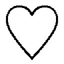
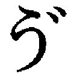

| スイートペットライフ (ベリーズ文庫) | |
| 高田ちさき | |
| (2014) | |
スイートペットライフ
高田ちさき
「え？ なに？ もう一回言って」
天気予報をぼーっと見ながら朝食をとっていた私に、ママが爆弾発言をした。
「だからね。ママ結婚するの。ウフ」
頬をほんのり赤く染めながら目を輝かせるその様子は、まるで少女漫画のヒロインのようだ。
ママが突拍子もないことを言うのは、いつものこと。
だけど今日の爆弾発言は、スルーできるレベルのものではない。
「......あの......言ってることがよくわからないんだけど。もっとわかりやすく言ってくれる？」
飲み込みの悪い私がじれったいのか、ママは眉をしかめた。
「だから、お嫁にいくの。け・っ・こ・ん」
ゆっくり言われたからって、理解できないものはできない。
「このあいだ、ママ韓国行ったでしょ。そこで出会っちゃったの、運命の彼に」
......どうやったら二泊三日の旅行で運命の相手に出会えるの？
年頃の娘にその方法をぜひ教えてほしい。
しかし、完全に目がハートになっているママに、今なにを聞いても欲しい答えは返ってこないような気がする。
「これ、お土産ね」
いきなり韓国海苔を渡された。
仕事に行く前に渡されても困ると思ったけれど、よく考えればママが韓国から帰ってきてまともに会話をしたのは今日が初めてだ。
お互いに仕事が忙しく、すれ違いの生活だったけど、まさかそのあいだにママが人妻になる決心をしているとは、想像だにしなかった。
私、青木美空は二十四年間、今まで真面目に生きてきたつもりだ。
多少の〝ズル〟はしてきたけれど、それも神様が許してくれる範囲だと思っている。
だけどいつも私の周りには、ありえないほどのハプニングがつきまとう。
今年で四十五歳のママ、青木瑞恵は娘の私から見ても女性として魅力的だ。肩口で揺れる髪に白髪なんてものは皆無だし、常に綺麗でいる努力をおこたらない。
だけど、世間一般の母親像からは、何万光年もかけ離れたところにいる人だった。男と金にルーズで、それで過去に痛い目を見ているはずなのに、懲りずに明るく前向きに生きているところは、見習いたいような見習いたくないような......。
酔っぱらったママは、小学生の私にさえ彼氏の愚痴を散々こぼした。そしていつも最終的には『でも愛してるの～』と泣き叫んで眠ってしまう。
それなのに、しばらくすると『新しい彼よ』とニコニコしながら、別の男性を紹介される娘の気持ちなど、きっと考えたこともないのだろう。いや、ママのことだから愚痴をこぼしたことすら覚えていないかもしれない。
私の成績や進路に関心を持ったことも、ほとんどなかったように思う。三者面談でも『私よりしっかりしてるから、本人にまかせます～』がいつものセリフだった。
これだけ言うと、今までの私の人生がどれだけ不幸なんだと思われるかもしれない。でも、あの頃からママは、私をひとりの自立した女として扱ってくれていたのだと思う。そのおかげかどうかはわからないけれど、自分のことは自分で決めてきた私の人生は、おおむね幸せだったと言ってもいい。
父親は、物心ついた頃からいなかった。
幼い頃『どうしてうちにはパパがいないの？』とお決まりの質問をしたことがある。するとママは『パパのことは、愛していたのよ。ひとりでもあなたを産もうと思うくらいにはね。でも結婚はしなかったの。できなかったんじゃないのよ、しなかったのよ』とにこやかに答えてくれた。
そのときのママの笑顔があまりにも晴れやかで、自分の〝生い立ち〟に疑問を抱いていたことがどうでもよくなった記憶がある。ママに必要とされ、望まれてこの世に生を受けたのだということを、幼いながらも実感できたからだ。
私が思春期も道を踏み外すことなくまっすぐに生きてこられたのは、この底抜けに明るいママのおかげだと思う。
しかし、そんな奔放なママでも『結婚したい』と言ったことは一度もなかった。
フリーのイラストレーターとして成功している彼女は、そこそこの恋愛を楽しんでいるものだと思い込んでいたのに、まさか今になって結婚なんて......。
驚いて瞬きしかできない私に、ママはまったく気がついていない。
「だから、来月からママ、韓国に行くから。アンニョン～」
韓国語で挨拶をし、手を振りながら仕事場へと消えていくママ。私はなにも声がかけられないまま、食べていた食パンをコーヒーで一気に流し込んだ。
「おはようございます！」
ママの爆弾投下のせいでいつものバスに乗り遅れた私は、普段よりも少し遅れて事務所に着いた。
私が勤める『わかば総合事務所』は、所長をはじめ十名の税理士・公認会計士、他にも司法書士、行政書士、社会保険労務士が在籍している。
オフィスは七階建ての自社ビルで、一階は所長の奥さんがやっている喫茶店『北極星』だ。レトロな雰囲気が売りで、天気のいい日にはテラスでゆっくりしている人も多い。二階は、受付・総務・ロッカーやリフレッシュコーナー、三階は会議室や応接室、四階・五階は会計士・税理士のフロアで、私のデスクは四階にある。各先生のチームに分かれ、私のような正社員のアシスタントやそれを補佐してくれるパートの人員が固まって、広いフロアにデスクを並べている。
なお、六階は行政書士・司法書士・社労士の先生の各個人ブース、七階は所長室と応接室、それと書庫があり、電子化が進む今でもたくさんの資料が置かれていた。
ロッカーに荷物を置き、扉の内側についている鏡で申し訳程度にグロスを塗り直し、前髪を整える。
ママ譲りの茶色い髪は、学生の頃はわずらわしいだけだった。いつも生活指導の先生に注意され、派手な女子たちからは目をつけられた。でも今となっては、カラーリングの必要がない綺麗な栗毛はママに感謝しなくてはいけないだろう。ふわふわの柔らかい髪の毛は、雨の日には若干面倒だけど、気がつけば背中の真ん中ぐらいまで伸びていた。
ただしママ譲りは髪の毛だけで、〝綺麗〟と言われるママに対して、私はどう頑張っても〝かわいい〟止まりだ。
二重の大きな目はうらやましいと言われることもあるけれど、そのせいで年齢より幼く見られるし、鼻がもう少し高ければ、唇ももう少し厚みがあれば......と思うことも多い。
今さらどうあがいても、仕方のないことだけれど。
「さて、頑張りますか！」
鏡の中の自分に気合いを入れてロッカーの扉を閉じた。
席に着き、一階の北極星でタンブラーに入れてもらったコーヒーをデスクに置く。
左隣の席では大久保佐和子先輩が、ハーブティーを飲みながらなにやらキーボードを打っていた。
佐和子先輩は私の三つ上で、私が入所したときからよく面倒を見てくれているお姉さん的存在。去年結婚してからパートとして勤めている今でも、頼りがいのある佐和子先輩がいてくれるおかげで、私の〝お仕事ライフ〟はかなり充実している。
それに、人妻となってもなお、おしゃれでスタイルのよさをキープしている佐和子先輩を見習わなければと常々思っていた。
「おはようございます。急ぎの仕事ですか？」
そう尋ねた私に、佐和子先輩は手を止めて、「おはよう」と返してくれた。
「いや、うちもそろそろマンション買おうかと思って。昨日の夜、旦那と『子供ができる前に買っちゃう？』って話をしていてね。それでエバースターのホームページで検索してたの」
佐和子先輩が画面を指差しながら言う。
画面を覗き込むと、綺麗な新築マンションの写真と間取りが表示されていた。
誰もが憧れるような素敵なインテリアで飾られた部屋を見ているだけで、心がウキウキしてくる。
「エバースターってうちのクライアントですよね」
「そうそう、経営状況も安定してるし、もしかしたら所長の口添えで少し値引きも期待できるかなって」
エバースターは、我が事務所最大のクライアントといえる大口の顧客。
一昨年までは建設会社のセクションの一部だった販売部門を、社長の息子が独立させてできた会社で、以前より自由にメディア戦略を行うことで業績はうなぎのぼりだ。
そんな話をしていると、税理士の諏訪先生、もとい諏訪健がフロアに入ってきた。
「諏訪君、おはよう」
佐和子先輩と一緒に挨拶をする。
短大卒業後、すぐここに就職した私のほうが先輩だが、諏訪君は私と同じ二十四歳。
最初は『先生』ときちんと呼んでいたけれど、同い年ということもあり、本人たっての希望で『諏訪君』と呼んでいる。敬語もクライアントの前くらいしか使わない。
「おはよう～」
五月のすがすがしい季節に負けないくらい、さわやかな顔で挨拶を返された。見ているこっちが、目を細めてしまいそうなほど眩しい笑顔だ。
ホワイトニングしていないのに、あんなに歯が白いなんてうらやましい......。
そんなどうでもいいことを考えながら、今日の業務の予定を立てる。
諏訪君は、私の右隣にこちらを向く形で置いてある、ひと回り大きなデスクに着くと、声をかけてきた。
「青木、午前中、三橋興産までおつかい行ける？」
「ん、大丈夫だよ。今日は一日伝票入力をしようと思ってたから」
諏訪君は「助かる～」と顔をほころばせた。
有名大学在学中に税理士試験に合格した諏訪君は、実家の税理士事務所を将来継ぐため、武者修行としてこの事務所で三年前から働き始めた。
彼が初めて事務所に現れたとき、所内中が色めき立ったものだ。
その身長は、百五十三センチの私と比べると三十センチは高いだろうし、少しタレた、人好きのする二重の甘い目元に、通った鼻筋。『笑うと白い歯が見えて、思わずため息が漏れちゃう』と、別の課の女子たちが言っていた。
髪はツーブロックで仕事柄短くしてあるが、地毛なのかパーマなのか毛先を少し遊ばせていて、今どき感満載だ。
私はそんなイケメンな彼のメインアシスタントを、彼が入所してきた当初から務めているのだが、彼のアシスタントを決めるときには『一体誰が、イケメン税理士のアシスタントになるのか』と多くの女子所員の関心を集めた。
もちろん諏訪君以外にも若い先生は何人かいるけれど、〝イケメン〟となると話は別だ。
私は当時担当していた先生が独立開業するというので、クライアントの資料の整理に追われていた。ちょうどそのとき諏訪君が入所してきて、その先生の業務をいくつか引き継ぐことになり、アシスタントの私もそのまま引き継がれたのだ。
『君が青木さん？ アシスタントよろしくお願いします』と諏訪君が白い歯を見せて私に挨拶したとき、周りの女子の殺気立った視線で十回は死ねると思った。佐和子先輩に泣きつくと、『わはは、こればっかりはどうしようもないね～』と休憩ブースで缶コーヒーをおごってくれた。
私だって、カッコいい男の子に興味がないわけじゃない。
思春期には学校のアイドル扱いの先輩に淡い恋愛感情を抱いたりもしたし、それなりに、あくまでそれなりにだけど、恋愛もしてきたつもりだ。
ただ、私の恋愛には必ず〝彼女〟がつきまとう――。
〝メイド戦士 キラキラ夢子ちゃん〟
私が小学生から中学生の頃にかけて放送されていたアニメで、放送終了して何年も経った今なお、マニアには根強い人気がある......らしい。
足元まで届きそうなラベンダー色のツインテール。語尾には必ず〝ニャン〟をつけるかわいい女の子なのだが、事件が起こると正義の味方に変身して悪者をやっつける、という女の子向けのアニメだ。
当時は、その変身グッズや文具など、多くの商品が発売されてはすぐに売り切れてしまうほどの人気だった。
かくいう私もこのアニメを見ていた。クラスの女の子から『美空ちゃんって、夢子ちゃんそっくりよね。うらやましい』と言われ、初めて夢子ちゃんを見たときの衝撃といったら、今でも忘れられない。ママにいたっては『ドッペルゲンガーじゃない』と隣で笑うほどだった。
そのときは私自身『夢子ちゃんアレルギー』になろうとは思いもしなかったのだけど......。
アレルギーのきっかけは今でも覚えている。だって、あれが私の初恋だったから。
＊ ＊ ＊
初めて彼氏ができたのは、高校三年生のときだった。
ひとつ年上の大学生の彼は、同じ高校の先輩で、彼が卒業するときに告白をしてくれて付き合い始めた。
真面目でさわやかな彼は、受験生だった私のために一緒に図書館で勉強してくれるような、学生として付き合うのに理想的な彼氏だった。
ただ、ときどき不意に言われる『ツインテールにして』『語尾に〝ニャン〟をつけてほしい』『ご主人様って言ってみて』『お仕置きしてほしい』というリクエストに違和感を覚え始めた頃、彼がどうして私を好きになったのかがわかった。
初めて彼のアパートに入ったとき、それはもう一目瞭然に......。
そこには私にそっくりの、あのアニメのポスターがいたるところに張り巡らされていたのだ。
胸がこぼれそうな襟ぐりにホワイトブリム、中が見えてしまうのではと心配になるようなミニスカート、そしてツインテール......。
部屋をうめつくすそのポスターの数に驚いた。というより、完全に引いてしまった。
そして私は決定打を浴びせられる。
「さぁ夢子ちゃん、じゃなかった......。美空ちゃん、こっちにどうぞ」
そうすすめられたソファには夢子ちゃん等身大？ の抱き枕が......。
その瞬間、彼に抱いていた恋心は砕け散った。
「ご、ごめんなさい。私、帰ります！」
そう叫んだ私は、一目散に自宅へと逃げ帰ったのだ。
別に彼がアニメ好きでもよかった。ちゃんと私のことを〝美空〟として見てくれているなら。夢子ちゃんでも誰かの代わりでもなく、自分自身を見てほしかった。
かくして私の初恋は幕を閉じた。
それ以来、〝夢子ちゃん〟という単語が出てくるたびに、それまでうまくいっていた恋愛がグラグラ揺れ始めるという『夢子ちゃんアレルギー』になり、私にとって恋愛中の〝夢子ちゃん〟という単語はタブーになった。
私だって二十四歳だ。そろそろ〝夢子ちゃん〟とは無縁の普通の恋愛がしたい。そんなに難しいことではないはずだ。
＊ ＊ ＊
「......おき......青木！」
ぼーっとしていた私の顔を諏訪君が覗き込んでいた。
「わ！」
端整な顔が目の前にあって驚く。
「『わ！』じゃないよ。大丈夫か？ 三橋興産、ネットの調子悪いらしいから、データをメモリに落としてもらってきて。ちゃんとパスワードかけろよな」
「うん、わかってる。経理を訪ねるんだよね？」
ＵＳＢメモリをバッグに入れながら確認する。
「そう、チャリで行く？」
「うん。近いしそうするよ」
そう答えると、私は事務所の自転車の鍵を取り、バッグを掴んで外出の準備をした。
今日みたいな五月のすがすがしい空気の日は、事務所で仕事をしているより、おつかいをするほうが私は好きだった。
「いってきま～す」と声をフロアに響かせ、エレベーターに乗り込み一階へと下りる。
事務所の裏にある自転車置き場まで回ろうとすると、足元にキウイがいくつか転がってきた。
不思議に思い目線を上げると、すぐそばの歩道でおばあちゃんが必死に拾い集めている。だが、紙袋が破けているので、これでは持って帰れないだろう。
私はキウイをいくつか拾って、おばあちゃんのそばに駆けより、声をかけた。
「新しい袋を持ってくるので、ここで待っていてくださいね」
そう言い残して、北極星に入り、事情を説明して手頃なビニール袋をもらう。
おばあちゃんのところに戻って、私も一緒に残りのキウイを拾い始めると、おばあちゃんは、私を見て申し訳なさそうに眉を下げた。
「見ず知らずの人なのにごめんなさいね......」
「いえ、大丈夫ですよ！」
元気に返事をして、立ったまま最後のキウイを拾おうとしたとき、ファスナーをきちんと閉めていなかった私のバッグの中身が歩道に散乱した。
「わー！」
「あれま」
おばあちゃんと私の声が、路上に響く。
「ぶふぁ！ ごほごほ」
突如、液体を噴きだす音とむせる声が聞こえてきた。
喫茶店のテラス席を見ると、ひとりの男性がこちらを見て笑いをこらえようとしているのがわかる。
自分でもコントみたいだって思っているのに、他人に笑われると余計に恥ずかしくなる。
急いで最後のキウイを拾っておばあちゃんに手渡し、バッグの中身をかき集めてからさっきのテラス席を見ると、爆笑男はすでにそこにはいなかった。
一回くらい睨んでやればよかったな。
私はおばあちゃんに別れを告げ、裏の自転車置き場に向かった。
十九時。仕事を終えて帰宅した。
シャワーを浴びて、冷蔵庫から取りだしたペットボトルからグラスに水を注ぐ。
ダイニングの椅子に腰かけながら、ターバン状にしたタオルをほどいて髪をガシガシ拭いていると、ママがキッチンから声をかけてきた。
「チヂミ焼いたの。食べる？ サンヒョンから教えてもらったのよ！」
サンヒョン？ 誰それ？
「食べる～」
返事をしながら、なにか大事なことを忘れているような気がしてならない。
「で、住むところは見つかったの？」
チヂミをテーブルに置いて、ママが尋ねてきた。
「住むところ？ あっ！」
大事なこと、そうだ、とっても大事なこと忘れてた！
韓国で出会った運命の相手と結婚するというママの爆弾発言。あのあと、家を出る間際になんて言ってたっけ？ 確か......。
『だから、来月からママ、韓国に行くから。アンニョン～』
今朝のやりとりを思い出し、私はサーッと青ざめた。
「本当に結婚するの？」
もう一度、意思確認をする。
ママはチヂミを頬張りながら、私の向かいの席に座った。
「するわよ～。彼ね、パティシエなのよ」
パティシエとチヂミ......どういう関係があるんだ？ と思い、私は深いため息をつきながら、チヂミをつつく。
「わかった。結婚するのはよしとして、どうして私がこのマンションを出ていかないといけないの？」
サンヒョン直伝のチヂミはキムチとイカ入りで、〝ダシダ〟という韓国ではおなじみの調味料を使っているらしい。
確かに今まで食べたことのあるチヂミよりおいしくて、納得の味。
もぐもぐしながら冷静に事情を把握しようとした。
いつものことだが、娘の私が冷静にならないと、ママのトンデモ思考回路についていくなんて到底無理だ。しかも今回はいつも以上に厄介ときた。
目先のことしか考えないママの代わりに、私があらゆる可能性を示唆してあげないといけない。でも本当ならこれって、親の仕事じゃないのかな？
そんな私の心情を推し量るわけもなく、ママは得意気に語る。
「ここを売ってサンヒョンが開くお店の資金にするの！」
「それって......」
騙されてるんじゃない？ 喉元まで出かかったセリフをのみ込む。
今ここでそれを言っても、ママはきっと聞く耳を持たない。
「でも、もしサンヒョンとダメになったとき、ママ帰るところがなくなるよ」
控えめに、すぐそこにある現実について話をしても、夢見るママには無駄だったようだ。
ママはカッと目を見開き、立ち上がる。
「ママとサンヒョンは永遠の愛で結ばれているの。死がふたりを分かつまで一緒だわ」
ドンッとテーブルを叩いて叫ぶママに、これ以上はどうしようもないなと思い、私はもう一度深いため息をついた。
「ママは本当にそれでいいのね？」
筋金入りの恋愛体質であるママに、私がなにを言っても仕方ないだろう。
「うん。ママ、残りの人生をサンヒョンと一緒に生きるの！」
そこまで言いきるママを見て、私はもう意見するのをやめた。
ため息をひとつ漏らした私など気にもしていないママは、『名案！』とでもいうようにパッと顔を輝かせた。
「そうだ！ 美空ちゃんもいい歳なんだから賃貸じゃなくて、分譲マンションにしなさい。彼氏もいないんでしょ？ 資産だけでもちゃんと持っておかないと、あとで泣きを見るわよ」
ママは抜けているようで、ときどきこういうシビアな現実を娘の私に突きつける。
確かにそうだな......。
この先、絶対に結婚できるとは限らない。それならば自分の気に入った物件で、ペットでも飼って生活を充実させたほうが、人生楽しいのでは？
ふとそんな風に思ったけれど、現実的でないことは私もすぐに気がついた。危うく、ママのトンデモ発言に影響されるところだった......。
ひとりで悶々と考えていると、ママの携帯電話から音楽が鳴り響いた。
「サンヒョンから電話だ！」とうれしそうに電話に出るママを尻目に、私は食べ終えた食器を流しで手早く洗うと、自室のベッドへと直行した。
ママの口ぶりでは、来月から韓国に行くというのはどうやら本気のようだ。とすると、それまであと二十日ほど。私に残された時間はほとんどないみたいだ。
ベッドで横になり、目をつむってなにからやればいいのか考えていると、不意に佐和子先輩がエバースターでマンションを探していたことを思い出す。
私も土曜日にエバースターの物件でも見に行ってみようかな。
購入は無理でも最新のマンション事情がわかるし、今は漠然としているイメージが掴めるかもしれない。
そう考えると新生活への期待が大きくなり、土曜日が待ち遠しくなった。
四年間貯めに貯めたお金は、新生活の準備に消えていきそうだ。
土曜日、私は早速エバースターが販売するマンションのモデルルームに見学に来ていた。
「こんにちは。いらっしゃいませ」
綺麗な巻髪のお姉さんに声をかけられ、アンケートに記入するよう促される。
家から一番近いという理由でここに来たけれど、物件的にはファミリー向け。土曜日の今日は幸せそうな家族が何組か見学していた。
色々と説明を聞いていると、やっぱりとても買えないなと感じたが、せっかくなので、広いカウンターキッチン、ＤＶＤやミストサウナつきのバスルーム、和室などがある三ＬＤＫの部屋を見て回る。
素敵なバスルームで泡風呂に入りながら、ＤＶＤを鑑賞している自分を想像して思わずニヤけた。
ぶんぶんと頭を振って自分を現実に引き戻す。
今の貯金を全額頭金にしても、二十四歳ＯＬの私がローンを組めるはずがない......。素敵だな......と憧れるけど、私には到底手が届きそうもないな。
夢は夢としてあきらめて最初の目的を思い出し、やっぱり身の丈に合っている賃貸マンションを探そうと思い直す。
「私には敷居が高かったみたいです」
受付の綺麗なお姉さんに伝え、モデルルームをあとにしようとしたとき、後ろから声をかけられた。
「あの、お客様」
振り向くとそこには、高級そうなストライプの細身のスーツを身にまとった長身の男性がいた。
ハッと息をのんでしまうほどの整った顔立ち――自然に分けられた黒いサラサラと流れる前髪の奥で、一重の涼やかな目元がこちらを見つめている。
しっかり通った鼻筋から下に目を移すと、少し薄めの唇がニコリと微笑んでいた。
涼しそうと思っていた目に再度視線を移すと、目元の皺がすごくチャーミングに感じられた。
見るからに年上の大人の男性だった。三十代前半くらいだろうか......。
こんな素敵な人、さっきまでいなかった気がする。
思わず見とれて別世界に行っていたがハッと気がつき、自分を呼び戻した。
「私ですか？」
自分の顔を指差しながら、男性を見上げる。
「はい、あなたです。私、この会社のもので大倉と申します」
そう言ってにこやかな笑顔のまま、私に話しかける。
「はぁ」
「あなたにピッタリの物件があるんです。ぜひ今から案内させてください」
長身の大倉さんが前のめりで私に話しかけてきた。
私はあわてて顔の前で両手を振る。
「でも私には、分譲マンションはちょっと手が届かないみたいで......」
私の言葉を遮るように、大倉さんはさらに私に顔を近づけてきた。背の高い彼に、ぐいっと間をつめられると迫力がある。
「でも、お客様に絶対にピッタリの物件なんです。一度見てから判断してください」
ついには私の両肩に手を置かれてグラグラ揺すられた。
「わ、わかりました。そこまで言うなら」
私は揺すられすぎて、もげるんじゃないかと思った首をさすりながら返事をした。
なんだか少し強引な感じがするけど、大丈夫かな？
でも、私の返事に心底うれしそうな表情を浮かべる彼を見ると、悪い人ではなさそうだ。
「あの、でもしゃ――」
「君はいいから業務に戻りなさい」
大倉さんは、綺麗なお姉さんが話しかけようとしたのを遮るように言うと、私に向き直った。
「では、青木美空さん、まいりましょう！」
受付のときに書かされたアンケートで知ったのか、私の名前を呼んでニッコリと微笑む。そして、意気揚々と私の肩を押して出口に促すと、私を近くの駐車場まで案内し、車に乗るように言った。
不動産会社の車で物件を見に行くこともあるので、車に乗ること自体に抵抗はないけれど、車を目にしたとき、違和感を覚えずにはいられなかった。
なぜなら、その車のエンブレムが、誰でもわかるような高級車のものだったからだ。
深いグレーのしなやかなライン。ピカピカに磨き上げられたその車は、一千万円はくだらないだろう。
クライアントのお医者様がカタログを見て欲しがっていたのを思い出す。
大倉さんは助手席のドアを開け、驚き戸惑っている私を押し込むように車に乗せた。
どうして助手席？ こういうときって、普通は後ろじゃないの？
頭に浮かんだ疑問を口にできないまま、私のシートベルトはすぐさま彼によって締められてしまった。
まるで、逃がさないと縛りつけられているように感じたのは気のせいだろうか？
革張りのシートは、今まで乗ったどんな車よりも座り心地がよくて、内装にも高級感がにじみ出ていた。
「じゃあ、出発しますよ」
私を見て穏やかに微笑むその顔は、この高級車にしっくりくる品のよさだ。
車が走りだしても、揺れなんてほとんど感じなかった。
最近の営業車ってこんな高級な車を使うの？
不動産会社の車は軽自動車が主流だが、エバースターは分譲マンションを扱う大会社だ。物件によっては私が一生足を踏み入れることがないほどの高級マンションもある。そのお客様を案内するためのものだろうか？
思考を巡らせながら落ち着かない様子で車内を眺めていた私を見て、大倉さんが優しい笑顔で話しかけてきた。
「なにか不都合なことでもありましたか？」
「いえ、素敵な車ですね」
すると大倉さんは、一重の目をうれしそうに細めた。目元の皺が、やっぱりチャーミングだ。
「ありがとうございます！ わかりますか？ この車、本当にかわいがってるんです。いつも僕の期待にちゃんと応えてくれるんですよ」
運転をしながら弾んだ声で答えてくる。
「は、はは......。そうですか」
その無邪気な顔を見ると、なんとなく褒めた、なんて言えない。
これって営業車じゃないの？ ここまで愛着があるってことは私有車？ なんだろう、さっきからいろんなことが引っかかる。
そう思っていると、車のスピードが落ちた。
「もうすぐ着きますよ」
大倉さんに声をかけられて、車外の景色を見渡す。
そこは高級マンションが立ち並ぶエリアで、富裕層がこぞってマンションを所有している場所だった。
「え、ここって......」
目の前には、見上げると首が痛くなりそうなほどの高層マンション。エントランスは一面ガラス張りで、中にはオブジェのような置物が置かれている。
驚きを隠せず運転席の大倉さんを見ても、ただニコニコと笑っているだけ。
「着きましたよ」
そう言ってロータリーに車を停めると、スーツを着た男性が近寄ってきた。
「おかえりなさいませ。大倉様」
この人は誰だろう？
「車、地下に停めておいて」
大倉さんはそうひと言告げると、車から降りて助手席の私のほうに回り込み、ドアを開けてくれた。
「どうぞ、足元気をつけてくださいね」
私がパンプスの足をそろえて降りようとすると、そっと手を取られた。
「ふふ、思った通りぷにぷに」
......はっ!?
「え、えっと、なにか言われましたか？」
「いいえ、なんでもありませんよ。こちらへどうぞ」
そのまま手を握られてマンションのエントランスまで歩いた。
さっきの『ぷにぷに』っていうのは、空耳だったのかな......？
ふと、手を握られっぱなしであることに気づく。
「あの、手離してください。ちゃんと歩けますから」
「そうですね、失礼しました」
大倉さんはそう言ったあと、私の手をパッと離すと、エントランスで暗証番号を押して解錠した。
中に足を踏み入れると、ピカピカに磨かれた床は大理石で、天井はすごく高い。
奥には応接セットが置かれていて、太陽の光が差し込むそこは、まるでホテルのティーラウンジのようだった。
「大倉様、おかえりなさいませ」
声がしたほうを見ると、ひとりの男性が頭を下げていた。
五十代ぐらいであろうか、顔を上げたその人は〝紳士〟という言葉がピッタリの雰囲気だ。スーツの襟には、バッジがついている。それはエバースターの会社のマークだった。
「こんにちは。青木さん、この人はここのコンシェルジュです」
「コ、コンシェルジュ？」
マンションっていったら普通、管理人さんとかじゃないの!?
これまでも、外観、内装を見て高級だとは感じていたけれど、コンシェルジュの存在で、このマンションが私には分不相応なものだと改めてわかる。
「コンシェルジュに驚くなんて、新鮮だな～。最近では多いんだよ、コンシェルジュが常駐しているマンション」
驚いて目を見開く私を見て、大倉さんは微笑んでいる。
「〝コンシェルジュ〟なんていってるけど、ここの生活での困ったことは彼に言えばどうにかなるから〝なんでも屋さん〟だと思って」
そう言われたが、ニコニコと笑う紳士的なおじさんが醸しだすその落ち着いた雰囲気は、〝なんでも屋さん〟というより、もはや〝執事〟のたたずまいだった。
「さぁ、早くこっちに来て。部屋を見せたいから」
少し前を歩いていた大倉さんが、こちらを振り向いて手招きしている。
私は、長い足でどんどん進む大倉さんについていくのがやっとだった。
大理石の床は、あわてて歩くと滑ってしまいそうなくらい綺麗に磨かれているし、壁にかかっている絵は、私のような凡人には理解できないが、きっとすごい値段なのだろうと思わせる存在感を放っている。
しかし、さっきから口調も態度もどうもフランクなのは気のせいかな？ もしかして、私が緊張しないように気をつかってくれているとか？ それが彼の営業スタイルなのかもしれない。
そんなことを考えてはいたけれど、エレベーターが最上階の二十四階に到着したときには、驚きでそんなことは頭から吹き飛んでいた。
エレベーターから降りるとそこは、さっきの大理石とは違って絨毯が敷きつめられている。突きあたりの壁は間接照明で、そこにもオブジェが飾られていた。
「こっちです。早くおいで」
ん？ やっぱり彼の言葉づかい、おかしくない？
そう思ってみたものの、目の前の光景に興味が移っていた私は足を進めた。
「あれ？ このフロア、他に扉がありませんけど？」
エレベーターを降りると、そこにある扉はひとつだけだ。
「うん。ないんだ。このフロアにあるのはこの部屋だけだから」
「この部屋だけ!?」
私は、驚きを隠せないまま彼に確認する。
「あの、えっと、紹介してくださる物件、ここで間違ってないですか？」
「間違ってないよ。さぁ、どうぞ」
そう言って、私の背中を押す。
大倉さんに促されて入った部屋は、私の想像していたようなマンションとは大きく違っていた。
「わぁ......」
太陽が燦々と降り注ぐリビングはとても広く、下手すると今ママと住んでいる二ＬＤＫの部屋がすっぽりと入ってしまいそうだ。
リビングはガラス張りで、その先には広いルーフバルコニーがある。
品のいい革張りの白いソファとローテーブルを中心とした、シンプルだけどおしゃれなインテリアに、思わず感嘆の声を漏らしてしまった。
窓際に目を移すと、大きい観葉植物のウンベラータが鎮座して、太陽の光をうれしそうに浴びている。床にはふかふかのラグが敷かれていて、この床を歩くなら素足のほうが気持ちいいに違いない。壁には大きなテレビがかけられていて、スピーカーも完備されている。
ここで映画を見たらきっとすごい迫力なんだろうな......。
リビングの奥には広いダイニングテーブルがあった。ここからはカウンターしか見えないが、その先にはキッチンがあるんだろう。
「南向きだから、明るさは十分。キッチンは最新式だし、食洗機は海外製のものを設置してある」
部屋をぐるぐると歩きながら、設備を紹介してくれた。
「どこでも好きなところを見ていいよ。キッチンもお風呂も広くて使いやすいと思う」
「じゃあ、遠慮なく......」
この際だから、この素敵なマンションをきっちり見学していこうと思い、私は大倉さんのそばを離れてキッチンへ向かう。
大倉さんの言った通り、最新式のキッチンで、ＩＨクッキングヒーターに食洗機、水道とは別に浄水器もついている。
背面のキッチンカウンターにはスチームオーブンレンジやエスプレッソメーカーがあり、扉を開けると、イタリア製の有名な食器がズラリと並んでいた。
「あ、そこのボタンは床暖房ね。キッチンにも床暖房が完備されてるから冬でも寒くないよ」
「床暖房まであるんですか？」
驚いた私の表情がおかしかったのか、大倉さんは「うん。このマンションは全部の部屋についてるよ」とクスクス笑いながら答えてくれた。
今度はバスルームへ移動する。
バスルームも広くて清潔。先ほどモデルルームで見たＤＶＤもついていて、ミストシャワーはもちろん、ラウンドバスタブでジェットバスまで備わってっている。
「はぁ～」
素敵すぎてため息しか出ない。
他の部屋の案内をしてもらうためリビングに戻ると、ふたつの扉が目に入る。
ひとつの扉を開けると、チェストとデスクが置いてあり、書斎的な使われ方をしているようだった。
もうひとつの部屋には、大きなベッドがあり寝室だということがわかった。寝室も書斎も、ざっと見て十畳以上はありそうな広さだ。
「あの、でも......ここ、誰か住んでますよね？」
モデルルームの装飾とは違って、綺麗だけど、明らかに生活感がある室内に違和感を覚えて尋ねる。
「そうなんだ。実は、ここは僕のすごくよく知ってる人の部屋なんだけど、仕事が忙しくて管理ができないみたいなんだ。家って住まないと傷むだろう？ だから誰かに貸したいと思っているようなんだ」
「そうなんですか......」
「それで、モデルルームにいた君に白羽の矢を立てたわけ！」
『おめでとうございます！』と言わんばかりの表情で、なぜだかとてもうれしそうに話しかけてくる大倉さん。
「白羽の矢......ですか？」
「そうそう！」
大倉さんは満面の笑みを浮かべながら、激しく頭を上下させ頷く。
え、えっと......この人、大丈夫かな？ 確かに素敵な部屋だけど、家賃だって相当高いに違いない。
いくら貸してくれるといっても、こんな高級マンションの家賃を私が払えると思っているのだろうか？
状況に思考が追いつかず、ポカンとしてしまう。
車に乗せられたときから強引だと思っていたけど、私をどこかの令嬢と間違えているとか？ それとも契約が取れなくてピンチなの？
私も調子に乗ってつい見学してしまったけど、勘違いさせているなら申し訳ないから、断ってさっさと帰ろう。
そう思っていたとき、バッグの中のスマホが震えていることに気がついた。
「ちょっと、電話いいですか？」
大倉さんに断って電話に出る。
「あ、ママ」
『美空ちゃん、今ちょっといいかしら？』
ダメって言ったって話すくせに、ママは一応、私に断りを入れてきた。
私は窓際に移動して、「いいよ。外だから手短にね」と電話を続ける。
『わかったわ。美空ちゃん、申し訳ないんだけど、あと一週間ぐらいで今の部屋を退去してくれる？ あのマンション買い手がついたの！』
ルンルン、と鼻歌でも聞こえてきそうなくらい浮かれているママの声。
ひと呼吸を置いて、私は「えーーー！」と、大倉さんが近くにいることも忘れて大声を上げた。
「ちょ、ちょっとママ！ 一週間って、そんなの無茶だよ！ 引越しするにももう少し時間が......！」
『んーでもねぇ、もうママ、ハンコ押しちゃった』
「なに考えてんの、ママったら!! 非常識にもほどがある!!」
そう抗議しながらも、いつも通りのママだとも思う。
確か今住んでいるマンションも『買っちゃったのー！』と言ったあと、すぐに引越したのを思い出した。
あわてる私を意に介さず、いつも通りのんびりとした口調でママは続ける。
『ダメダメ、もう決定したのよ。それと、美空ちゃんのお金借りちゃった』
......は？ 私、耳が悪くなったのかな？
「え？ 借りちゃったって......」
『四和銀行の口座のお金。これ、ママの結婚祝いにちょうだい。サンヒョンのお店の出店資金がちょっとだけ足りないの』
「ちょっとだけ、って一体いくら？」
『ん？ 三百万。ウフフ』
「なにバカなこと言ってんのよーー!!」
二十四階建てのマンション全戸に響き渡るほどの大声を発した。
大倉さんが目を見開いてこっちを凝視している。
「結婚祝い？ 出店資金？ なに言ってるのよ！ 三百万って、社会人になって四年間コツコツ貯めたお金全額だよ!? 引越し費用にするつもりだったのに！」
私は怒りで止まりそうになった呼吸を整える。
「ねぇ、なに考えてるの？ やっぱり......おバカ？」
正気であれば親に言うセリフではない。だけど私は正気を保っていられる状態ではなかった。
私の怒声に、ママはしゅんとなるどころかケロッとして答える。
『そんなこと言ったって、もうサンヒョンに送金しちゃった！ ウフフ』
うれしそうなママの声が、頭の中をぐるぐる回る。
もう、ひどすぎて言葉が出ない。頭の中が真っ白だ。
満期になった定期を利率のいい別の銀行に預け替えしようとして、普通預金に入れていたのが悪かった。いや、通帳と一緒に印鑑や保険証を保管していたのが悪かった。いや待て、簡単にママにバレるような暗証番号にしていたのが悪かったのか!? ......いいや、そもそもママの子供に生まれたこと自体が悪かったんだ......。
きっと、委任状を適当に書いて、私の保険証を使って預金を引きだしたに違いない。
私はがっくりと肩を落とし、思考回路がショートした頭を抱える。
マンションなんて夢のまた夢、賃貸物件の敷金礼金さえ準備できない......。
いや、それどころか貯金もないまま、これからどうやって暮らしていけばいいんだろう？ そうだ、ママも一応、親なんだから私の当面の生活費ぐらいは送ってくれるかもしれない。
脳内真っ白な私に、電話口のママがトドメを刺した。
『ママ、サンヒョンに会いたくなったから、今から韓国に飛ぶわ。アンニョン～』
ママのテンションの高い声が聞こえたかと思うと、電話が切れた。
私は無音の電話を握りしめ、無言で窓の外に広がる景色を見つめる。
二十四歳、普通のＯＬ。住むところがなくなりそうです......。
私に最後通告を突きつけたスマホを見つめていると、指先がどんどん冷たくなっていくのがわかった。
さっきまで、浮かれてこのモデルルームみたいな部屋を見ていたのに......。
思わずその場にペタリとしゃがみ込む。
「どうしました!?」
私を見てビックリした大倉さんが、そばに駆けよってきて肩を抱きながら立たせてくれた。
そして、ゆっくりとソファへ座らせてくれる。
「ここで少し待っていてください」
なにも考えられず、私はただ首を縦に振って頷くことしかできない。
これからのことを一体どうすればいいのか、事態があまりにも衝撃的すぎて、頭がまったく働かない。
これまでママには散々振り回されてきたけれど、ここまでひどいことはなかった。
娘の生活をピンチにしてまで、恋人のために出店資金を提供するなんて、どこまで恋愛体質なんだ！ 私は絶対、ママみたいにはならない！ 絶対に！
本当に考えなければいけないことは住むところの確保なのに、現実逃避から、ママに対する怒りを爆発させていると、ふと目の前にティーカップが差しだされた。
「どうぞ。ミルクティーだよ。熱いからちゃんとフーフーして」
「はい。ありがとうございます」
......ん？ フーフー？
彼の妙な言い回しで、急に現実に戻った。
訝し気に彼の顔を見るが、当の本人はまったく気にしていないようで、優しい眼差しを私に向けてくれている。
差しだされたミルクティーは、アールグレイの香りが豊かで、気持ちを一気に落ち着かせてくれた。
「で、少しは落ち着いた？」
白い大きなソファの端に座っている私の横のオットマンに、大倉さんが腰を下ろす。
そして、ゆったりとティーカップを持ち上げてひと口飲んだ。
「あ、はい。突然すみませんでした」
そう言ってペコリと頭を下げる。
うっかりしていた。そういえば、私はまだ大倉さんに部屋を案内してもらっている途中だった。
ママのことだから、本当にあと一週間で私を追いだすだろう。なんとかお金を工面して部屋を探さないと、住むところがなくなってしまう。
そうだ！ 佐和子先輩に相談しよう。居候は......旦那様がいるから無理か......。
私に、こんな夢みたいなところで油を売っている暇は一秒もない。
「あの！ 私、帰ります！ ごちそうさまでした」
勢いよく立ち上がる。
「どうしたんだい、いきなり。まだこの部屋の話は終わってないじゃないか」
「あの、その話なんですが、ちょっとのっぴきならない事情ができまして......」
「〝のっぴきならない〟とは聞き捨てならないね。相当大変みたいだ」
大倉さんはそう言って顎をさすった。
「その、のっぴきならない事情を僕に話してくれないか？」
「でも......」
「僕に話すことで、なにか解決の糸口が掴めるかもしれないよ」
そう優しく諭すように言われる。
これからのことで不安でいっぱいの私は、彼のその優しさに甘えたくなってしまった。それに、わざわざ時間を割いて案内してくれていたのに、わけもわからないまま帰られては上司に報告できないだろう。
「そうですよね。すみません、ちょっと色々焦っていて」
「ん？ なにをそんなに焦っているのか言ってごらん」
大倉さんは立ち上がっていた私の腕を引き、再度ソファに座らせた。そして温かい目をして覗き込んでくる。
この人になら、洗いざらい事情を話してもいいかもしれない......。ふと、そんな包容力を感じた。
「とてもお恥ずかしい話なのですが......」
恥を忍んで経緯を話す。
今日初めて会った他人に、こんな話をするのはどうかと思うが、誰かに聞いてほしかった。自分が悪いんじゃないと言ってほしかった。
すべてを話し終えると、大倉さんは、私の頭を優しく撫でた。
「そうか、そんなことが......大変だったね」
「はい......」
返事をしながら、どうしてこの人は私の頭を撫でているんだろうと考える。でも、心が弱っているせいか、その手の温かさが今はとても気持ちよくて、深く考えずにされるがままにしておいた。
「よし、ここは僕にいい考えがあるよ！」
「え？ いい考え？」
「君、ここに住めばいいよ」
なんでもないことのように言って、満面の笑みを浮かべてくる。
......この人は一体なにを言っているんだろう？
さっきまで必死に話をしていたのに、まったく聞いていなかったってこと？
何度か引っかかることがあったけど、やっぱり彼は少しおかしい。
「あの、私の話、聞いてました？ 今の私はほとんど無一文なんです。こんな豪華な部屋を借りるお金なんて、ないんです！」
先ほどの私の話をまるで理解できていないようなので、もう一度簡潔に説明する。ところが大倉さんは、「心配いらないよ」と笑って目尻に皺を寄せた。
「だからだよ。家賃は、そうだな......三万円でどうかな？」
目の前の彼はニコニコと笑顔を絶やさずに言葉を続ける。
私は大倉さんの言葉に目を見開いた。
「三万？」
このご時世、三万でこの部屋を貸しだすなんてありえない。
なにか悪い話に引っかかっているんじゃないか、と大倉さんのことをまじまじと見つめた。人がよさそうで騙しているようには見えないけど......でもこの笑顔の仮面の下に本当の顔を隠しているのかもしれない。
「この部屋は僕のよく知ってる人の持ち物でね、今急いで住人を探しているんだ。家具や家電なんかもそのまま使っていいし、家賃はいくらでも構わないんだ」
なんだかまだあやしい気がするけど、大倉さんの説明に納得できなくもない。
私みたいに住む部屋に困っている人がいるのに、そんなお金持ちがいるなんて世の中は不公平だ。
「でも......。こんな豪華な部屋、気おくれします」
当たり前だ、庶民には豪華すぎるんだもの。
私がしぶっていると、大倉さんはスッと真面目な顔になった。
「じゃあ、一週間後にホームレスになるの？」
『ホームレス』という単語にドキリとする。
確かに、ママはやると言ったら引かない、有言実行の人だ。したがって私はあと一週間であの部屋を出ていかないといけない。それまでに住みかを見つけられなければ、彼の言う通りホームレスだ。
ただでさえ時間がないのに、それに加えてお金もない。
さっきまで、泡風呂でＤＶＤを見る妄想をしていたのに、今は段ボールのおうちで新聞紙にくるまっている自分が目に浮かぶ。
「ホームレス......」
ポツリと自分で呟いてみると、その単語が重く心にのしかかった。
大倉さんは、困った、というように眉尻を下げた。まるで泣きだしそうな表情に見える。
「君にそんな生活させられないよ。ここで出会ったのもなにかの縁だ。困ったときはお互い様。情けは人のためならず、袖振り合うも多生の縁、人を思うは身を思う、一村雨の雨宿り、それから......」
「あの、わかりました」
思わず口をついて出てしまった。
でも、たぶんこれが私の本心だ。仕事で部屋を探す時間もない。お金がないからホテル暮らしをすることもできない。そう考えると私の心は決まった。
きっとこの大倉さんはかわいそうな私を見かねて神様が授けてくれた天使なんだ。
神様、今まで存在を疑ってごめんなさい。今回ばかりはあなたのご加護に感謝して、この幸運をお受けします。
「私、このお部屋に住みます！」
ぐっと握りこぶしを作り、起立して宣言した。
「じゃあ、ここと、ここね、サインして」
「はい」
私が高らかに入居宣言をすると、大倉さんは立ち上がり、ダイニングテーブルに置いてあった封筒から契約書を二部ずつ取りだして、私にサインをするよう促した。
「あの......確認なんですけど、家賃は本当に三万円で大丈夫なんでしょうか？」
「あぁ、心配しないで。大丈夫」
そう言ってニコニコ笑う大倉さん。
私は住むところ――しかもこんなに素敵な部屋を確保でき、直近の未来への不安がなくなったことにすっかり安心して、何箇所か言われるままサインをしていた。本来ならば、何枚もある契約書のすべてにしっかり目を通すべきだったのに......。
「あと、ここのサインで最後」
最後の一枚にサインをすると、大倉さんはさっさと契約書の束を引き上げた。
なんだかあわてているようにも感じられたけど......まぁ、気のせいか。
「さぁ、これでこの部屋は君のものになったよ」
大倉さんは今日一番の笑顔を見せて、目尻の皺を濃くした。
やっぱりこの皺が魅力的だなぁ、なんて呑気に思いながら私は頭を下げる。
「ありがとうございます！ このご恩は一生忘れません。私にできることがあればなんでもします」
「本当に？」
大倉さんは、私の顔を覗き込んで聞いてくる。整った顔が間近に迫ると頬の温度が上がった気がした。
「は......い。私にできることなら」
うわっ、どうしよう。こんなに綺麗な顔を近づけられちゃ、ドキドキしないほうがおかしいよ......。他のことが考えられない。
「絶対だよ。約束！」
大倉さんはそう言うと、形のいい唇の端をくっと上げた。
今まで見せていた笑顔とはどこか違う、いたずらっ子のような笑顔。
こんな顔もするんだ......。
それもまた魅力的で、思わず胸がときめいてしまった。
そして私は、今のマンションを出るタイムリミットとなる今度の土曜日に、この部屋へ引越してくることに決めた。
きっとママは韓国から電話一本で『美空ちゃんお願いね～』と言って、済ませるつもりだ。
一週間であの部屋を明け渡せるように、どうにか荷物をまとめなければ......。
ブツブツとひとりで今後の予定について脳内会議を行っていると......。
「ぷっ」と噴きだす音がした。
不思議に思って大倉さんを見ると、笑いをこらえて肩を震わせている。
ん？ デジャヴ？ どこかでこの光景、見た気がする......。どこだろう？
思考を巡らせるけれど、なかなか思い出せない。
大倉さんは、気を取り直すように、パンパンと手を叩いた。
「さぁ、さぁ、早く帰って引越しの準備をしないと。一週間しかないんでしょ？ 乗りかかった船だから、マンションまで送ってあげるよ」
「じゃあ、お言葉に甘えて。お願いします」
貯金が空となっては、電車賃さえも節約したい。今はこの申し出をありがたく受けよう。
私はさっき会ったばかりの大倉さんをすっかり信頼しきっていた。
「大倉です。車エントランスにお願いします」
大倉さんは電話でそう伝えると、私を玄関へと促した。
さぁ、忙しくなる。だけど、どうにかこうにか生活の場は確保した。
こういう不測の事態に陥ると、私はいつも長いものに巻かれて、濁流に飲み込まれながらも、息継ぎだけは頑張って今日まで生きてきたんだ。
ママに理不尽な思いをさせられるなんて、いつものことだ！
高校のときにはうっかり学費を使い込まれて、先生にお願いして二ヵ月待ってもらったことだってあった。
仕方ないと腹をくくれば、その先どうとでもなる。
だから今回だって大丈夫。きっと大丈夫――。
......しかし、そう思えたのは、引越しが完了するまでの短いあいだだけだった。
この一週間は目を回している暇もないほどの忙しさで仕事をこなし、部屋の片づけに没頭した。
救いだったのは、ママが私に部屋の片づけをまかせるのではなく、業者を手配していたことだ。ママの部屋をはじめ、キッチンやリビングの荷物の梱包と運びだしから簡単な掃除まですべて、引き渡しができる状態にしてくれるということだった。
これで自分の部屋だけ綺麗にすればよくなった。
「ママも気がきくじゃん」
そう思って洋服をつめ込んでいたが、危うくママに感謝しかけていることに気づく。
「元はといえば全部ママのせいだった！」
私のこの順応性の高い性格をどうにかしないと、いつか大変な目に遭う。いや、すでに遭っているか。反省反省......。
家具も家電もそのまま、あの高級マンションのものを使用していいとのことなので、私の部屋にある古い家具はすべて処分することにした。だから私の引越しの荷物は段ボール箱八個だけだ。
金曜の夜は、片づいたキッチンでコンビニ弁当を食べた。
それが、この部屋での最後の食事となった。
土曜の午前中、私はあのマンションに到着した。
コンシェルジュさんに挨拶をして、エレベーターに乗り、二十四階の部屋の前にたどり着く。
「ここが今日から私の家......」
インターホンを鳴らす前にドアをしみじみと眺める。
初めてのひとり暮らし。これからこの部屋とたくさんの時間を過ごし、歴史を重ねるんだ......。
意を決してチャイムを押す。
引き渡しのために、大倉さんが来てくれているはずだ。
「どうぞ」
低いけれど柔らかい声――大倉さんの声で返事があった。
解錠される音がしたので、ドアノブに手をかけて扉を開けようとしたとき、中から開かれて、おでこに扉が激突する。
――ドンッ！
「うぎゃ」
思わず言葉にならない声が出てしまった。
「わー！ ごめんね。大丈夫？」
中から出てきた私服姿の大倉さんを見上げるが、激突のせいなのか、目の前がチカチカしている。
そんな状態でさえ、大倉さんのカッコよさには目がいった。ブランドもののポロシャツにベージュのチノパンを着ただけなのに、どうしてこんなにカッコよく見えるのだろうか。
スーツのときももちろん素敵だったが、これはまた違う味つけだ。
そんなくだらないことを考えていると、大倉さんが不思議そうに首を傾げ、「どうしたの？ 早く入って」と私を室内に招いてくれる。
「あ、はい。失礼します」
足を踏み入れようとしたとき、大倉さんが身体を張って私の行く手を阻んできた。
不思議に思って顔を上げると、なぜだか呆れた表情を向けられる。
「違う、今日からはここが君の家だから、『ただいま』が正解」
ニッコリ微笑んで目尻を下げた。
ただいま？ それって今言うセリフかな？
違和感を覚えたけれど、笑顔の大倉さんに言い返すほどのことじゃない。だから私は素直にそれに応じた。
「ただいま」
私は大倉さんに向き直って、改めて顔を見ながら言う。
ただの挨拶なのに、なんだか照れくさい気持ちになるのはどうしてだろう？
「おかえり」
そんな私に、大倉さんは優しい笑顔を返してくれた。
今日で会うのは二度目なのに、胸がほんのり温かくなる。
フリーのイラストレーターとして働くママは、生活リズムが乱れていて、ほとんどすれ違いの生活だったから、『ただいま』と言って『おかえり』と返事があることが、なんだかくすぐったかった。
優しい笑顔を浮かべたまま、大倉さんは私をリビングに案内してくれた。
中央に立ち、光いっぱいの部屋を見渡す。
今日からここが、私のお城......。
リビングの入口にはチノパンのポケットに手を突っ込んだまま、こちらをニコニコと見る大倉さんがいた。
「今日は、立ち会い、ありがとうございました」
頭を下げながら、あれ？ と思う。
そういえば引き渡しのときって、普通、仕事だからスーツだよね？ どうしてこんなラフな格好をしているんだろう......？
ふと疑問に思ったが、大倉さんを見ると、そんな疑問は頭の片隅にぎゅうぎゅうと押し込まれた。
どうしてだろう？ 私ってば、大倉さんの笑顔に弱いなぁ。
「あの、早速なんですけど、私の荷物はどこにありますか？」
引越し業者の手違いで、予定よりも早い時間に荷物が到着してしまったらしく、大倉さんが代わりに受け取ってくれていたのだ。
不動産会社の人にここまでしてもらって申し訳ないな、と思いつつも、大倉さんが快く引き受けてくれたのでお願いしていた。
大倉さんは廊下のほうを指差す。
「ああ、あっちの部屋に運んでおいてもらったよ。物置として使っていたんだけど、そこが君の部屋になるから」
ふと、大倉さんの言い方に疑問が湧く。
ん？ 君の部屋になる？ この部屋全部が私の部屋、でしょ......？
変だな......。でもまぁいいか、とりあえずあの部屋に押し込んでおいて、おいおい荷解きをすればいい。なにしろ生活に必要なものは、ほとんどここにそろっているんだから。
廊下に出て、部屋を覗き、荷物を確認する。
そこは八畳程度の広さで、クリーム色の壁紙が貼られていた。壁の一角には大きなクローゼットがあってたっぷり荷物が入りそうだ。
再びリビングに戻ると、大倉さんが長い脚を組んでソファに座り、コーヒーカップ片手に経済新聞を読んでいた。
なんか......ずいぶんくつろいでないかい？ いや、別にそんなに固いことは言わないよ。恩人だし。仕事なんだから普通はスーツ着用でしょ？ とか本当は思ってるけど、恩人にそんな失礼なことは言わない。
だけど、さっきの『君の部屋になる』なんて言い方といい、なんか色々引っかかるんだけど......。
自分の中の違和感がだんだん大きくなり、私は意を決して、聞いてみることにした。
「あの、もしかして大倉さん、今日はお休みの日でしたか？」
「ん？」
新聞から顔も上げず、大倉さんはのんびりとした口調で聞き返す。あまりに堂々としたその態度に、質問している私のほうが間違っているような感覚に陥る。
「あの、ずいぶんくつろいだ感じなので......」
「あぁ、普段スーツばかり着ていると肩がこるんだよね。だから休みの日はこんな感じ。イメージと違う？」
「まぁ、少し」
いやいや、聞きたいのはそういうことじゃなくて......！
欲しい回答が返ってこない。彼が普段どんな格好だろうと私には関係ないのに。
そもそも、まだ会って日も浅いのに、イメージなんてあってないようなものだ。
一体彼は、いつまでここでくつろいでいるつもりなのだろうか？ できれば一刻も早く荷物を解きたい。せめて洋服や、化粧品、すぐに使うものだけでもきちんと片づけておかないと月曜日の朝にあわててしまう。
私ははやる気持ちを抑え、本心を見せないようにして彼に尋ねてみる。
「あの、契約の書類とか、まだなにかありましたか？」
「いや～」
新聞に目を向けたまま答える大倉さん。
ダメだ、オブラートに包んだ言い方じゃまったく伝わらない。
私はキッパリと大倉さんに言った。
「あの～、だったら、鍵を渡してもらってお仕事終わらせていただいて構いませんよ。せっかくの休日を私のためにつぶさなくても......」
「大丈夫、ちゃんといつもと同じ休日を過ごしているから」
新聞から目を上げてニッコリ。
は？ いつもと同じ休日？
私は驚いて目をパチパチさせてしまう。......っていうか〝ニッコリ〟じゃないんですけど。いい加減、おかしいぞ、この人......と思い、私は大倉さんのそばに面と向かって立つ。
「あの、もうはっきり言いますけど、私、少しでも早く荷物解きたいんです。色々しなきゃいけないこともあるから、もう帰っていただいてもよろしいでしょうか？」
失礼を承知でストレートに伝えた。だってなんだかのらりくらりと返事をはぐらかされているようで、埒が明かない。
「なに言ってんの。ここ、僕のうちじゃないか」
「......は？」
思考停止。私のほうが『なに言ってんの』って言いたい！
大倉さんはようやく新聞から顔を上げ、そんな私を横目で見ると、「ああ」と大袈裟に驚いてみせる。
「あ、ごめんごめん。僕〝たち〟のうちだよね」
そう言って、笑いながらウィンクをひとつ投げかけてきた。
形のいい目から投げかけられたウィンクは、呆然としている私には届かない。
もう意味不明すぎて、どうしていいかわからない。あぁ、白目むきそう......。
今まで、〝あのママ〟と暮らしてきたから、少しくらいの〝変な人〟には免疫があるはずだ。でもそんな私でさえも、扱いに困ってしまうような相手が目の前にいるなんて......。私もまだまだ修行が足りないな......。いや、そんな修行したくもないし！
思わずその場にへたり込んだ。
現実逃避のあまり、あぁ、そういえばこの部屋でへたり込むのは二度目だなぁ......なんて、またどうでもいいことを考えてしまう。
「どうしたの～？」
大倉さんはソファから身体を起こし、呑気に私の顔の前で手を左右に振っている。
私はやっとのことで声を絞りだした。
「あの、言ってることがまったくわかりませんが」
すると大倉さんは、不思議そうな顔をして首を傾げる。
「え？ 難しい言い方したかな？」
すっとぼけた大倉さんの言葉に、だんだんイライラが募る。
「いえ、そうじゃなくて、僕〝たち〟のうちってどういうことですか？ 第一ここは知り合いの部屋だって」
「だってここに書いてあるじゃない。【ペット従属関係契約書】」
大倉さんが一枚の紙を私の目の前に突きつける。それは間違いなく、この前交わした契約書の一枚だった。
掲げられた契約書を、目をこらしてよく見ると......確かに上のほうに【ペット従属関係契約書】という文字がある。
私は唖然として、大倉さんの顔を見つめた。対して大倉さんはいたずらっ子のように、にんまりと笑みを見せる。
「それにこの部屋の持ち主を〝知り合い〟って言った？ 〝僕のよく知ってる人〟って言ったと思うけど。僕自身のことはよく理解しているつもりだから」
とんでもないへ理屈を述べ、大倉さんは改めて、契約書を私の目の前に突きつけた。
「た、確かに、知り合いとは言ってなかったけど......」
驚きで、もう敬語を使っている余裕なんてなくなった。
「でも、大倉さんの部屋だとも言ってなかったのに！」
大きな声で抗議する私に反して、大倉さんはいたって冷静だ。というよりも、この状況を楽しんでいる感じさえする。
「ほら、ここに君のサインもある」
確かに、これは私の字だ。間違いない。つい一週間前、この部屋のここでサインしたのだから。そのこと自体を忘れているわけじゃない。
思い返してみると、舞い上がってきちんと契約書を確認せずに言われるままにサインをした。あのときの私を、呪ってやりたい。
しかも契約書が【賃貸借契約書】ではなく【ペット従属関係契約書】。もはやこの事態をどうやって処理したらいいのかわからない。
落ち着いて、美空。まずは内容の確認をしないと......。
差しだされた書類を大倉さんから奪うようにして取り上げ、目を通す。
【一、ペットは飼い主と外を歩くときは手を繋がなければならない】
【二、ペットは飼い主が呼んだらすぐに来なくてはならない】
......読んでいて頭がガンガンしてきた。
ツッコミどころが満載だったが、とりあえず一番重要と思われる項目について質問をしてみる。
「ペットってどういうことですか？」
ショックで喉がカラカラだ。
大倉さんは、「んー？ ペットの定義ねぇ」と、わざと考え込むようなしぐさをする。
「愛玩用の動物ってこと？」
その瞬間、私の強くて長い堪忍袋の緒がブチ切れた。
「言葉自体の意味を聞いてるんじゃないんです！ どうして私がペットなんですかー!!」
この人の思考回路はどこかおかしいに違いない。私は自分が普通だと思っているけれど、それさえも間違いのような気にさせられそうだ。
大倉さんは、そんな私をチラ見して、ニッコリと笑う。
「だって、僕、君を飼いたいんだもん」
満面の笑みに後光まで見えた。
「『飼いたいんだもん』......飼いたい......飼いたい!?」
待て、とりあえず落ち着いて。こういうときは相手のペースになると負けよ。
ブツブツ呟きながら、言葉の裏の意味までくまなく頭の中で検索をかける。
どういうこと？ 飼いたい？ もしかして、愛人？ いやいや、私にそんな他人を喜ばせるような恋愛スキルもあっちのスキルもないんだけど。
いや、そのスキルが備わっていたとしても、私には愛人なんて高等な仕事が務まるとは思えないし。
自分の世界に入り込んでいると、目の前に大倉さんがしゃがみ込んできた。その大きな骨張った手がニュッと伸びてきて、私の両頬を包み込む。
「なんか、色々大丈夫？」
「ぎゃわー！ だ、だ、大丈夫じゃないー！」
焦って変な声が出ちゃった！ 恥ずかしい......！
でもおかげで現実に戻ってこられた。あわてて大倉さんの手を振りほどいて、契約書を再度見る。
できることから一歩ずつだ。私は今まで、そうやって数々のピンチを乗り越えてきたじゃないか。焦るな私。
しかし、どう頑張ってみても目の前にある紙は、私が大倉さんの〝ペット〟になる契約書だった。
どうしてこんなことに......。さっきから答えの出ない同じ質問を、自分に投げかけている。でも、たとえ正式な契約書とはいえ、人間がペットなんてありえない。
私は必死に反論を試みることにした。
「こ、こんなのおかしいです。無効です！ だって......」
「ん？ なにが『だって』？」
大倉さんの笑顔の中に一瞬、なにか黒いものが混ざった気がした。
「だっ、だって、人間がペットだなんて......！」
「人間を飼ったらいけないなんて法律あったっけ？ それにこれは合意の上だし」
そう言って私がサインした部分を指差す。
「まぁ、どうしても君が契約を反故にするって言うなら、ここに記載してある違約金を払ってもらうことになるけど」
彼が指差した契約項目を見る。
「さ、三百万円！」
ママにお金を奪われた私が、そんな金額払えるわけない。
「どうする？ お金払えそう？」
「払えるわけないじゃないですか......！ 私がお金持ってないのをわかってて言ってるんですよね？」
八方ふさがりで思わず涙がにじむ。
「このあいだ、僕に言ってくれたよね？ 『この恩は一生忘れない』って」
確かにそんなことを言ったけど、それはこの契約内容を知らなかったからだ。あのときは大倉さんが天使に見えたのに。
「君にできることは、なんでもしてくれるんじゃなかったの？」
私は必死で言い訳を探す。
「いや、それとこれとは......！ だってですね、人間は最低限の文化的な生活を送る権利がですね、憲法でですね――」
「そうだね、だからここにいれば〝最高級〟の文化的な生活が送れるから心配ないね。それに、ここを出てどうするの？ その歳でホームレスはキツイよ。それこそ文化的な生活とは思えないけど」
大倉さんは私のセリフを遮って、余裕綽々といった態度で答える。
一番痛いところを突かれて、ぐっと黙ってしまう。そうだった、私には住む場所も、それを準備するお金もなかった。
言葉をつまらせた私に、大倉さんは勝ち誇ったような笑顔を見せる。
「これからよろしく。君は今から僕の大事な〝家族〟だから」
そう言って、いきなり私の頭を引きよせて胸に抱きしめた。
急に密着されて固まった私。ビックリしたのだけれど、それ以上に、大倉さんが発した『家族』というひと言が私の心をとらえて離さなかった。
私にとってその言葉は、どこかテレビやお話の中に出てくる現実味のないもので、両親や祖父母、兄弟に囲まれて過ごすことに憧れた時期もあったけれど、自分には手に入らないものだとあきらめていた。
確かにママとは仲がいいけれど、〝家族〟というよりは〝女友達〟といったほうがしっくりくる。恋愛体質のママは時間さえあれば彼氏のところに行ってしまった。私を育てるために必死で働いてくれていることはわかっていたけれど、どこか寂しい気持ちがあったのも嘘じゃない。
だからだろうか、彼の紡いだその単語の優しさが胸にストンと落ちてきた。
「家族......」
気がつかないうちに、私は小さな声で呟いていたようだ。
「ん。大事な家族！」
大倉さんはそう言ったかと思うと〝ちゅっ〟と私の左頬に唇を押しつけてきた。
「ぎゃー！ な、な......す......え!?」
言葉にならない言葉を発する私を見て、大倉さんは楽しそうにクスクスと笑い、身体を離した。
キ......キス!? 今この人、私にキスしたよね!?
「さ～、ご飯にしよう。ミィ」
大倉さんはそう言うと、呆然としている私を残してキッチンへと消えていった。
『ミィ』......ってなに!? 誰!? 私のことか!?
やっぱりどんなに追い込まれた状況でも、しっかり契約書の内容を精査するべきだったんだ。今さら言っても、もう遅いけど。
ペット......ペット......。私はこれから、あの男のペットにされるんだ......。ひとり暮らしをしてペットでも飼おうと思っていたのに、まさか自分が飼われることになるなんて......。
あんな優しそうな雰囲気の人なのに、人は見かけによらないもの。今回のことで、勉強になった。高い授業料......って、そんな簡単に思えないよ。
そもそも大倉さんって何者？ ああ、きっと大倉さんはとんでもない人だ。私の人生、どこで間違ってしまったんだろう......いや、今までもそこまで正しい道を歩んできたわけじゃないけど、ここまでおかしな道に踏み込むことになるなんて。
私の人生はなにもかも手を打つには遅い。
とはいえ......。
「いや～ん！ どうしよー!!」
座り込んだまま天井を見上げて叫ぶ私を見て、大倉さんはニコニコしていた。
あの日の私をどれだけ恨めば、この契約がなかったことになるのでしょうか？ ねぇ、神様......。
しばらくすると、ダイニングからいい香りがしてきた。人生最大のピンチというのに、おなかだけはきちんとすいてしまう自分の身体に呆れる。
「さぁ、こっちにおいで」
ダイニングから呼ばれて、ふらふらとした足取りで向かうと、テーブルに食事が準備されていた。
「手を洗って、席に着いて」
言われるままに洗面台へ向かい、手を洗う。鏡に映った私は土曜の昼間なのに、すでに疲れＭＡＸの顔だった。
ダイニングに戻ると、大倉さんは執事がしてくれるみたいに椅子を引いて私を座らせる。
目の前には、トマトクリームのパスタ、アボカドと生ハムのサラダやスープが並べられていた。
パスタには、大きなエビがゴロゴロと入っていて、思わず喉が鳴る。
アボカドのサラダには、星型にくり抜かれた、赤と黄色のパプリカが乗っていて、とてもかわいらしい。
ニンジンやジャガイモが入ったスープは、よく煮込まれているようだ。きっと私がここに来る前に、準備をしてくれていたのだろう。
「おいしそう......」
食欲をそそる料理を前に、思わず素直な感想が口をつく。そういえば引越しでバタバタしていて、朝からなにも食べていなかった。それに気がついた途端、一気に空腹感が増した。
そんな私の様子を見て、大倉さんはクスクスと笑う。
なんだかさっきからずっと笑われている気がする......。
ギャルソンエプロン姿の大倉さんが、ワインとグラスを持ってきて、とても無邪気な顔で私に尋ねる。
「飲めるよね？」
まだお昼なのに？ と思ったけど、思わず「はい」と答えてしまう。
なんだかもう色々疲れた。抵抗する気力も体力もない。
どれだけ従順なんだ、自分......。
向かいの席の大倉さんに目をやると、頬杖をつきながら、こちらをじっと見ていた。
その熱い視線で、先ほどのキスを思い出した私は、耳まで真っ赤にして反抗する。
「見ないでください！」
「いいじゃん。別に減るもんじゃないし」
満足気に微笑んでいる大倉さん。
「減ります。消耗します。ここに来てから擦り減りまくりです」
「これくらいで擦り減ってたら、明日には一ミリぐらいになってそうだね。ははっ」
『ははっ』ってなに？ 一ミリってなに？
ペットって一体、なにをさせるの!? っていうか今からなにをするつもり？
口に出すのも憚られるような、あんなことやこんなことをさせられちゃうの？
大倉さんにベッドで押し倒されている自分を想像する。
......ダメ！ 絶対！
私は自分の中のよからぬ想像を、頭を振って消し去った。
大倉さんはそんな私を不思議そうに眺めている。
「さぁ、冷めないうちに食べよう」
そう言って大倉さんは私のグラスに赤ワインを注ぐ。
そして自分のグラスにも注ぐと、グラスを掲げて「乾杯！」とニコニコ笑った。目尻の皺が一段と深くなり、私の反応をとても楽しみにしているのが伝わってくる。
そんなうれしそうにされたら、グラスを合わさないわけにもいかない。
私は仕方なくグラスをチン、と合わせたけれど、グラスを持つふたりの温度差は赤道と北極ぐらいあった。
「さぁ、たくさん食べて。ミィの好きなものがなにかわからないから、適当に作ったんだけど」と大倉さんは自分もパスタを口にしながら、早く食べるように促す。
確かにおいしそうだけど......。
でも私は他のことが気になって仕方がない。
「あの、さっきから『ミィ』って......」
「君のことだよ。美空だからミィ。かわいいでしょ？」
『かわいいでしょ？』って聞かれても......。こんな些細なことで言い争っていても仕方ないけど、なんだか気持ち悪い。
「その呼び方、やめてもらえませんか？」
「どうして？ かわいいからミィにピッタリ」
ニッコリ笑う大倉さんに、これ以上なにを言っても、その呼び方を変えるつもりはないだろうな......と肩を落とす私。
「だってここにね、書いてある。まずは名前をつけましょうって」
そう言いながらうれしそうに見せたのは『室内犬の飼い方』という本。
私はあんぐりと口を開けたまま、今日、何度目かの思考停止に陥った。
「犬のしか売ってなくてさ、本屋でもネットショップでも。だけどほぼ一緒でしょ」
中身をパラパラ見ながら、大倉さんは声を弾ませる。
ツッコミたいところは山ほどある。そもそも私は犬じゃないし、人間と犬の飼い方が一緒なわけないし、私には美空という立派な名前があるし。
だが、この〝話が通じない〟感覚は、身に覚えがある......。そう、私が今までの人生で、毎日向き合っていた......これは〝ママ〟と一緒の人種だ。そうに違いない。
なに、私のこの引きよせ体質。私はママばかりか、この男にまで振り回されなきゃいけないの？
あぁ、うすうす気がついていたけど、この人もきっと〝おバカ〟なんだ。しかもタチの悪いタイプの。
この世の中のどこに人間の飼育の仕方が書かれた本が売られているというのだ。色々と言いたいことはあるが、彼のペースにこれ以上巻き込まれたくない。
私は腹をくくり、とりあえず一番聞かなくてはいけないことを聞いた。
「あの、ところであなたは一体誰なんですか？」
そう、これ。もっとも重要なこと。
初めてエバースターのモデルルームで会ったとき、名刺さえもらっていなかったことに今さら気がつく。そして、そんな自分の甘さを再び後悔した。
大倉さんがパッと笑顔になる。
あーあー、口にパスタのソースがついちゃって、イケメンが台なしだよ......。
「あ、僕ね。大倉時臣。〝オミ君〟って呼んで」
テーブルに肘をつきながら、甘い声で言った。
〝オミ君〟って......。いい歳してオミ君はないだろう。オミ君は。
すでにガンガン頭痛がするが、ひと口ワインを飲んでから、気を取り直してもうひとつ質問をする。
「で、大倉さんは、なにをしてる人なんですか？」
答えを待つが、なんの反応もない。
アレ？ 聞こえなかったのかな？ いや、そんなはずはない。
「大倉さん？」
もう一度呼びかけてみるけれど、やっぱり反応なし。まるで〝ツーン〟という効果音が聞こえてきそうなくらい、大倉さんは思いっきり顔を横にそむけている。
今度は名前で呼んでみる。
「時臣さん？」
返事はないけど、顔をこちらに向けて目を細め、睨んだ。
はぁ、普通の呼び方では返事もしないつもりか......。まるで幼稚園児を相手にしているみたいだ。
「あの、オミ君？」
「ん？ なに？」
打って変わって大倉さんは、満面の笑みを浮かべて私を見た。
脱力。
この人は図体ばっかり大きい、ただの子供だ。もはや、そう思って接するしかない。
「はぁ......あの、お仕事はなにを？ モデルルームにいたのでエバースターにお勤めなんですよね？ でもこんなにいいお部屋に住んでるってことは、普通の営業されてるわけじゃないんですか？」
「んーそうそう。シャチョーさんだよ」
大倉さんはなんでもないことのように、パスタを頬張りながら言った。
「シャ、シャチョー？」
その意味を探るべく、記憶の引き出しを、次から次へと空き巣のように開けていく。
事務所で、エバースターの決算書類の整理を手伝っていたときに、社長の名前を確認したような気がする。
「あぁ！ 大倉時臣ー！」
思い出した。書類には確かに、〝エバースター代表取締役社長〟という肩書きで、〝大倉時臣〟の名前があった。
いやしかし、その大倉時臣と、目の前でパスタを頬張っている〝オミ君〟が、どうしても一致しない。
私は持っていたフォークを落としてしまった。
そんな私の混乱に気づかないのか、大倉さんは張りきって右手を挙げる。
「はーい。その大倉時臣でーす」
目の前でおどけているこの人がエバースターの社長......。もう、世の中のなにを信じていいのかわからなくなる。
「う、そでしょ？」
「んー。免許証見る？」
大倉さんは、パンツのポケットに入っていた財布の中から免許証を取りだし、私に手渡した。
免許証を見ると、確かに書いてある。これが偽装でなければ、だが。
「大倉時臣、誕生日は......」
生年月日を確認して、目を疑った。この人の年齢......。
大倉さんは免許証を受け取り、もう一度ニッコリ笑う。
「三十八歳。特技は料理で趣味はペットをかわいがること」
再び、絶句。
ちょっと待て、その趣味全力で却下ー！ い、いやそれよりも落ち着け、私。三十八歳!? まったく見えない......少なくとも五、六歳は若く見える。
いや、そもそも精神年齢はもっと低いだろう。だって、普通三十八歳は二十四歳の女の子に〝オミ君〟なんて呼ばせない。三十八歳でコレは、もはやヘンタイ......。
驚いてなにも言えなくなっている私を見て、大倉さんは甘えた声を出した。
「ミィ、もう僕の話はいいから、ちゃんとご飯食べなさい。あーんしようか？」
そう言って、私のほうにパスタを巻きつけたフォークを差しだしてくる。
いやいやいや......。ちょっと待ってよ。
「あの、自分で食べられますから」
目の前に差しだされたフォークを丁重に手で押し返す。
大倉さんはその途端、残念そうにしゅんとなった。
「ちぇ。餌づけしたかったのに」
大倉さんは押し返されたフォークを自分の口に運ぶ。
あまりに非常識なことが続きすぎて、心が麻痺してしまっているのだろう。私はすべてがどうでもよくなって、目の前にあるトマトクリームのパスタを頬張った。
だって、言うじゃない、『腹が減っては戦はできぬ』って。この三十八歳に相対するには、とりあえずこの空腹を満たさなければ。
「......わぁ！ おいしい」
ひと口食べると、思わず感嘆の声が漏れてしまった。
今まで散々邪険に扱っていたのに我ながらゲンキンだ。
「よかった。だから特技は料理、って言ったんだ。ミィはなにが好き？ 和食？ 中華？ イタリアン？ タイ料理？ それともスペイン？ あー、やっぱり韓国料理か」
ちょっと待ってよ、ママが韓国に嫁いだからって、私が韓国料理を好きとは限らないでしょう。
「なんでも食べます！ 好き嫌いはないですから。......って、そんなことはどうでもいいんですっ」
はしゃぐ大倉さんを制する。
大倉さんはピタリとおしゃべりをやめた。よしよし、ママと同じこの手のタイプは、ピシャリと言ってやることが肝心なのだ。
「あの、それより」
「それより？」
「まだペット契約については全然納得してないんですけど、どうして私なんですか？ ペット......」
これだけは聞かないと納得できない。というか聞いても納得できないけど。
「ペットショップとかであるでしょ？ 目が合ったときに絶対この子、って思えるような出会いが」
今までのはしゃいだ雰囲気とはまるで違う、落ち着いた声色だ。
「はぁ、まぁ......」
そして、すごく真面目な顔をして、私の目を見つめながら言った。
「それが、僕にとってはミィだったんだよ。それだけ」
「そうですか......、って納得できません！」
もう、なんだこれ。コントみたいだ。真剣に話を聞いて損した。
そんな私を見ながら大倉さんは「ミィ元気だね～」なんて呑気にワイングラスを傾けている。もはや聞くだけ無駄だけど、と半ばヤケクソ気味に質問した。
「そもそも私、大倉さんにお会いしたことありましたか？」
「オ・ミ・く・ん」
大倉さんはムッとした表情で、子供を教え諭すように一文字ずつ区切って訂正する。
『どっちが子供だ！』と心の中でツッコミながら、私はしぶしぶ呼び名を変えて再度質問をする。
「あの、私、オミ君と会ったことありますか？」
大倉さんはいたずらっ子のように目をしばたかせて、にんまりと笑った。
「さてどうでしょう～。ひとつだけ言えることは、絶対ミィじゃないとダメだった、ってことかな」
そう言って、私の飲みかけのグラスにワインを注ぐ。
「もう一回、乾杯しよう」
今の状況でなければ、見とれてしまいそうなキラキラとした笑顔でグラスを掲げる私の飼い主。
ハッ！ いけない、いけない。この人を〝飼い主〟と認めてどうするんだ、私！
「一体、なにに乾杯するんですか？」
私はもう不機嫌な声を隠す気もない。
「僕たちの明るい明日に」
その明るい明日、私には一生来なそうです......。
グラスをカチンと合わせながら、私は誰に助けを求めればいいかもわからず、心の中でそう呟いた。
「さて、ミィ。食事が終わったから出かけるよ」
片づけを済ませると、大倉さんがニコニコしながら言ってきた。
「あの......私、今日はもう、部屋でゆっくりしたいんですけど」
「あー、ダメダメ。今日は予定が目白押し。今日の日をどれだけ僕が待ってたと思ってるの？ もう、ワクワクして毎日眠れなくてさ～」
そんなこと、私は知ったこっちゃない！ と心の中で毒づいてみる。
嬉々としているこの三十八歳の少年を誰かどうにかしてください......。
ここに来てからツッコミ通しで、もう逆らう気力はひとかけらも残っていなかった。
結局、私は強引な大倉さんに従うしかなく、並木通りを歩いていた。
このあたりは高級住宅街だけあり、きちんと整備されていて、散歩するのにもうってつけだった。
剪定された木々が風に吹かれると、さわさわと心地よい音をたてる。木漏れ日の中をゆったりと歩くと、雑多な日常を忘れることができそうだった。
いや、日常よりも忘れてしまいたいことがあるけれど......。
三十八歳の〝大人子供〟との散歩が穏やかに過ぎるわけはない。早速、大倉さんは私に向かって手を突きだしてきた。
「ミィ、手！」
「て？」
「そう、手、出して」
私が出ししぶっていたら、大倉さんが手を伸ばしてきて、私の手をギュッと握りしめた。
「ちょ、ちょっと、いきなりなにするんですかっ！」
「あ～、やっぱりぷにぷに。ミィの手って気持ちいいよね」
確か初めて会った日にもそのセリフを聞いたような気がしていたけれど、やっぱりあれは空耳じゃなかったんだ。思い出して納得。
でも今はそれよりも、この手をどうにかしないと！ 公衆の面前だし、このシチュエーションはいただけない。
「あの、離してください」
私は硬い表情で声を絞りだした。
一緒に暮らすことにはなったけれど、私の人生においては、お付き合いもしていない男性と手を繋ぐなんてこと、あってはならないのだ。
「どうして？ ちゃんと繋いでおかないと。それともリードがいい？」
「はっ？」
「だってあの本に、外を歩くときはリードを必ずつけましょう、って。だから契約書にもそう書いたんだけど」
......この人は本当に、大会社の社長なんだろうか？
黙ってじっと睨みつけると、大倉さんは「ん？」という屈託のない表情で見返してくる。その態度に、私は思わずため息をついてしまった。
「あの本、って犬のですか？」
「そうそう。役立つよ。知らないことばっかりでさ」
私は手を繋いだままそう言う大倉さんの言葉を無視した。
「手を離してほしいんですけど」
「じゃあリード？」
やっぱりダメだ。まったく話が通じない。
私は今度は聞こえるように、大きなため息をついた。
「無理です。手繋ぐほうでいいです」
すると大倉さんは満足したように、ふふっと微笑む。
「よろしい。すべて飼い主の責任になるからね。こういうことはきちんとしておかないと」
立派な心がけです。それが本当の犬ならね。でも私、二十四歳の女子なんですけど。
もちろんそんな当たり前すぎるツッコミは、大倉さんの心には響かないだろう。
ふと、大倉さんがゆっくり歩いていることに気づいた。
大倉さんの長い脚は私の歩幅よりずっと大きいのに、私が急ぎ足にならないで済むということは、大倉さんが私の歩幅に合わせてくれているということ。
まぁ、たぶん悪い人じゃないはずだ。だって、困っている私に住むところを紹介してくれたわけだし......わけのわからないペット契約とやらにサインさせられたけど、とりあえず住む場所を提供してくれている。
ただちょっと残念な大人、っていうだけで......。
「で、どこに行くんですか？」
「ん、病院。健康診断と予防接種」
別段表情も変えず、ケロリと答える大倉さん。
......これは、大倉さん流のつまらないジョークと受け取っていいものなのか、私は真剣に悩んだ。
「......あのー、それもあの本に？」
「ん、そうそう」
大倉さんの表情は変わらない。
『そうそう』って......。まさか、本気じゃないよね？ この人、大丈夫だよね？
心の中でツッコミを入れていると、通りの角に動物病院が見えてきた。
ま、まさか、獣医に私を診察させる気じゃ......。
「あの、大倉さん――」
そう呼びかけた私を、大倉さんは黙ったまま目線だけ向けてギロリと睨んだ。
「あ......オミ君」
その瞬間、顔をこちらに向けてニコリとする。
はぁ......疲れる。ホントに疲れる。
「あの、もしかしてあの病院じゃないですよね......」
「え？ そうだけど」
はあああ!? やっぱりこの人、全然大丈夫じゃない!!と、私はサァッと青ざめた。
「ちょ、ちょっと大倉さん！ 私、健康ですから病院なんてそもそも行く必要ないですし！ いくらなんでも、私、獣医は......！」
「ん？ こっちだよ」
きょとんとした表情で、動物病院の向かいにあるクリニックを指差した。
も、もしかして私、大倉さんに毒されて、ペットとしての自覚が芽生えてきているの？ 獣医だなんて......考えればありえないのに。
「は、はは......、はぁ、そうですよね。いくらなんでもね」
「ここ僕の友達がやってるんだよ。だから安心して」
大倉さんの友達、と聞いてむしろ心配になった。なにせ〝類は友を呼ぶ〟ともいうし......。それって本当に安心していいの？
クリニックに到着し、私は受付をしている大倉さんの背中を不安になりながら見つめ、ため息を漏らした。
はぁ......連れられてきちゃったけど、そもそもなんで私がクリニックに来なきゃいけないんだろう......。
「青木さんこちらへ」
クリニックで健診用の服に着替えた私は、身長、体重、視力に聴力、なぜかスリーサイズと足のサイズまで、それはもう、身体のありとあらゆるところを調べられた。
すべての検査と測定を終えて、最後に医師の問診があり診察室に呼ばれる。
そこには短髪に眼鏡をかけた、おそらく背の高い、男性医師が座っていた。
そして、さも当たり前のように、大倉さんも診察室に入ってくると、「佐々木、久しぶり」と手を挙げて言いながら、私を患者用の椅子に座らせ、自分もその横にある椅子に座った。
佐々木と呼ばれた医師も、大倉さんの挨拶に軽く手を挙げて答える。
「よお。忙しいから結果から。特に異常なし。ちょっと痩せすぎで貧血くらいかな」
「痩せすぎ！ 貧血！」
その二語に異常に反応した大倉さんは、私の診察データの紙を取り上げて真剣に見つめる。
まぁ、そのくらいは健康診断でいつも通りだから、それほど驚くことでもないと思うけど......大袈裟に驚きすぎじゃない？
「しかも貧乳......」
「なっ......！」
大倉さんの言葉に私は真っ赤になって、診断データを取り返そうとしたけれど、あっさりかわされてしまった。
ま、まさか胸のサイズまで見られるとは......屈辱!! そもそも私の検診なのに、どうして大倉さんがチェックしなきゃいけないのよ！ デリカシーなさすぎ！ しかも私が一番気にしている胸のサイズまでっ！
「イヤー！ もう、勝手に見ないでください!!」
私は恥ずかしさと怒りでいたたまれなくなる。
大倉さんは、わめく私をチラリと一瞥した。
「どうしてだよ。僕が大事なミィの健康管理をできなくてどうする！」
あぁ、もう本当におバカだ。筋金入りのおバカ！
大倉さんの腕をばしばしと叩く。
「ん？ お前、妹とかいたっけ？」
佐々木先生は呑気に別の資料を見ながら大倉さんに尋ねた。
「いや！ 大事なペットなんだ」
真剣な面持ちではっきりと言いきった大倉さんを、佐々木先生は驚いた顔で見つめた。そのあと、ぶはっと吹きだして大笑いする。
「ははっ。お前、前からおかしいと思ってたけど、予想以上だな。青木さん、心療内科にも知り合いがいるから、いつでも相談に乗るよ？」
佐々木先生は、見かけからは想像できないほどガハガハと豪快に笑いながら、私にそう言った。
よかった、この人はまともかもしれない！
私はすかさず、佐々木先生に助けを求めようとしたが、口を開こうとした瞬間、「それじゃ、またな」と言って立ち上がった大倉さんに引きずられるように、退出させられてしまった。
心療内科、今すぐに紹介してもらいたいデス......。
バタバタと診察を終えて、クリニックをあとにした。
大倉さんは歩きながら、診断データを穴があくほど見ている。私の身長も体重も貧乳の記録もすべて彼の手の中だ。
ペット契約といい、勝手な健康診断といい、しかも人のデータを見まくっていることといい、もう我慢できない。
呆れた私は、大倉さんを無視してずんずん足を速めて歩いた。
すると背後から、大倉さんののんびりとした声が聞こえてきた。
「ミィ、ミィってば、なに怒ってるの？」
『なに怒ってるの？』だと？ それを言わないとわからない時点で、すでに私の怒りに触れている。
私は立ち止まり、大倉さんを振り返ってギッと睨んだ。
「言いたいことは色々あります。ペット契約のことも、勝手な健康診断のことも、ミィって呼ぶことも。でも今、私が一番許せないのは、診断データのことです。人の健康診断の結果を勝手に見るなんて、デリカシーがなさすぎます！」
大倉さんはポカンとした表情をしている。
「ん？ どうして？ だってミィになにかあったら、僕はどうすればいいんだ」
そう言って私に近づき、私の肩をがしっと掴むと、真剣な目で覗き込まれた。
その真剣すぎる瞳に一瞬引きそうになったけど、ここで引いてはなるものか、とぐっと睨みつける。
「どうすればって、健康管理ぐらい自分でできます。大人ですから」
そう言い返すと、大倉さんは首を激しく左右に振る。
「全然管理できてないじゃないか。現に今、貧血と貧乳だし、それに......もごっ」
私はあわてて、彼の口をふさいだ。
「もういいです！ それ以上なにも言わないで」
また貧乳って言った！ もう絶対に許さないんだから!!
クリニックから歩いて帰ると、マンションのエントランスに車が一台停まっていた。
てっきりマンションに入るものだと思っていたのに、大倉さんはその車に向かってスタスタと歩いていく。
「さぁ、乗って」
肩に置かれた手が私をそっと車内へと促す。
まだ、どこかへ連れ回されるのか......と思うと、うんざりした。
「まだこれからどこか行くんですか？」
先ほどの〝貧乳〟の恨みも残っているため、自分ができる精いっぱいの嫌な顔をしてみせる。
「うん！」
そんな元気よく返事をするなー！
目を輝かせて大きく頷く大倉さんの姿に脱力し、私はわざとらしく盛大なため息をついた。
なにをしても暖簾に腕押し、糠に釘。これ以上頑張っても、私が疲れるだけだ。
「わかりました。もう好きにして......」
すると、大倉さんは満面の笑みを咲かせ、「好きにしていいのー？ うれしー！」と飛び跳ねるのではないかと思うぐらい喜んだ。
子供かっ！ イライラして大倉さんを睨みながら言う。
「どうせ車に乗るならどうしてクリニックから歩いて帰ってきたんですか？」
「ん？ お散歩だよ。お散歩」
それだけの理由？ どれだけペットとの生活を楽しむつもりなの？
ああ、ホント疲れる。頭痛い。こんなに頭が痛いのに、なんでさっきの健康診断で異常なしだったんだろ......。
私たちが後ろの座席に乗り込むと、車はゆっくりと発進した。
「ミィ、彼は僕の個人秘書で真田」
大倉さんが私のほうに身体を向けてそう言うと、運転席の真田さんが車のバックミラーを通して笑顔で会釈をしてくれた。
「はじめまして、青木美空です」
年齢は、大倉さんよりも二十歳ぐらい年上に見え、白髪交じりの髪は綺麗に整えられていた。
私に向けられた笑顔が穏やかで、真面目そうに見える。
どうか、この人は常識人でありますように......と私はひそかに祈った。
「真田。今日からやっとミィを家で飼えることになったんだ」
「飼う......のですか？ 社長」
訝しげな真田さん。
いくら秘書だからって、こんなわけのわからない話、やっぱり変だと思うよね？ よかった、真田さんが普通の人で。
「それはそれは、よかったですね。ミィ様のこと、大事になさってくださいね」
笑顔の真田さん。
その瞬間、私の『真田さんが常識人でありますように』という願いは見事に崩れ去ったのだった。
「こ、ここって......」
目的地に到着し、車から降りるとそこは、私にとって敷居が高すぎて、近寄ることさえできない高級店が立ち並ぶ通りだった。
「行くよ～」
さっきと同じように私の手を勝手に握って、スタスタと歩く大倉さんに、私はおずおずと切りだす。
「あの、どうしてこんなところに......」
「どうしてって、トリミングだよ。ト・リ・ミ・ン・グ」
大倉さんがなんでもないように答える。
やがて一軒の店の前に到着し、大倉さんは足を止めた。
自動ドアが開いて中に入ると、まず初めに大きなシャンデリアが目につく。それに合わせた豪奢なインテリアが並び、まるで中世のヨーロッパのお城のようだ。ふかふかの絨毯に、ヒールが沈み込む。
そこへ、ピタッとした黒いスーツに身を包み、髪を綺麗に結い上げた女性が近づいてきた。
「大倉様、いらっしゃいませ」
そう言って、深々と頭を下げた。
「あぁ、この子よろしくね」
「かしこまりました」
私を完全に無視して話が進んでいる。
店の前には特に看板も出ていなかったけど、一体なにをするところなんだろう？ トリミングってことは......。
いつか暇つぶしで入ったペットショップで、綺麗にカットされていたプードルを思い出した。
ぶんぶんと頭を振って変な想像を掻き消す。まさかね......。
「ミィ、おとなしくしてるんだよ。このお姉さんが綺麗にしてくれるからね」
大倉さんはそう言って、私の頭を撫でる。
「あの、えっと、今からどうなるんですか？ 私」
急に心細くなって、お姉さんに上目づかいで聞いた。
「大丈夫ですよ。私たちにまかせていただければ。さぁ、こちらですよ～」
お姉さんはニッコリと笑いながら私を奥へ案内してくれた。
連れていかれた部屋の中で、白い施術着を着た女性たちに囲まれる。
「あの、その、私、えーっと、イヤー！」
もごもごしていると、あっという間に服を脱がされて、紙パンツへと着替えさせられた。
「お時間があまりありませんので、ご協力をお願いします」
入口で出迎えてくれた女性の目がやる気にみなぎっていた。
「いだーいぃ。いだいー」
今私は綺麗なお姉さん三人がかりで、身体中を揉まれている。
正確に言えばエステというものだ。身体中にオイルを塗りたくられて、太ももとおなかの肉を散々揉みほぐされている。
フリーペーパーのクーポンでフェイシャルエステの体験をしたことはあるが、本格的なエステは初めてだ。
あのときはすごく気持ちよかったのに、まさかこんなに痛みを伴うなんて......。
「お客様、スタイルはよろしいので、気になるところだけ重点的にほぐしてまいりますね」
最初にそう声をかけられたものの、気がつけば全身施術されているのは気のせいだろうか？ あっ、全身気になるところってことか。妙に納得。......してしまう自分に落ち込んだ。
仰向けになると、フェイシャルエステも同時に行われた。
「目元の乾燥が気になりますので、普段から重点的に保湿していただいたほうがいいかもしれませんね」
確かにそれなりにしか肌の手入れはしていないなと思いながら、「は、い......」と小さな声で返事をする。
なんだか女子力の低さを責められているようで悲しくなった。
エステで全身雑巾のように絞られたあとは、ガウンを着せられ、鏡の前に座らされた。鏡に映る私の後ろに立った男性は、筋骨隆々で、ゴリラにしか見えない。
だけど......。
ゴリラなのにピンクのスカーフ。
ゴリラなのにつけ睫毛がフサフサ。
ゴリラなのに小指が立っている。
それだけで、彼がどういうタイプの人間か、だいたいの予想がついた。
見かけだけで判断してはいけないとわかってはいるけれど、この人に今から一体なにをされるのだろうか？ 無事に生きて帰れる？ と思わずにはいられない。
自分が流されやすい性格だというのは十分自覚があったけれど、もうここまで来たら、いっそ行き着くところまで行ってみたい気がしてきた。
「あらぁ、あなたの髪パッサパサね。潤いもなにもあったもんじゃない」
ゴリラが私のサイドの髪を持ち上げて、パラパラと落とす。
おそらくゴリラなオネェなのだろうと想像はしていたけれど、しゃべり方もやっぱりオネェだった。
「大丈夫よぉ。このアタシにかかったら、あんたみたいな女子力低下中の女でも極上にしてあげるから。腕が鳴るわ～、ウフフ～」
なんだか職人魂に火をつけてしまったみたい......。
鋏を持って、ニヤリと鏡越しにゴリラが笑う。
「いくわよ～」
「お、おてやわらかにお願いします」
私はそう答えるので精いっぱいだった。
ゴリラはまず初めに髪にスチームをあてながら、鼻をくすぐる、いい香りのトリートメントをしてくれた。ヘッドマッサージも格別で、ついウトウトしてしまう。
軽くドライしたあと、シャキシャキと鋏の音が聞こえる。
「あんまり長さを変えるな、ってリクエストされてるから、痛んでるところだけカットするわ」
オネェゴリラは手際よく髪を整えていく。
最後に、毛先をコテでくるくると巻かれた髪をポニーテールにされた。
「睫毛長いから、パーマしましょ。パーマ」
目を強制的に閉じさせられて、睫毛を引っ張られる。
「高速でやるから目はずっと閉じてなさい。ああ、あなたの意見は取り入れないから安心して」
宣言通り、一切私が口を挟む隙もない。
ゴリラめ～。そもそもそこ、安心するところ？
内心毒づくが〝まな板の上の鯉〟である私はそのままじっとしていた。
「できたわよ～」
ゴリラの声で瞼を開けた私は、目の前の鏡を見て驚いた。
ゴリラが自慢気に鏡の中の私を見ていた。
「私にかかればこんなもんよ」
「ありがとうございます。なんか自分じゃないみたい......」
自然と笑顔になる。それぐらい今日の私は自分史上最高に綺麗だった。
子供っぽいと思っていた目は、クルンとカールされた睫毛に、少しパールがかったブラウン系のアイメイクで大人かわいい雰囲気が出ている。
低いと思っていた鼻も、ノーズシャドウでいつもよりも高く見えるし、赤いグロスの塗られた唇はとても健康的だ。
ポニーテールなんて、子供っぽくなりそうで普段はめったにしないけど、トップに少しボリュームを持たせるだけで、こうも雰囲気が変わるなんて今まで思ってもみなかった。
流されてみて結果オーライだ。
「いつまでも見とれてないで、早く着替えなさい。大倉さんがお待ちよ」
そう言ってゴリラが私を急かす。
服も着替えるのか......。
でも、メイクで綺麗になった私の心はウキウキしていた。
どうせなら服も着替えてみたい。そんな風に思えてきた。
ゴリラに指差された更衣室へと向かう。
扉を開けるとそこには薄いペパーミントグリーンのワンピースが準備されていた。フレンチスリーブとスクエアカットの胸元からすっきりとした印象を受ける。
ウエストのところにリボンがあしらわれていて、上品だけど華やかさも備わっている。デザインは大人っぽいけれど、素材がコットンだからか、背伸びしすぎない感じがする、そんなワンピース。
タグを見ると、とても私には手が出せない有名ブランドのものだった。
「うぅ。私のお給料一気になくなっちゃう」
思わず口に出しつつ、準備された靴を見ると、こちらは海外セレブ御用達のブランドのものだ。
色はベージュで落ち着いているが、同じ皮の素材で作られた大きなフリルがくるぶしのあたりについているサンダル。
確かこれ、三十万以上するって雑誌に載ってなかったっけ......？
まさか自分がこんな高級な靴を身につけるときが来るなんて、思ってもみなかった。
恐る恐るその靴に履き替えて、大倉さんの元へと向かう。
「ミィ！」
私の姿が目に入ると大倉さんは、読んでいた雑誌をソファの横に投げ捨てて、私に駆けよってきた。
ニコニコとして、心なしか頬が赤い気がする。なんだか興奮してる？
「いい！ すごくかわいくなったね」
私の顔をもっとよく見ようと、大倉さんが顔を近づけてきた。
その距離があまりに近くて、恥ずかしくなった私はあわてて俯く。
身内に男性がいなかったせいもあるが、こんな風に手放しで褒められるのに慣れていない。いや、もしかすると初めての経験かもしれない。
ドキドキするような、恥ずかしいような。表現するのが難しい。
「もうちょっと顔上げて。もっとよく見たい」
大倉さんは、私の顎に手をかけて上を向かせた。
すぐに目が合い、私の頬が恥ずかしさのあまり赤くなる。
「無理です！ 見ないでください」
私が自分の顔を手で覆い隠し抵抗していると、私の後ろにいたゴリラが話しかけてきた。
「オーダー通りになってるかしら？ でも今どき、なんでポニーテールなの？」
確かに、私も思った。もしかして、ポニーテールが好みなんだろうか？
大倉さんは満面の笑みを見せ、大きな声で答える。
「尻尾だよ！ 尻尾！」
「はぁ～？」
私とゴリラの声が重なる。
「だ～か～ら、尻尾。ミィ、かわいいのに尻尾がないでしょ。でもこれで完璧」
どうしてそこで、そんな得意気な顔をするの？
そして私の髪を愛おしそうにいじり始めた。
あぁ、やっぱりおバカはおバカだ。
うれしそうに〝尻尾〟を触る彼に、またもやがっかりする。
ため息をつく私を見て「あんたも大変ね......」とゴリラがポンと私の肩を叩いた。
その目には、間違いなく憐れみの感情が込められていた。
エステで五時間近くかかったので、私たちが店から出た頃には、すっかり日が暮れていた。
真田さんが車のドアを開けてくれる。
「ありがとうございます」
車に乗り込むと、すでに大倉さんから行き先を聞いていたのか、すぐに車が走りだした。
「真田、今日予約してるレストランって、ペット同伴ＯＫだっけ？」
ペットって......また、この人は......。
私は黙って大倉さんを睨みつける。
真田さんは運転しながら、表情を変えずに答えた。
「あ、どうでしょうか、飲食店ですのでダメかもしれませんね」
「え～ダメかな～。ミィと食事したいだけなのに、困ったな」
真田さんはバックミラー越しに、チラリと一瞬だけ大倉さんを見やった。
もちろんペットとは私のことだろう。
もう冗談か本気かよくわからなくなってきた。
大倉さんの意図が伝わったのか、伝わらなかったのか定かではないが、真田さんは穏やかに答える。
「ミィ様は〝特別な〟ペットなので、きっと大丈夫だと思いますよ」
大倉さんはほっとしたような表情を見せ、シートに深く腰かけた。
「そうだよね、ミィは特別だから」
「もう、真田さんまで大倉さんの冗談に付き合わなくていいんですよ」
私が、身を乗りだして言うと、大倉さんがそれを否定する。
「冗談ってどういうこと？ ミィは特別でしょ？」
「私が引っかかってるのは、そこじゃないの！」
私たちふたりが言い合っているのを聞きながら、真田さんはニコニコしている。
「おふたり、仲がよくてよろしいことです」
「あの、別に仲よくないですから、誤解しないでくださいね」
「なに言ってるんだよ。僕たち仲よしだろう？」
この態度のどこを見て仲よし認定してるの？
真田さんの言葉に反論すると、大倉さんがまたわけのわからないことを言いだした。
そんなやりとりを何度か繰り返しているうちに、車は目的地に着いたようだ。
「念のため支配人に、ペットＯＫか確認しなきゃな」
車を降りるときに、大倉さんはまだそんなことを呟いていた。
そんな質問しなくても私はそのレストランに入れます!! まぁ、所得制限がなければだけど......。
車を降りた私は、大倉さんと私の世界が違うということを改めて思い知る。
確かここは、何ヵ月も待たないと予約も取れない高級中華のレストランで、佐和子先輩が死ぬまでに一回は行きたいと言っていたところだ。
中華料理屋によくある赤や緑、金色を使った店構えではなく、白色とガラスを使ったエントランスは、龍の置物がなければ中華料理のレストランとは思えないだろう。
ぼーっと眺めていると、おなかがグーと音をたてた。
「ふふっ、ミィはおなかの音もかわいいね」
「こういうときは、聞こえないフリしてくださいよ」
すでに夜の帳が下りている。慣れないことを色々経験したせいか、私のおなかはペコペコだった。
入口を見ると、ドアマンまでいる。
大倉さんがきちんとした服を準備してくれてよかった。私の持っている服では、到底入れるような店じゃない。今日、初めて彼に感謝......しかけて、思いとどまる。
いけない、いけない！ 危うくまた流されるところだった。
気を取り直してドアマンが開けてくれたドアをくぐり、店内に入る。
するとすぐに支配人が駆けつけてきた。
この手厚い感じが、逆に居心地が悪く、自分が根っからの庶民だと自覚する。
「大倉様、ようこそいらっしゃいました。奥の個室をご用意しております。どうぞこちらへ」
そう言って、進行方向に軽く手を挙げ、予約席まで案内してくれる。
「あぁ、ありがとう。ところで確認なんだけど、このお店ってペット大丈夫？」
「はぁ、ペットでございますか？」
怪訝な顔をして大倉さんに聞き返している。
「そう、ペット」
真剣に支配人に聞いている姿が滑稽に見えるのは私だけでしょうか？
もはやこの異常な光景に今日一日で慣れつつある自分が、恐ろしい......。
「基本的にはお断りしておりますが、どういった種類のものでしょうか？」
「この子なんだけど」
真面目な顔でそう言うと、繋いでいた手をぐいっと引っ張られ、前に出される。
「あの、こちらの方ですか？」
支配人は目を見開いて、呆然として聞き返す。
「そう、この子。今日から飼い始めたんだけど、これからも連れてきていい？」
ポカンとしていた支配人は我に返ると、今度は私をチラリと見る。
その困った表情から、どういう風に対応したらいいのか考えているようだ。こんなわけのわからない話を振られた支配人がかわいそうになってきた。
きっと、愛人かなにかだと勘違いされているんだろうな。
やがて、支配人は大倉さんに向き直った。
「もちろんこちらの方でしたら、結構でございますよ。ご一緒にお食事をお楽しみくださいませ」
そう言って、明らかな作り笑いを私に向けた。
「よかったー！ ねぇ、ミィ」
『ねぇ』じゃない！ 絶対変に思われた！
その場でうれしそうにしていたのは、大倉さんただひとりで、支配人と私は苦笑いを浮かべていた。
個室に通された私たちは、中華の丸いテーブルに座った。
大倉さんは私の隣で、目尻に皺を寄せて微笑みながらメニューを見ている。
「お昼はパスタだったから、中華にしたよ～。色々アレンジして食べさせてもらえるから、食べたいものがあったら遠慮なく言ってね。あ、そうだ、嫌いな食べ物と好きな食べ物教えて。あと、好きな色とか、えーっとそれから......」
ひとり盛り上がっている大倉さんに呆れる。私は散々連れ回されて、辟易しているというのに......。
うれしそうな大倉さんの顔を見ていたら無性にイライラしてきた。きっとおなかがすいているから、いつもよりも気が短くなっているんだろう。
私ははしゃぐ大倉さんを制するように声をかける。
「大倉さん！」
すると今まで笑っていた顔が一瞬にして冷たい表情に変わった。
一気に周りの空気を零下まで下げたのでは？ と思うほどだ。
......どうし......あっ！
彼の表情の理由がわかり、反射的に言い直す。
「あ、オミ君」
途端に笑顔になる。
面倒くさいな。本当に面倒くさい。
「先に注文しましょう。私、お昼のときも言いましたけど嫌いなものないので、オ、オミ君の好きなものを注文してください」
すると大倉さんは、パアアアアアッと顔を輝かせた。
どれだけ子供なの？
無邪気すぎる三十八歳に思わずツッコまずにはいられない。
「ミィ！ 僕の好きなものを知りたいんだね。なんてかわいいんだ！」
ちーがーうー！ 全然違うのに！
しかも、前のめりすぎ！
大倉さんは、感動と興奮で目が潤んでいる。
がっくりと肩を落としたけれど、もはや反抗する気力も残っていない。
「はい」
私は短くそう答えると、いい加減おなかもすいてきたので、注文が終わるまでおとなしくしていることにした。
大倉さんが適当に頼んでくれた料理とお酒はどれもおいしかった。
コリンズグラスに入った、オレンジのグラデーションのカクテルには、プルメリアが飾られている。
エビチリのお皿には、大きな伊勢海老の姿があったし、点心が乗ったお皿の中心では、色々な野菜で作られた鳳凰が羽ばたいていた。見たこともないような大きなフカヒレに私が驚いたのは言うまでもない。
大倉さんはターンテーブルをくるくると回して、私の取り皿に次々と料理を取り分けてくれた。
「ミィ、これもこれも、それもあれも全部食べて！」
そう言って私の取り皿はすでに山盛り状態だ。
確かにおいしいんだけど、いくらなんでも盛りすぎ......。
「こんなに食べられません。大倉......じゃなくて、オミ君も食べてください」
「ミィは優しいね。僕のことまで心配してくれるなんて」
目をキラキラさせて喜んでいるところ悪いが、私は自分のことしか心配してない。これ以上食べさせられたらきっとリバースする......。
「これ以上はおなかに入りません」
キッパリとそう言って箸を置くと、大倉さんは残念そうに肩を落とした。
「そっか、デザートは杏仁豆腐なんだけどな。ここの、とってもおいしいからミィに食べさせたかったのに......」
大倉さんの言葉にピクリと反応する。
杏仁豆腐！
「あの......、それなら食べられます。食べたいです。実は大好物なんです！」
思わずさっきの大倉さんよりも前のめりで、アピールしてしまう。
所長の奥さんの趣味がお菓子作りで、作ったスイーツを北極星で提供することがある。たまたまそこで食べた杏仁豆腐があまりにおいしくて、それ以来ありとあらゆる杏仁豆腐を制覇するぐらい好きになったのだ。今では北極星の定番メニューになったそれを、仕事を頑張ったご褒美によく食べている。
大倉さんは、途端にうれしそうな表情になった。
「そう。じゃあ持ってきてもらおう」
ウェイターが杏仁豆腐を持ってくると、それは私の前ではなく、大倉さんの前に置かれた。
あ、あれ......？ 私の、じゃないの？
肩すかしというか、おあずけを食らった私は、思わずじっと杏仁豆腐を見つめ、大倉さんに『早くちょうだい』と無言の催促をした。
「ちょっと待ってね。はい、あ～ん」
そう言いながら、大倉さんは杏仁豆腐をスプーンですくって私の口元に持ってくる。
ギョッとした私はあわてて顔の前で手を振った。
「あの、自分で食べられますから、そのお皿、こっちにください」
杏仁豆腐に手を伸ばそうとすると、大倉さんはお皿を私から遠ざけながら言う。
「ダーメ。早く口開けないと、僕が全部食べちゃうよ」
そしてスプーンを自分の口のほうに持っていって食べようとした。その杏仁豆腐はマンゴーの果肉入りのソースがかかって、キラキラと輝いている。
その誘惑と〝あ～ん〟をする羞恥心のあいだで揺れ動く私......。
杏仁豆腐がそのとき『食べて』と言った気がした。そして私は覚悟を決める。
......え～い、こういうのは勢いが大事よ!!
恥を忍んで目をつぶったまま、口を大きく開けた。
「あ～ん？」
「あぁあ、かわいい。はい、どーぞ」
そう言って大倉さんはゆっくりと、私の口に杏仁豆腐を運んでくれた。
口の中に杏仁豆腐の味が広がる。
「おいしー！ おいしいです」
その瞬間に目を見開き、思わず叫んでしまうほどおいしかった。
プルンとした触感で、舌の上に乗るとすぐに溶けてなくなる。あとにはさわやかな甘みと、マンゴーの果肉が別の食感を楽しませてくれた。
大倉さんはそんな私の表情を見て満足気だ。
食べたのは私なのに、どうしてそんなに満足そうなの？
そして真面目な顔をして、とんでもないことを言ってきた。
「そっか、そっか、じゃあ二十個ぐらい持って帰ろうか？」
二十個って、いくらなんでも限度があるでしょ!?
素っ頓狂な提案に、思わず目を丸くする。
「いえいえ、そんなに誰が食べるんですか？ また連れてきてください」
「そう？」と素直に引き下がってくれたが、再びニコニコと笑顔になった。
「ミィはおねだり上手だな～」
なんてうれしそうに、もう一度スプーンを口に運んでくれる。
何口目かのあ～んをして、杏仁豆腐を食べ終わると、不意に大倉さんが言った。
「口にソースがついてる」
そう言われたので、膝のナプキンで拭こうと思ったとき、目の前には大倉さんの綺麗な顔がどアップであった。
ビックリして、固まってしまった次の瞬間、衝撃を受ける。
――ペロリ。
品のいい少し薄めの唇から、赤い舌がちろりと覗いたと思ったら、私の口元のソースが拭われていた。
一瞬のことでなにが起こったのかわからず放心状態の私。
やがて、じわじわと時間が経ち、なにをされたのか理解し始める。と同時に、顔が燃えるように熱くなった。
「本当にこのソースおいしいね。やっぱりテイクアウトする？」
気がつけば何事もなかったかのようにしている大倉さんの頬を〝ばちーーーん〟と思いっきり平手で叩いていたのだった。
行きと同じく迎えに来てくれた真田さんが、車のドアを開けて私たちを待っていた。
大倉さんの顔を見た瞬間、真田さんは怪訝な顔をする。
「社長、そのお顔、どうなされたんですか？」
大倉さんの赤く腫れている頬を見て、思わず尋ねたのだろう。
「ミィに引っかかれたんだよ。ちょっとした愛情表現だ」
そう言って、頬をさする大倉さん。
その顔はなぜだかニヤけているように見える。
私は大倉さんをチラ見して、口をとがらせたまま明後日の方向を見た。
こういうとき普通の感覚ならば、怒ったり、反省してしょんぼりしたりするんじゃないの？
叩かれてニヤけるって、一体どういうこと？ もしかして、あっちの趣味も......。
いやいやいや！ ない、それはないと思いたい。もうそこの領域まで行けば完全な変態だ！ 私では手に負えない。はぁ、今でさえ大変なのに恐ろしい妄想をしてしまった......。すぐに脳内から消去しなきゃ。
私はなんとか、忌まわしい妄想を掻き消した。
「仲がよろしいことで」
私たちが車に乗ると、真田さんは微笑みながらドアを閉め、クスクスと肩を震わせながら運転席へと歩いていった。
引越しとペット扱い、経験したことのない贅沢、それに......〝ペロリ〟事件......！ それらの大倉さんへの対応で疲れていたのか、車に揺られていると、一気に眠気が襲ってきた。見つからないように小さく欠伸をしたつもりだったのに、大倉さんに目ざとく見つかってしまった。
「着いたら起こすから、少し眠るといいよ」
そう言われたので、遠慮なく眠ることにして車の窓にもたれかかる。
アルコールで少しだけほてった身体に、ガラスの冷たさがちょうど心地いい。流れていく町並みを少し横目で見ていたが次第に瞼が落ちてくる。
少しだけ......。そう思って目を閉じた。
どれくらい時間が経ったんだろう、ふわふわゆらゆら、自分の足が地についていないのがわかる。
「社長、私が運びましょうか？」
「いや、ミィは僕の大事な子だから」
大倉さんと真田さんの声が遠くから聞こえた気がしたが、瞼が重くて開かない。
もういいや。そう思い、意識を完全に手放した。
寝返りを打とうとして、身をよじるが身体が動かない。
もう！ どうして！ 身体を揺すっていると、男の人の声がありえないほどの至近距離から聞こえてきた。
「まだ朝じゃないからじっとして」
驚きで、重い瞼がぐわっと開いた。
目の前には、綺麗な寝顔の大倉さんの顔がっ！ そして私を拘束しているのは大倉さんのたくましい腕。しっかり腕枕までされている。
「あわわわ！ イヤー！」
思いっきり大倉さんの胸を押して、私を拘束していた腕を外す。
部屋を見渡し、私が状況の把握をしようとしていると、大倉さんの顔がもう一度近づいてきた。
眉間に皺が寄っていて厳しい表情だ。
「もう、夜中に大きな声出さないの！ めっ！ 近所迷惑でしょ」
「近所ってこのフロア、この部屋だけじゃないですか！」
「へへへ、ちゃんと覚えてたんだ？ 一度言ってみたかったんだよね」
そう言って、へらへら笑う大倉さん。
いやいや笑ってる場合じゃないから。早くここから出ていって～！ と思って気がついた。ここはどこだ？
「あの、ここって......」
「ん～僕とミィのベッドだよ～」
僕とミィのベッド!? なに言ってんの!? この世にそんなものは存在しない！
暗闇に目をこらすと、それはマンションを案内してもらったときに見た寝室だった。
ということは、ここは大倉さんの寝室のベッド。それなら私が出ていかないといけない。確か引越し荷物に来客用の布団も持ってきていたはず......。
私は上体を起こそうとしたが、それに気づいた大倉さんの手が伸びてきて、私の腕をがっちりと掴まえ、もう一度拘束する。
どんなに頑張って抵抗しても、一向に緩む気配がない。
「あの、離してください。私、自分のお布団で寝ますから」
私はこの状況から一刻も早く逃れるべく、交渉を試みた。
「え～そうなの？ でも僕、布団だと寝つけないかも......」
大倉さんは、のんびりと間延びした口調で話し、私の言葉の意図などまるで汲み取ろうとしてくれない。絶句する私......。
意地でも一緒に寝るつもり？
「なに言ってるんですか！ 私、付き合ってもいない男の人と一緒に寝れません」
「なに言ってるの？ 僕とミィの仲でしょ？」
どんな仲だ！ あっ、主従関係か？ いや違う、大倉さんから見たらそうかもしれないけど、断じて違う！
ひとりで首を左右に振りながら、変な考えを追い払う。
大倉さんはそんな私を見て、驚きの事実を告げる。
「でもね、契約書の項目に〝添い寝〟も含まれてるから、ここでこうやってふたりで寝るのも契約の一環なんだけど」
......はぁ？ 一体どんな契約内容なの？ もう、どうしてもっとよく読まなかったんだろう。一生の不覚とはこのことだ。
「とーにーかーく、一緒には寝れません！」
契約を持ちだされても、これだけは譲れない。
私の腕を握っている大倉さんの手をぺちぺちと叩き、掴んで引きはがそうとした。細身だと思っていたのに、その腕はたくましくて、なかなかどかすことができない。
「ミィ、今日はもうあきらめて。離すつもりないから」
そう言って、私の頭の下に腕を入れてもう一度腕枕をする。
呆気にとられてなすがままの私。
この状態が自分の中で消化できずに、ぼーっとしていると、頭を優しく撫でられた。
「おやすみ」
そう言った途端、大倉さんはまるで赤ちゃんのような寝息をたて始めた。
「ちょっと待ってください。ちょっと！」
私がどれだけ騒いでも、どうするつもりもないみたいだ。
それでもなんとか腕の中から抜けだそうと、もがく必死な私とは裏腹に、すやすやと安らかに眠る大倉さん。
......あきらめよう。こういうときに、今まで培ってきたあきらめスキルが役に立つ。
いや、そう思ってもやっぱりドキドキして眠れない。成人男子の腕枕で寝るなんてスキル、私には備わっていなかった。
あぁ、このまま眠れず朝を迎えることになりそう......。
がっくりと身体の力を抜いた途端、彼のたくましい腕を意識してしまう。
大倉さんの心臓の音がトクントクンと聞こえる。それが余計に彼の腕の中にいることを意識させた。
人の腕の中ってこんなに温かかったっけ？
私は忘れていた温もりをその日思い出したのだった。
結局、ほとんど眠ることができないまま寝不足で朝を迎えた日曜日。
目の前の男は目覚めると「ミィ、おはよう！」と私をギューッと抱きしめてご機嫌な様子だ。
人の気も知らないで......。
完全に寝不足の私には悲壮感さえ漂っているのに対して、大倉さんは〝すがすがしい〟という表現以外あてはまらないような顔で、キッチンへと向かう。
私もここにいるのは落ち着かないので、ベッドから抜けだしてリビングへ向かった。
今日は一体どうなるのだろうか？
昨日のことがあまりに濃厚すぎて、たった一日の出来事だったとは思えない。
私、本当にストレスで擦り減ってしまって、明日には目視できないくらいにちっちゃくなってしまうのではないだろうか？
キッチンからは鼻歌と一緒に甘い匂いが漂ってきた。
朝まで起きていた私のおなかはグーグー鳴っていて、その匂いについ頬が緩んだ。
ダイニングから、私を呼ぶ浮かれた声がする。
「ミィ、紅茶とコーヒーどっちがいい？ あっ！ かわいい僕のペットにはやっぱりミルクかな？」
〝やっぱり〟ってなに？ やっぱりって。
「私は子犬や子猫じゃない！」
でも、そう言ったところでこの男の前では〝暖簾に腕押し〟だってことは、もう昨日一日で十分にわかっている。
どうせ疲れるだけだと思い、私は反論することをあきらめた。
ここはもう思いっきり甘えてやろう。私は夜中苦行に耐えたのだから、それぐらい許されるはずだ。
「じゃあ、ミルクたっぷりのカフェオレ」
「りょーかい」
そう答えた大倉さんの鼻歌が少し大きくなったのは気のせいだろうか？
私はそれをダイニングで聞きながら、食事ができるのを待っていた。
しばらくすると、目の前にはリクエストしたカフェオレと生クリームとメープルシロップがたっぷり乗ったフレンチトーストが置かれた。
――グー。
私のおなかは正直だ。
大倉さんにも聞こえてしまったらしく、クスクスと肩を震わせて笑っている。「早く食べて」と、ナイフとフォークを渡された。
「いただきます」
私は両手を合わせてから、フレンチトーストを口に運ぶ。
「んまぁ～い」
それは口の中でとろける甘さで、表面はカリッとしていて中はふわふわ。まるでカフェで提供されているメニューのようなおいしさだった。
「おいしいです！ うーん、幸せ」
パクパクと食べている私を見て、大倉さんはなぜかご満悦。
「さて、今日はなにする？」
「今日もなにかするんですか？」
昨日一日、いや夜中さえも振り回されて、私は消耗しきっていた。
正直、ひとりで寝かせてほしい。
私がそう言えば大倉さんはおとなしく受け入れてくれるだろうか？
いや無理だな。『僕も一緒に寝るよ』とか言いだしそうだ。そして腕枕の次は膝枕とか言いだすに違いない。無理、絶対無理。
いや、そもそも〝添い寝〟も契約書に本当に書かれているのだろうか？ 荷解きよりも先に、契約書を読み直すことのほうが今の私には大切な気がする。
どうやったら飼い主の魔の手から逃れられるかを真剣に考えていると、インターホンが鳴った。
大倉さんが対応しているディスプレイを覗き見ると、そこには真田さんが映しだされている。
しばらくすると、玄関のチャイムが鳴り、大倉さんが解錠した。
「社長、今日は出社していただく約束です。昨日、無理にお休みされた分の仕事がたんまりございますから」
真田さんは、大倉さんにピシャリと言う。
「やだ！ 行きたくない！」
そう駄々をこねる大倉さん。子供か！
「では、今日も出社されないということですか。わかりました。明日は徹夜で仕事をされるのですね？ ミィ様をこの部屋でひとりにされるのですね？」
すると大倉さんは表情を曇らせた。
「いや、それは無理。絶対ダメ。ミィ、寂しくて死んじゃうよ」
いや、そのぐらいでは死にません。
ところが大倉さんは、人生の一大選択とばかりに、大袈裟にうんうんと唸って悩んでいる。そして決心をしたという表情をして、私に向き直った。
「う～ん、ミィ。僕ちょっとお仕事なんだ。夕方には絶対帰ってくるから、ちゃんと待てる？ どこかへ外出するときは必ずコンシェルジュにひと言伝えて、それからえーっと......」
もどかしそうに、額に手をあてて次の言葉を探しながら話をしている。
まだまだ続きそうなのを真田さんが遮った。
「さぁ、であれば急ぎましょう。ミィ様にひとりで夕食をとらせるのですか？」
大倉さんはハッと我に返った様子で顔を上げる。
「ダメダメ、すぐ行く、今すぐ！」と言うと、着替えのため急いで寝室に入っていった。
私は、ほ～っと感心して、真田さんを見つめる。
「真田さん、大倉さんの扱い、うまいですね。弟子入りしたいです」
真剣に尊敬の眼差しを向ける。
「とんでもない」
そう言って、ニコリと笑う真田さん。策士だ。間違いない。
私は残りのフレンチトーストを食べ終わると、大倉さんのリクエストに応えて、玄関までお見送りをした。
その足で私は荷物が置かれている、もともと物置だったという部屋に直行した。自分の布団を引っ張りだし、布団を敷いて横になる。
昨日のふかふかのベッドよりもはるかに固い布団だったけど、私にとっては安住の地に思えた。
とりあえず眠ろう。
目が覚めたとき、もしかしたら、ママと住んでいた元のマンションにいるかもしれない。そんなことありえない、って二十四歳にもなれば理解しているが、そう思わずには安眠できそうになかった。
だって私の首元にはまだ、大倉さんのたくましい腕の感触が残っていたから。
――ウーウーウー。
スマホの振動が目を覚ませと催促してくる。画面を確認するとママからのメールだった。サンヒョンらしき男性が、ママの頬にキスをしている写真が添付されている。
キス写真を娘に見せる？
寝起きの私は気分が最悪で、こうなったら、私がどんな窮地に立たされているのか言ってやろうと思ったけれど、あのママのことだと、思い直した。
『あら、やだ！ 金持ちのイケメンに拾われたの？ やったじゃない！』
なんて言ってのけそうだ。
今そんなこと言われたら耐えられない。
元はといえば、私がこんな状況に陥ったのも全部ママが私の貯金を持ちだしたからだ。その張本人に『よかったわね』なんて言われたら、怒りを爆発させてしまいそうだった。
そう思って、スマホを枕元に置くと寝返りを打つ。
すると段ボールしかない部屋のはずなのに、横になっている私を覗き込む、誰かの目とばっちり目が合った。
もちろん、大倉さんだ。
「キャーー！ いつの間に入ってきたんですか？」
屈み込んでニコニコと私の顔を見ている。
「ミィただいま～！ よく眠れた？ ご機嫌いかが？」
私の質問には一切答えず、小首を傾げて私の機嫌をうかがってくる。
ごめんなさい。あなたの顔を見て、ご機嫌斜めになりました。
あわてて起き上がった私は、大倉さんに怒りを抑えて尋ねる。
「あの、この部屋は私が使っていいんですよね？」
「あぁ、君の部屋にするといいよ」
優しく微笑まれても、私はひるまない。
「であれば、この部屋には勝手に入らないでください」
「え～どうして？」
どうしてって......そこ、説明しないとわからない？
いつもの私なら、オブラートに包んで説明をするけれど、寝込みを襲われた私は最高に機嫌が悪く、ストレートな物言いをした。
「私にだってプライベートが必要なんです！」
そう力説する私に、大倉さんはかなり不満そうな顔をしている。
「んーじゃあ、こうしよう」
「なんですか？」
きっとろくなことを言わない。そうわかっているのに、うっかり尋ねてしまった。
「毎日僕とお風呂に入ってくれるなら、その条件をのも――」
「ぜ～～ったいダメです!!」
人差し指を出して〝迷案〟を繰りだしてくるが、大倉さんの話を私が最後まで聞くことはなかった。
バカ、バカ、変態！
それからしつこくお風呂について説得されたが、そんな条件をのめるわけもなく、なんとか無条件でのプライベート空間取得に成功したのだった。
月曜日の朝、目覚めた私は部屋から出て大倉さんのいるキッチンに向かう。
ちなみに昨日の夜も、一緒に寝る、寝ないで、大いにもめた。
結果、私が安住の地での眠りを手に入れたのだ。昨日の私、よく頑張った。
今日もまた同じことを繰り返すのだろうか？ 朝からまた寝る前のことを考えて憂鬱になる。
「ミィ、おはよう」
ネクタイ姿にギャルソンエプロンをつけたイケメンが、フライ返しを持ったままこちらに笑顔を向けた。
「すぐにご飯ができるから、顔洗っておいで」
「お、おはよう......ございます」
朝からテンションが高い大倉さんの、はじけんばかりの明るい笑顔に気おくれして、つい挨拶がどもってしまった。
そういえば、朝起きたときに挨拶するのって、久しぶりだな......。ママ、いつも仕事で徹夜して、朝は起きてこないことが多かったし......。
挨拶を返しながら大倉さんを改めて見ると、そのイキイキとした眩しい笑顔にくらくらする。
大倉さん、言動はあんなだけど、やっぱりカッコいい。
男の人に対する免疫が決して多いほうではないのに、あんな笑顔を毎日受けていたら私は一体どうなってしまうのだろう？
そんなくだらないことを考えながら洗面所で顔を洗っていると、キッチンから大倉さんに呼ばれた。
「席に着いて～。ご飯だよ」
私がダイニングの席に着くと、大倉さんは茶碗と味噌汁を乗せたトレイを運んできて、私の目の前に置いてくれた。
あれ、今朝は和食なんだ。大倉さん、なんでも作れるんだな......。
食欲をそそる朝食の匂いに、おなかの受け入れ態勢も整った。
「では、いただきます」
一緒にそう言って、箸を持つ。
誰かと朝食を食べるという行為自体、なんだかワクワクしている自分がいた。
まずは出汁巻き卵を頬張る。
「ん～おいしいです!!」
中はふわふわで、出汁がしっかりときいているその出汁巻き卵のあまりのおいしさに、思わず感嘆の声を上げてしまう。
そんな私の様子に大倉さんは穏やかな表情を見せた。
「どうやったら、こんなにおいしくできるんですか？ 本当においしい」
早速ふたつ目に箸を伸ばし、もぐもぐしながら幸せな気分になっているときに気がついた。茶碗も箸も湯のみもすべておそろいだということに。
「これ、どうして全部おそろいなんですか？」
「気がついてくれたんだね。ミィとおそろいにしたくて買ったんだ。いい感じでしょ？」
茶椀を持ち上げて、見せてくる。
まぁ、確かにいい感じといえばいい感じだ。
大倉さんのは、青色のストライプ。私のはピンク色のストライプだった。
あの一週間で彼はどれだけ私を受け入れる準備をしてくれたのだろう？
物置に使っていたという部屋は、すぐに生活できるぐらい綺麗だったし、洗面所で見たタオルなんかも、ピンク色で統一されている。
昨日も出社していたし、社長という立場では仕事もきっと大変だろう。
にもかかわらず私に時間を割いてくれたことが、なんだかうれしくて、くすぐったかった。
「ミィ。食べ終わったらこれに着替えなさい」
そう言って、服をワンセット渡された。
「あの、これって？」
「ミィに似合いそうな服だったから、かわいいと思うよ。ペットを着飾れるのも飼い主の特権だよね～」
大倉さんは鼻歌を口ずさみながら、食器を手早く片づけていく。
そういえば、契約書にそんな内容もあったような気がする......。
渡された服は自分では選ばないものだった。白のブラウスは丸い襟に白い糸で刺しゅうが施されており、パフスリーブが腕をほっそり見せてくれそうだ。
ハイウエスト気味のマスタード色のスカートはほどよいシャーリングがきいていて、歩くたびにゆらゆらと揺れてかわいらしいだろう。
普段仕事中は急にクライアントに会うこともあるので、シンプルに、カットソーとパンツを選ぶことが多い。
これを着て会社に行くの？ ちょっと普段と印象が違いすぎるかもしれない。でもここで拒否すればきっとまた押し問答が始まり、間違いなく遅刻だ。
常識の範囲から外れた服ではないのだから、ここは素直に従おう。
でも、ペットだからって、昨日から私にいくらお金を使っているんだろう？
聞くのが怖い気がする。お礼ぐらいはきちんと言っておかないと。
「ありがとうございます」
そうひと言告げると、私の素直な反応に驚いたのか、目を少しだけ見開いてから笑顔になった。
「気に入ってくれるといいけど」
大倉さんは私と目を合わさず、いつもよりも少しぶっきらぼうに言って、朝食の片づけを続けた。
私は自分の部屋に戻ると、エステでゴリラに渡された紙袋から、化粧品を取りだす。
『せっかく綺麗にしたんだから、これを継続させなさい』
そう言って、様々なおすすめメイク道具をプレゼントしてくれたのだ。
袋を開けてみて驚いた。
こんなに、高そうなコスメがたくさん！
私だって女子だから、素敵なコスメを見るとウキウキした気持ちになる。下手なりに、新しいコスメを使って化粧をした自分を鏡で見て、なかなかいいかもと思う。
出勤用のバッグにスマホと財布を入れたのを確認して部屋から出た。
「大倉さん、私そろそろ会社に行きますね～」
キッチンにいる大倉さんに声をかける。
「ちょっと待って、ここに座りなさい」
ダイニングの椅子を指差しながら言われて、座らされた。
なんだろう、時間があまりないんだけどな。
「ダメじゃないか、髪もちゃんとしないと」
椅子に座った私の背後に回り、肩に両手を置いた。
「どこか変ですか？ 今日はかわいい服に合わせて丁寧にブローしたんですけど」
「服、気に入ってくれたってこと？ うれしいなぁ」
背後から覗き込まれて、笑顔の大倉さんがどアップだ。
大倉さんはおもむろに、テーブルの上に置いてあったブラシとヘアゴムを手に持ち、私の髪をいじり始めた。
「ちょっと、なにするんですか？」
私は、あわてて振り返ろうとしたけれど、正面を向かされる。
「しー！ じっとしてないと時間なくなっちゃうよ」
そんなこと言ったって......でも遅刻は困る。そう考えて抵抗するのをあきらめた。
私の髪をいじる大倉さんの手はすごく優しくて、その動きが心地いい。
ブラシで髪をとかされながら、後ろの高めの位置でひとくくりにされる。
「できたー！」
やがて子供がゲームをクリアしたみたいに、満足そうな声を上げた。
ポニーテール......。
「やっぱりミィはこれじゃなくちゃ」
私の髪を指に巻きつけながら言い、私のポニーテールに顔をうずめ始めた。
「ちょ、ちょっと、髪に顔うずめないでください！」
勝手に人の髪で〝モフモフ〟する大倉さんを止める。
会社にまで、ポニーテールか。
すべて大倉さんの言う通りにしていると思うと癪に触るけれど、すっきりとしているし、仕事に支障があるわけじゃない。普段したことないけど、これぐらいなら彼の好きにされても許容範囲かな？
「あと、グロスは取っていきなさい。そのグロスよく似合ってるから、外ではつけないようにね」
どういうこと？ よく似合ってるなら、外につけていってもいいんじゃないの？
色々聞きたかったが、壁にかかっている時計を確認すると、出る予定の時間を過ぎてしまっていた。
「遅刻だ！」
私は立ち上がって玄関へと急ぐ。
「送っていく」と言う大倉さんの攻撃？ をかわしながら、私は大倉さんの買ってくれた新しい靴で、駅へとダッシュした。
電車のタイミングが思ったよりよくて、あの時間に出れば、ギリギリいつも通り会社に着けることがわかった。
出社前にコーヒーをテイクアウトするため、一階にある北極星に向かう。
そのとき、引越しのどたばたでタンブラーを忘れてきてしまったことに気がついた。
明日からは忘れないようにしなきゃ。
店内に入ると、奥さんが驚いた顔をした。
「美空ちゃんどうしたの？ なんかめかしこんで」なんて言われたが、「そうですか？」とだけ返してコーヒーを受け取る。
ビルの二階にあるロッカールームで荷物を置き、すぐにデスクのある四階へと階段を駆け上がった。
朝はエレベーターが混雑するから、私はいつも階段を使っているのだ。
「おはようございます」
事務所の中はすでに多くの人が出社していた。
始業前にもかかわらずみんな仕事モードだったが、チラチラとこちらを見られている気がするのは......気のせい？
そう思いながら席に着くと、隣の席の佐和子先輩が身をこちらに乗りだしてきた。
「美空、今日一体どうしたの？」
まじまじと私を見つめながら小声で質問してくる。
なんのことだかさっぱりわからなくて、首を傾げた。
「どうした、って、なにがですか？」
「なんか、気合い入ってない？ っていうか、金曜から比べると違う人種みたいになってるけど」
いや人種は変更できませんから。
でも、いつもとそんなに違うかな？
少しばかり......いや、かなりエステをして、少しメイクに気をつけて、髪型を〝尻尾ヘア〟にしただけだ。あとは大倉さんの趣味の服を着ているぐらい......。
ハッとして顔をガバッと上げ、周りを見渡す。
いつもなら仕事を振るときさえ私の目を見ない嫌な先生が、私と目が合った途端、ほんのり顔を赤らめた気がした。もう六十過ぎてるのに。
確かに今日の服は自分では選ばない雰囲気だけど。
「そんなに違和感ありますか？」
小声で、佐和子先輩に尋ねる。
「違和感っていうか、以前とのギャップに驚いてはいるけど、本当によく似合ってる。今までどれだけ宝の持ち腐れだったの？」
最後のセリフは聞かなかったことにしよう。
「ありがとうございます。おしゃれな佐和子先輩に言われるとなんかうれしいな」
大倉さんの趣味を疑っていたわけではないが、言われるままにした格好が周りからどう見られるか、少なからず不安だった。
「この変化はさては？ お・と・こだね？」と言って、佐和子先輩は持っていたボールペンをマイク代わりに、私にインタビューしようとする。
「ち、違いますよ。なに言ってるんですか！」
佐和子先輩は「あやしいな～」なんて言いながら、まだ会話を続けたそうにしていたが、始業時間が来たので、私たちはパソコンに向かい始めた。
男なんかじゃない。
性別は男だけど、大倉さんはあくまでも飼い主だ。
邪念？ を振り払うように首を左右に振っていたら、諏訪君と目が合った。アイコンタクトで『なに？』と問いかけてみるが、すぐに目をそらされる。
変なの......。
「諏訪先生、青木さ～ん」
そのとき、部屋の入口で所長が私と諏訪君を呼んだ。
私たちはあわてて席を立ち、三人で入口近くにある打ち合わせブースに入る。
席に着くと、すぐに所長が話を始めた。
「――三橋興産ですか？」
「そう、経理の担当者が新しく変わったから、ソフトの使い方とか伝票の入力の仕方とかをレクチャーしてほしいって青木さんに依頼があってね」
三橋興産は古くからのお客様で、うちの事務所とのデータなどのやりとりについてはすでにシステム化されている。いくら担当者が新しくなったからといっても全員が替わるわけではないのに、今さらなにを教えたらいいのだろう。
「それが、経理課の課長を社長の息子さんがするみたいでね、システムを理解したいみたいなんだよね。そことは付き合い長いから断れなくってさ」
「三橋興産なら、近いうちに訪ねる予定なので俺がやりますよ。わざわざ青木が行かなくても」
そう諏訪君が提案しても、所長は煮えきらない様子だ。所長はサスペンダーをはじき、狸のようなおなかにあててペチンペチンと音をたてている。
「青木さん、このあいだ三橋興産に行った？」
所長がいきなり尋ねてくる。
「はい、おつかいに行きましたけど......」
「だからかな？ 今回はどうしても青木さんに、ってたっての希望なんだよ。悪いけどお願いできるかな？」
そう所長に頼まれて、断る理由などない。
「はい、わかりました」
そう答えた途端、隣から諏訪君が急に声を上げた。
「納得できません！ どうして青木さんなんですか？ さっきも言いましたがレクチャーなら俺でもできますし......」
いきなり食い下がった諏訪君に驚いた。一体どうしたんだろう？
「まぁ、まぁ、今回は青木さんに行ってもらって、そのあいだに君は別のお仕事ができるでしょ？ ね、諏・訪・せ・ん・せ・い」
所長は優しい笑顔でそう言ったが、その目には有無を言わせぬ迫力があった。
「......わかりました」
諏訪君は小さな声で返事をすると、席を立ち廊下に出ていった。私も所長に「失礼します」と一礼して、あわてて諏訪君のあとを追う。
「ねぇ、どうしたの？ なんか様子おかしいよ」
「別にたいしたことじゃない」
そう言いながらも、諏訪君は廊下をどんどん歩いていく。
「もしかして、私じゃ頼りない？ 大丈夫、三橋興産なら入所してからずっと事務処理をしてきたし、毎月の流れや決算のときの流れなんかもちゃんと把握して......」
「そういうことじゃない！」
急に足を止めて、いつも穏やかな諏訪君が声を荒げた。
「じゃあなに？ なにが不満なの？」
他の所員の視線をチラチラと感じる。
「ちょっとこっち来て」
諏訪君が私の手を引いて、誰もいない給湯室へと入る。
「青木が頼りないとかじゃないんだ」
「じゃあどうして？ なんだかいつもと様子違うよ」
「......はぁ」
諏訪君はため息をついてじっと私を見つめるだけで、なにも返してこない。
「ねぇ......」
「実は今日の話、三橋興産の課長から最初に打診されたの、俺なんだ」
「え？ だったら直接......」
私の言葉を遮って諏訪君が話をする。
「俺その時も、所長に言ったように俺がレクチャーします、って提案したんだ」
諏訪君は給湯室の壁にもたれかかった。
「そうしたら、どうしても青木がいいって、あの課長譲らなくて。お前あそこに行ったときに、あの課長となんかあった？」
記憶をたどるけれど特別なことなどなにもない。
「挨拶をした程度だと思うけど」
「そっか......ちょっとあやしいと思って、俺に依頼してきたときは、スケジュールが合わないって断ったんだ。だけど所長にまで話をするってことは、お前に相当固執してる気がする」
「私に......？」
そんなことを言われても、まともに会話もしたことないのに？
「なにか変なことがあったらすぐに俺に話してくれ」
心配そうな表情で私を見つめる諏訪君。そんな彼の心配を和らげようと、私は明るく返した。
「大丈夫だよ、経理の人たちとは顔見知りだし」
「それでもだ！ 気をつけろ」
余計に表情を硬くした諏訪君に、私は「うん、わかった」としか答えることができなかった。
「それと......今日のその格好、どうした？」
いきなり話題がそれて少し驚く。
「ちょっと、心境の変化。変かな？」
正直に飼い主の趣味とは答えられない。
「男でもできた？」
いつもならしない、探るような目でそう聞かれて戸惑った。
私が少しおしゃれしただけなのに、みんなそこまで驚くの？
「諏訪君まで、佐和子先輩と同じこと言うんだね。違うって。私も少しは女の子らしくしようと思っただけだよ」
......うん、この場合の模範解答といえるだろう。
諏訪君は、ふっと息をついた。
「そっか......ごめん変なこと聞いて。さっきも言ったけど、もし三橋興産の件でなにか困ったことがあったら必ず俺に相談して」
諏訪君はもう一度念を押すように言った。
でもさっきの有無も言わせない感じとは違って、いつも通り優しい雰囲気に戻った諏訪君に安心して、笑顔になる。
「わかった！ でも大丈夫だと思うよ。心配しすぎ」
そう答えた私に、「はぁ......」と落胆に聞こえるため息を諏訪君がこぼした。
早速、その日の午後に三橋興産から呼びだしがかかった。
今日の予定は明日に延ばせるものがほとんどだったので、ソフトの簡易説明書をバッグにつめて三橋興産へと向かう。
「失礼します。お約束しております、わかば総合事務所の青木です」
受付で名乗ると、すぐ後ろにいた経理課の社員が私に気づいて、会議室に案内してくれた。
説明にパソコンを使うから経理課のデスクでいいのにな。とりあえず、先方の経理課長が来るまではここで待って、そのあと移動すればいいか。そう思い椅子に腰かけて資料の準備を始める。
しばらくすると、会議室のドアが開いてひとりの男性が入ってきた。急いで席を立ち、会釈する。
「わかば総合事務所の青木です」
「三橋興産、経理課長の三橋です」
お互いに名刺を交換して、挨拶を交わす。
課長なのに、ずいぶん若い人だな。あぁ、確か社長の息子さんって言ってたっけ。
年齢はきっと私と同じか少し上ぐらいだろう。短く切りそろえられた髪に、黒いセルフレームの眼鏡をかけていて、几帳面な印象だ。
「では早速ですが、パソコンを使いたいので、経理課に移動して一台お借りしてもよろしいでしょうか？」
本題に入ろうと、資料を手渡しながら尋ねた私に、三橋課長はそっけなく答えた。
「経理課のノートパソコンをこちらに準備しています。これを使ってください。――青木さん」
取ってつけたように名前を呼び、嫌な笑みを浮かべた。
なんかちょっと、苦手なタイプかも。
そんな風に思いながら、説明を始める。
「わかりました。ではソフトの特徴と使用頻度の高いものからシステムのお話をしますね」
とにかく、早く終わらせよう。そのときなぜかそう思った。
私の仕事――アシスタントといってもいろいろな仕事がある。申告書や決算書などの書類の作成から、ここ三橋興産みたいに、データ入力を自社で行うところにソフトのレクチャーに出向いて、難しい仕訳の入力方法を教えたりすることもある。
だから今回も、経理課の課長さんたっての希望ということもあり、そこまで深く考えずに話を引き受けたのだ。
パソコンを使って、伝票の入力の説明をする。
「入力終了をするときに、貸借のバランスエラーがあるとメッセージが出て知らせてきます」
いつも新規の顧客に行うのと同じように説明をする。
だけど、三橋課長の視線がどうもパソコンの画面ではなくて、私に向いているように感じるのは気のせいだろうか？
三橋課長の顔を見るとやはり目が合って、ニッコリと微笑まれた。
私は思わず引きつって微笑み返すが、この場面でなぜこんな風に微笑まれるのかさっぱりわからない。
もしかして、諏訪君が心配していたことって......こういうこと？
いつもはニブいと言われる私だが、夢子ちゃんアレルギーのせいでこの手の視線にはすごく敏感になっている。
そのうちプライベートな質問でもされそうだ。
「次の話に移ってもよろしいですか？」
ひと通り基本的な説明を終えてそう尋ねると、なんと三橋課長はマウスを握る私の手に、そっと自分の手を重ねてきた。
その感触に背筋がゾクッとする。
「ここなんだけど、説明がよくわからなかったからもう一度」
私の手ごと掴んだマウスで操作をする三橋課長。
ちょ、ちょっと、これ完全にセクハラ！
どう反応していいのかわからずに、身体が固まる。
とはいえ、ここはお客様の会社だし、そもそも密室だ。ぎゃーぎゃー騒ぐこともできない。騒いだところで相手が知らないと言えばそれまでになってしまう。
どうしようもないので、私は引きつった顔を見せないようにしながら、説明を続けることにした。
一時間に渡るセクハラ攻撃をかわし、なんとかすべての説明を終えた。
三橋課長は内線で事務の女子社員にコーヒーを頼んでくれた。
私からすればそんなものどうでもいいから、早く帰らせてくれというのが本音だけど、なんとか我慢して、運ばれたコーヒーに口をつける。
女子社員が出ていったあと、パソコンをはさんで左右に分かれて座っていたが、三橋課長にぐっと近づかれて、肩が触れそうな距離になった。
ちょっと！ これ以上は近づかないでほしい。
この一時間、セクハラまがいな行為をされ続けている私は警戒していた。
「青木さんってさー、彼氏いるの？」
やっぱりきた、その手の質問！
嘘をついても仕方ないので正直に答える。
「いません」
余計な言葉を使わずに、簡潔に答えた。
「そうなんだ～ふ～ん。青木さんってさ～、夢子ちゃんに似てるよね」
私の頭からつま先まで、ねっとりと絡みつくような視線を向けてくる。
「は？」
〝夢子ちゃん〟!? もしや......じわじわと嫌な予感が胸をよぎる。
「キラキラ夢子ちゃんだよ、知らない？」
嫌ってほど知っています。まさか彼も......夢子ちゃんマニア!?
ただでさえ近い距離なのに、もっと顔を近づけて覗き込んでくる。私は失礼のない程度に、少し後ろに椅子を引いた。
そうか、そうか。
それで、ここまでしつこく私に会社に来るように言ったのか。理由がわかって納得！
......いや、納得している場合じゃない。
どうにか、作り笑いを貼りつけて誤魔化そうとする。
「あはは......。そっ、そうですか、初めて言われたなぁ」
本当はトラウマになるぐらい言われまくってますよ。
でも、ここは早く逃げないと！
「そうなの？ 絶対似てるのに、はぁ」
そう言って三橋課長は大きなため息をついた。
最後の〝はぁ〟はなに？ なにに対して〝はぁ〟なの？
ニヤついた顔で覗き込まないで！
三橋課長の態度は、すでに仕事相手にするものとは思えなかった。その吐息に熱がこもっているように感じて、背筋が凍りそうになる。これは早めに逃げないと、本当にヤバい。
この手の人と絡んできたこれまでの経験から、私の脳内にある危険信号が点滅する。
「では私、次の仕事がございますので」
そう言って立ち上がり、一目散にドアへ向かう。
「そんなぁ、もう一杯コーヒー飲んでいかない？ ね？」
三橋課長も立ち上がって追いかけてきたが、掴まれそうになった手をなんとかするっとかわす。
「では、失礼します。ありがとうございました」
早口で目も合わせないように挨拶をすると、出口で一礼だけして急いで会議室を出た。そこから出れば、さすがに他の社員の目もあるから露骨には誘ってこないだろう。
三橋興産を足早に出て、三橋課長のねっとりとしたニヤついた顔や、重ねられた湿り気のある手の感触を無理矢理頭から追いだしながら、猛スピードで駅に向かう。
私がようやく落ち着いたのは、電車に乗ってからだった。
事務所に戻った私は、今日の業務報告を所長にしたあと、デスクで経費の精算をしていた。さすがに三橋課長のセクハラの件は言えなかったけど。
「はぁ～疲れた」
思わずため息をつき、デスクに額をつける。
「なにどうしたの？ ずいぶんお疲れじゃない。美空」
隣の佐和子先輩がパソコンを打つ手を止めず言葉だけかけてきた。
「なんだか今日はとても疲れました。もう帰ります」
まだまだ仕事はあったけど、今日は早めに帰ることにして、パソコンの電源を落とした。ふと、諏訪君に言われたことを思い出す。
『三橋興産の件でなにか困ったことがあったら必ず俺に相談して』
諏訪君のデスクを見ると、まだ外回りから戻ってきていなかった。
実際大きな被害に合ったわけじゃないし、わざわざ今日言わなくてもいいか。
そう思って、事務所をあとにした。
まっすぐ駅へと向かう途中、私は思い出してしまった。家に帰っても、落ち着けないことを......。
今度は大倉さん相手に、非常に疲れる会話をしながら人間の尊厳を死守しなくてはならない。
考えると、一気に疲れが増した気がした。
大倉さんと暮らし始めてから三週間が経過した。
初めこそ戸惑っていたものの、徐々にこの生活に慣れてきている。
最初はあんなに抵抗があったのに、人間というのは不思議だ。というか、私がそういうことを受け入れやすい体質なのかもしれないけど。
大倉さんの扱いさえ上手にすれば、結構快適に過ごせることに気がついた。
毎日私の周りをウロチョロしてちょっかいを出してはくるが、あの〝杏仁豆腐ペロリ事件〟以来、過剰に私に触れてくることはないし、食卓には毎日おいしい料理が並んでいる。
忙しいだろうと一応心配をしてみたけれど、大倉さんは『特技は料理だから』と言って、私の食欲を満たしてくれた。
正直いたれりつくせりだ。ここまでしてもらって悪いなと思うこともあるけれど、精神的苦痛の慰謝料だと割りきることにした。
これで大倉さんがまともな三十八歳だったら〝あしながおじさん〟以外の何者でもないんだけど。
仕事はといえば、五、六月の事務所は結構忙しい。
株主総会を開くような大口のクライアントはあまり多くないが、いくつかあるその株主総会が六月に集中していることと、社労士の先生の仕事である労働保険の申告開始の時期が重なることで、所内はバタバタしていた。
私も各部署に駆りだされて、遅くまで残業をする日が続いている。
給与計算ソフトの扱いに明るい私は、社労士の先生のお手伝いで労働保険の申告書を作成しながら、普段の仕事も同じようにこなさなくてはならないという、目の回るような毎日を過ごしていた。
「う～おなかすいた～」
朝から各部署を行ったり来たりしながらバタバタと過ごしたあと、待ちに待ったランチタイムがやってきた。
いつもは外へランチに行くかコンビニで済ませているが、今日は手作り弁当を持参している。
最近、忙しい私を気づかってか、大倉さんが朝からせっせとお弁当を作ってくれたのだ。
『いらない！』
『持っていきなさい！』
『いいってば、ちゃんと食べてるから！』
『そんなこと言って、また痩せたんじゃないか？ 貧乳に磨きがかかったらどうするんだ！』
『へんたーい！ そんなもんに磨きがかかるかー!!』
そんな疲れる会話を朝からして、半ば無理矢理持たされたお弁当だったが......バタバタしていて外に行く時間もなかったので、本当にありがたかった。
そんなわけで、今日は休憩室代わりの会議室を使うことにした。いつもお弁当を持参している佐和子先輩が、先に会議室にいるはずだ。
佐和子先輩の分のお茶もマグカップに淹れて、会議室に向かう。
「お茶ありがとう。お先～」
会議室に入ると、佐和子先輩が先にお弁当を食べていた。
いそいそとバッグからお弁当箱を取りだすと、佐和子先輩の視線が珍しいものでも見るように、私とお弁当箱をいったりきたりしている。
「美空が弁当なんて珍しいね」
「そ、そうですか？ たまにはいいかなと思って」
まさか、そこをツッコまれるとは思っていなかったので、少し焦った。
これじゃ自分で作ったみたいだが、大倉さんのお手製弁当だ。私の大好きな出汁巻き卵を入れたとわざわざメールで報告してくれた。
楽しみだな～、出汁巻き！
そう思いながら、お弁当を開けた私は中身を確認して......すぐに閉めた。
見間違いかな......。だよね見間違い......。
二段になったお弁当箱。一段目のおかずはウィンナーがタコさんになっていたり、サツマイモの甘露煮が綺麗に飾り切りされていたり、手が込んでいておいしそうだ。さっきメールに書いてあった出汁巻き卵も入っている。
しかし、問題はご飯のほうだ。
見間違いであってほしい。そう思って、もう一度こっそり蓋を開けてみると、おいしそうなそぼろご飯があった。
しかしその上には〝桜でんぶ〟で綺麗なハートが描かれている。それだけならよかった、よかったのに......。
〝Ｉミィ〟
間違いなく海苔でそう書かれていた。
半分だけお弁当の蓋を開けて中身を覗き見る私に気づいて、不審に思った佐和子先輩が、私のお弁当に手を伸ばす。
「なにやってんの？ 中身ぐちゃぐちゃになったの？」
あわてて止める私を制して、先輩は一気に蓋を開けた。
そして大きく目を見開いた、次の瞬間――。
「やだー！ 美空、なにこのお弁当。あははは」
――爆笑。
ううぅ......。変態を侮った私が悪かった。一瞬でも変態弁当に感謝した自分を叱り飛ばしたい。
結局、お弁当の説明から、私は佐和子先輩にこれまでの事情を話すことになった。
「えぇー！ エバースターの社長に飼われてる？」
箸を持つ手が止まった佐和子先輩は目を見開いたまま、外まで聞こえるんじゃないかっていうぐらい大きな声を出す。
「シー！」
私はあわてて人差し指を立てて、静かにするようにお願いする。
そろそろこの状況を誰かに話したいと思っていた私は、この際だから佐和子先輩に溜まりに溜まっている愚痴を聞いてもらうことにした。
「くっ......、くっ、あーはっはっ！」
目の前の佐和子先輩はお弁当なんてそっちのけで、おなかを抱えて笑っている。そのうち笑いすぎて、目に涙まで浮かべ始めた。
泣きたいのはこっちなのに。
「もう、本当に笑い事じゃないんですよ」
私はプウと両頬を膨らませながらも器用にお弁当を食べる。悔しいけれど、大倉さんのお弁当はおいしい。
佐和子先輩はようやく満足したのか、向き直った。
「いやー、ごめんごめん。美空がそんな面白いことに巻き込まれてるなんて知らなくてさ」
「面白くなんかありません。他人事だと思って！」
私は怒りにまかせて、ばくばくとそぼろご飯を口に運ぶ。
「いやー美空のお母さんもすごいけど、まさかあの大倉さんがそこまで残念な人だったなんてね」
「佐和子先輩、大倉さんのこと知ってるんですか？」
佐和子先輩はお弁当のご飯を頬張りながら答えた。
「知ってるっていうか、チラッと見ただけ。去年は割とうちの事務所にも来てたでしょ？」
「そうなんですか？ 私、全然知らなくて。だから初めて会ったときもエバースターの営業の人だとばっかり思ってたんです」
「大倉社長が来たとき、あれだけ所内の女子が騒いでたのに気づいてなかったの？」
頷く私に、佐和子先輩は「はぁ～」と呆れ顔でため息をついた。
必死に去年のことを思い出そうとしたけど、やっぱり記憶になかった。
「美空はもうちょっと、周りがどういう風に動いてるか見たほうがいいよ。鈍すぎ」
言われてしゅんとなる。確かに佐和子先輩の言うことも一理ある。
そのときに大倉さんの顔を覚えていれば、今こんな状況にはなっていなかったはずだ。自分の無頓着さにがっかりしながら、ランチタイムは終了した。
佐和子先輩に大倉さんのことを話して少し気が楽になったものの、もうひとつ私を悩ませているものがあった。
「――美空。また三橋さんから電話あったわよ」
はぁ、またか。
三橋興産の課長からの電話は本日三回目だ。そろそろあきらめてもらいたい。
「佐和子先輩すみません。面倒なこと頼んで」
三橋興産に行ってから三週間、課長からの電話が頻繁すぎるため、最近は佐和子先輩にお願いして、電話を私に取り次がないようにしてもらっていた。
仕事絡みの大事な要件ならば、私じゃなくても佐和子先輩に話をするはずだ。
「どうしてこんなことになったの？」
「それが......。三橋課長の好きなアニメのキャラに私が似ているらしくて」
「はぁ？」
怪訝そうな顔を向ける佐和子先輩。私にそんな顔をされても困る......。
私はあの日の出来事をかいつまんで話をした。
「それで......彼氏いるのかって？ で、なんて答えたの？」
「いませんって、キッパリと」
すると佐和子先輩は、こめかみのところを抑えてしぶい顔をした。
「おバカ!! そういうときは嘘でも『ラブラブな彼氏がいるんですぅ～』って答えるもんなのよ」
え？ そうなの？ それが正しいの？
「すっ、すみません」
「事情はわかったから、もう仕事しなさい」
呆れたような表情で私にそう言い、佐和子先輩は伝票チェックの手を速めた。
あっという間に時間が過ぎて、その日の夕方になると、フロアから次々と人がいなくなっていく。そんな中、私は今日中に仕上げなければいけない仕事があったので、残業をしていた。
「青木」
「ぎゃ！」
集中してパソコンに数値を入力しているとき、いきなり声をかけられたので思わず変な声が出てしまった。
振り返ると、そこには私の奇声にビックリした顔をしている諏訪君がいた。
「ごめん、驚かせて」
「もう、いきなりでビックリした！ でもどうしたの？ 直帰じゃなかったの？」
たしか外出用のホワイトボードには、出先の会社から直帰と書いてあったはずだ。
「うん......あの」
いつもなら、お互いポンポンと言い合う関係なのに、今日はどうしたのか言いよどんでいるようだ。なにかあったのかな？
「ん、お前に用があって帰ってきた」
「私に？」
きょとんとしている私を見て、諏訪君は空いている佐和子先輩の椅子に腰かける。
「お前、三橋興産の課長から言いよられてるってホント？」
いきなりズバッと聞かれた。
ど、どうして、知ってるんだろう？
驚いて諏訪君の顔をじっと見てしまった。
「言いよられてるっていうか......」
煮えきらない返事をする私に諏訪君がつめよる。
「佐和子先輩から聞いたんだ。今日は三回も電話がかかってきたって」
諏訪君は真剣な表情だ。
それで、直帰せずにわざわざ事務所に戻ってきてくれたんだ。なんだか心配させて申し訳ないな。でも、いくら諏訪君のクライアントでも、この件に関しては私個人の問題だ。心配をかけるわけにはいかない。
「うん。確かに電話はかかってきてるけど、今のところ佐和子先輩が代わりに対応してくれてるから大丈夫だよ」
笑顔を作ってなんでもないことのように振るまう。
「そういう問題じゃないだろ」
いきなり低い声を出されて驚いた。
「ど、どうしたの？」
「お前、俺が言ったこと忘れたの？ なにかあったら俺に相談しろって」
そうだった、諏訪君は心配してそう言ってくれてたんだ。
「確かに、そう言ってくれてたね。だけどまだなにかされたわけじゃないし、大丈夫だよ」
少し困ったことになってはいるが、今のところ佐和子先輩の助けだけでなんとかなっている。そのうち相手もあきらめるだろうし。
そう楽観的に考えていたけど、諏訪君の驚くほど真剣な表情に戸惑ってしまう。
「なにかされてからじゃ遅いだろ。これからはすぐに話せ」
いつもと違う強引な言い方をする諏訪君。
どうして三橋興産の課長の件を、こんなに気にしてくるんだろう？
「でも平気だよ。前にも言ったけど心配しすぎ」
そう笑いながら、明るく言った私の肩に手を置いて、諏訪君は「はぁ」とため息をついた。
「お前もう少しいろんなことを自覚したほうがいい」
いろんなことって、どういうことだろう？
よくわからないけど、心配してくれているということは伝わってくる。
とりあえず「ありがとう」とお礼を言うと、「おう」と小さい声で返された。そして諏訪君は、私のパソコンの画面を見ながら言う。
「もう遅いから駅まで一緒に行こう。このデータ、明日やればいいよ」
「でも、明日この試算表持っていくんだよね？」
クライアントに月次の報告をするために、試算表が必要だと言われて準備をしていたのだ。
「あぁ、だけど先方を訪問するのは午後からだから、それまでにできていればいいよ」
「わかった、すぐに片づけるね」
まあ、担当の先生がそう言うなら大丈夫だろう。
私はすぐにデータを保存してパソコンの電源を切った。
「早くしろよ。行くぞ」
「ちょっと待って。すぐ行く」
急いでバッグを掴んで、出入口で待つ諏訪君の元に小走りで駆けよる。
事務所の外に出ると、綺麗な月が浮かんでいた。
「綺麗だな」
「うん、綺麗」
お互いなんとなく月を見上げたあと、先に歩き始めた諏訪君の背中を、少し後ろから追いかけるようにして駅へと向かった。
まだまだ忙しさを引きずる七月の初旬。
私は今日も残業をしてから電車に揺られてマンションの最寄駅に到着した。
大倉さんと暮らし始めて、早くも二ヵ月目に突入しようとしていた。最近困ったことに、この生活をますます心地よく感じている自分がいる。
アブナイアブナイ。
だんだんペットであることに違和感がなくなってきてしまった。まずいな。
そんなことを考えているあいだにマンションに到着した。エントランスでロックを解除し、エレベーターまで歩く。
するといつもならニコニコして「おかえりなさい」と声をかけてくれるコンシェルジュのおじさんが、気まずそうにこちらを見ている。
なにか言いたそうだったが、疲れていたのでそのまま会釈だけしてエレベーターに乗り込んだ。
玄関に入ると、女性物の靴が目に入った。
あれ？ こんな時間にお客さんかな？
玄関に置いてある自分のスリッパを履きながら、大倉さんのスリッパがないことを確認する。今日はもう帰ってきているみたいだ。
リビングのドアを開けると、明かりはついていたけれど、そこに大倉さんの姿はなかった。
お風呂でも入っているのかな？
自分の部屋へ着替えに行こうとすると、リビング続きの大倉さんの寝室のドアが少し開いていて、そこから物音が聞こえた。
「......あっ、ん」
ん？ なんだろう、声が聞こえる。
隙間から声をかけようと、顔を覗かせると、そこには――。
ベッドに仰向けになっている裸の大倉さんの上に、半裸の知らない女性がまたがっていた。長い綺麗な茶色の髪が、彼女が動くたびに揺れる。
なに......？ これ？
もしかしてこれってアレですよね......〝ヤってる〟んだよね？
すぐにその場を離れたほうがいいことはわかっている。
だけど足が動かない。
目の前のまぐわう男女と、それに伴う〝ギシギシ〟というベッドの音が、なんだか現実じゃないみたいだ。
呆然としてその場に立ちすくんでいると、大倉さんがこっちに気がついた。
あっ、どっ、どうしよう......。
見ちゃいけないところ、こんなにまじまじと見て、大倉さんもきっと気まずいよね？ 早くこの場を去らないと。
そうは思うけれど、やっぱり私の足は動いてくれなかった。
しかし予想外に大倉さんは満面の笑みを浮かべた。
「あ！ ミィお帰り！ 遅かったじゃないか」
この状況で普通に挨拶された。
......ので、普通に返した。
「た、ただいま......」
とりあえずなんて返せばいいのかわからなかったので、いつも通りの挨拶を交わす。いつもと違うのは、大倉さんの上に女の人が乗っていることだけ。
すると、その人が振り返り、目が合う。
「キャー!!」
美女の金切り声で私はやっと現実に引き戻された。
とにかくその場を離れようとしたけれど、足がもつれてその場で尻もちをついてしまった。
「ミィ、大丈夫!?」
大倉さんが、美女を押しのけて私のほうに駆けよってくる。
目の前の大倉さんを見てギョッとした。
いや～！ 見えてるから！ 大事なところ全開だから！
「こっち来ないで！」
必死に両手で顔を覆い目の前のものを記憶から抹消しようとして、お尻をついたままあとずさる。
しかし大事なところを全開にしながら、にじりよってくる大倉さん。
「ミィ、お尻打ったんだろ？ ちゃんと見せなさい」
「嫌です！ あっち行ってください。私のお尻の心配よりも、見えたらいけないものをちゃんと隠してください!!」
そんなやりとりをしていると、別の人の気配を感じた。
指のあいだからその人物を確認すると、いつの間にか服を身につけたさっきの美女が、鬼女の形相で仁王立ちになり、こちらを睨んでいた。
尻もちをついている私の前でしゃがんでいる大倉さん。
ふたりを見下ろしていた鬼女、もとい美女は手を振り上げた。
ばしーーん！
部屋に破裂音が響き渡る。大倉さんの頬には手の跡と爪のひっかき傷が......。
「サイテー！」
鬼女はそう捨てゼリフを吐いて、さっきまで乱れていた髪をなびかせながら部屋を出ていった。
リビングには、大倉さんの情けない声が響いていた。
「う、うう......。ミィ。痛いよ」
そう言いながら、下半身丸出しのままで私に抱きついてこようとする。
大倉さんの両肩を押し返し、顔をそむけ目をつむったまま、私は距離を取った。
「ミィ、手当てしてよ。痛くて死んじゃう」
私の抵抗はどこ吹く風で、まだまだ迫ってこようとする大倉さん。
「わかりました！ 手当てします。だからちゃんと服着てください!!」
なんとか大倉さんに服を着てもらってから、ソファで手当てをしてあげた。冷たいタオルで冷やしているけど、打たれた左頬にはばっちり手形がついている。
これ、明日までに消えるのだろうか？
「引っかかれたところ、消毒しておきますね」
そう言ってピンセットで脱脂綿を掴み、消毒液を含ませて、大倉さんの頬にあてる。
「っ......痛い！」
今にも泣きだしそうな情けない顔をしている。
「ちょっとぐらい我慢してください」
私はわざと強めに脱脂綿を押しあてた。
なにがなんだか、事情がわからないまま手当てをしている私の迷惑を考えれば、これぐらいいいよね。
そう思いながら、気になっていたことを聞いてみる。
「あの、さっきの人、怒って帰っちゃいましたけど、大丈夫なんですか？」
「ん？ なにが？」
まるで、なにを言っているのかわかっていないような表情だ。
「だって、あの......その、途中だったんですよね。彼女さんですか？」
「いーや。彼女じゃないよ。お友達、お友達」
ニコニコ笑いながら、顔の前で手を振って否定している。
お友達......。な・に・し・て・遊ぶお友達？
なんて聞けない......。
世の中の社長って、こんな風に遊んでいるんだろうか？
別に私がとやかく言うことではないけれど、なぜだか無性にイライラして、頬にあてた脱脂綿をぐりぐりと動かした。
「いだだだ！ もっと優しくして」
うっすらと目に涙を浮かべて私に懇願する大倉さん。
私は、なんだかバカらしくなってため息をつく。
「もう、今度からは事前にちゃんと連絡してください。帰ってきませんから」
すると大倉さんは大あわてで首をぶんぶんと振った。
「それは困る。ミィが帰ってこないなんて、僕をペットロスにさせるつもり？」
そんな大袈裟な......。
「第一、今日だって断ったんだ。ペットがいるからダメだって。なのに急に押しかけてきてさ。服脱がされてさ。そうだ！ 僕は被害者だよ」
ポンッと手を叩きながら、名案でも思いついたかのように言う。
「僕って博愛主義者だから、愛も性欲も人一倍なんだ。基本的に来るものは拒まず、去るものは追わず」
そんなあなたがなぜ私にはこだわるのかわからない。
「じゃあ、女なら誰でもいいってことですか？」
なんだか腹立たしくて食ってかかった。
「そんなわけないじゃないか！」と、大きな声で否定する大倉さん。その表情は真剣そのものだ。
「女だけじゃない、男だってイケるよ！」
大倉さんは、超絶スマイルで胸を張って言う。
そのセリフを聞いてがっくりと肩を落とす私。
もう、この男は......。
〝博愛〟をそんな意味で使っていたら、全国の博愛主義者に怒られちゃうよ。もしかしたらまともなことを言うかも、と期待した私がバカだった。
「もしかしてミィ、妬いてる？」
「妬いてないです！」
即答するも、大倉さんは気にも留めずに話し続ける。
「そっか、やきもちなんてミィが焼く必要ないんだよ。ミィは特別なんだから」
「特別？」
一体どういうことだろう？
確かに前にも〝特別〟って言っていたような......。
そう思って大倉さんの顔を見た瞬間、ハッと息をのんでしまった。
それはどこか寂しそうで、それでいて思いつめているようだったから。今まで見たことのない彼の表情を見て、私は言葉を発することができなくなってしまった。
「そう、特別。僕たちの関係を恋愛なんて〝不確か〟で〝儚い〟ものと一緒にしてほしくない」
視線を床に落として寂しそうに言う大倉さん。いつもの態度との違いに驚く。
「なにかあったんですか？」
そう聞いた質問をさらりと受け流されて、頭を撫でられた。
なにもないはずない......。大倉さんにそんな顔をさせるほどの出来事ってなに？
もっと踏み込んで聞きたい。でも軽く受け流されたことで、私には話をするつもりがないのだと言われたようなものだ。
やんわりとした初めての〝拒否〟が、私にはたまらなく寂しいものに感じられた。
どこか、泣きだしそうな顔で笑う大倉さんの表情に、私の心がジクジクと痛む。
「手当てありがとう。じゃあ、今度は僕がお風呂でミィをトリミングしてあげよう！」
「結構です！」
いつもの雰囲気に戻って、元気よく立ち上がった大倉さんに即答したけど、心の小さな痛みはまだ続いたままだった。
「ミィ、明日は久々におでかけするよー！」
金曜の夜、マンションに帰るといきなり大倉さんが宣言した。
とりあえず部屋で着替える前に聞いておく。
「あの、どこに行くんですか？」
「いいところ、いいところ。ふふん。このあいだのミィの〝やきもち記念〟におでかけしよう」
その〝ふふん〟があやしすぎてどうにも素直に喜べない。
それに〝やきもち記念〟ってなに？
きっと三日前のあの〝鬼女事件〟のことを言っているんだろうけど、私、やきもちなんてこれっぽちも焼いてないからっ！
脳内ツッコミをしている私に、大倉さんが声をかける。
「早く手を洗っておいで。ご飯食べよう」
ギャルソンエプロン姿の大倉さんが今日もニッコリと笑った。
そして翌日。
朝早く、ご飯の炊けるいい匂いに誘われて目が覚めた。
「おはよう」
キッチンに行くと、朝からキラキラスマイルで挨拶される。
普段、色々と迷惑なことをされているのにどうしてだろう？ 朝一番の彼の笑顔と挨拶は、なんだか私を和ませる。
「おはようございます。お弁当ですか？ 手伝いますよ」
挨拶を返して、料理をしている大倉さんの隣に並んだ。
「じゃあ、おにぎり握って。そこに具を準備してあるから」
カウンターを見ると、しゃけ、たらこ、こんぶ、シーチキン、おかかが並べられていた。
「三角にしますか？ それともお弁当に入れるなら俵型にしますか？」
「そーだね。俵型にしてもらおうかな」
そんなやりとりをしながら、手際よくおにぎりを作っていく。私の手元を見た大倉さんが、感心した声を上げた。
「わぁ、ミィ、案外おにぎり上手だね」
褒められると素直にうれしくなる。いつも作ってもらってるばかりじゃ悪いし、たまにはこうやってお手伝いしないとね。
「思ってたよりも器用でしょ？」
得意気に切り返すと、大倉さんは私の大好きな出汁巻き卵を作りながら、〝ぽわ～ん〟とどこか遠くを見て言った。
「今日はミィが握ったおにぎりを食べられるなんて感無量だな。これは『ミィ飼育日記』にきちんと書いておかないと」
「し、飼育日記!?」
握っていたおにぎりを落としそうになる。
「そうそう、大事なミィとの時間を綴る〝愛のメモリー〟だよ」
そんなもの書いてどうするのよ!?
絶句。もう絶句するしかない。
一体いつまで大倉さんに、驚かされ続けるんだろう......。
なんだか一気に疲れた私は、おにぎりを握り終えると、「あの、私着替えてきますね」と言ってキッチンをあとにした。
大倉さんが動きやすい服装で、と言うので、今日はお気に入りのチェックのカプリパンツに、裾がお花の形にカットワークされたカットソーにした。足元はストロー素材のバレエシューズで、小さなリボンがついているのを合わせよう。そして髪は......ポニーテール。
きっと他の髪型にしても〝やり直し〟になることは目に見えている。だったら最初からポニーテールにしておくほうが賢い。
仕度をしてリビングに向かうと、朝食の準備をしていた大倉さんが声を上げた。
「ミィ、今日もかわいい」
はじけるような笑顔を向けられて、照れくさくなった私は目をそらしてしまった。
いくら言われ慣れてきたといっても、さすがに朝日をバックにその殺人級の笑顔で言われると、恥ずかしくて耳まで赤くなってしまう。
どう返事をしていいのかわからなかった私は、顔のほてりを誤魔化すようにとりあえず席に着いた。
「いただきます」
「はい、めしあがれ」
大倉さんが笑って、返してくれる。そのやりとりに、なんともいえない温かい満足感を味わいながら、朝食を食べ始めた。
エントランスまで回してもらった車に、大倉さんと乗り込む。
「今日はオミ君が運転するんですね」
最近やっと違和感なく〝オミ君〟と呼べるようになってきた。いい加減、脳内ツッコミするのにも疲れてきたし。
エンジンをかけ、ウインクしながら大倉さんはご機嫌で答えてくれた。
「そうそう、ミィとの大事な時間を真田なんかに邪魔されたくないからね」
大倉さんはサングラスをかけて、シュッとシートベルトを締める。
革張りのシートに座った大倉さんは、普段よりも幾分カジュアルな服装だ。
水色のストライプのシャツにブラックジーンズ。足元はデッキシューズ。それだけなのになんて絵になるんだろう。改めてじっくり見るとやっぱりものすごくカッコよくてこれは反則じゃないの？ って思ってしまった。
あーあ、もったいないな。口さえ開かなければいい男なんだけど......。
やっぱり神様は完璧な人間は作らないんだな。
そんな風にぼーっと大倉さんを見つめていたら......。
「もう、世話が焼けるな～」と言いながら急に大倉さんの顔が近づいてきた。
ふわっとマリン系のフレグランスの香りが鼻をかすめる。彼との距離が近いことを伝えられたようで、ドキンと胸が高鳴った。
「......っ！」
驚いて息をのむ。
いや、なに？ なんの世話？ 顔が近いんだけど。
自分の顔の温度だけが異常に高くなっているのがわかる。
綺麗な顔が接近してきて、思わず目をつむった。このあいだのベッドシーンが脳裏をよぎり、トクトクと心臓が加速していく。
いや、今までそういうことなかったじゃない。いきなりこんなところで......あるわけないない。でも......！
――シュッ、カチャ。
......ん？ なんの音だろう？
大倉さんの気配が遠のいた気がしたので目を開けると、シートベルトが目に飛び込んできた。
なんだ......シートベルトしてくれただけなんだ。たかがこれだけのことなのに、なにうろたえているんだろう......。
「ん？ どうかした？」
「なんでもないです！」
どうかサングラスで私の赤い顔が見えていませんように......。
そう思いながら視線を窓の外に移す。
一体、なに意識してるんだろう？ 相手は大倉さんだよ。
無理に気持ちを落ち着けようとしている私を知ってか知らずか、テンションの高い大倉さんがハンドルを握る。
「さぁ、出発するよー！」
そう言って、大倉さんはゆっくりと車を発進させる。
車がスピードを上げて走りだしても、私のドキドキはなかなか治まらなかった。
しばらく、見慣れた道を走っていた車が高速道路に入った。道はそんなに混んでいなかったけれど、目的地を教えてもらっていない私はどのくらいの時間、車に乗るのかさえわからない。
さすがに気になって、私は大倉さんに話しかけた。
「あの、そろそろどこに行くか教えてください」
大倉さんはご機嫌で、鼻歌交じりに運転をしている。
「そんなに遠くじゃないよ。一時間くらいで着く。なに？ トイレ？」
「違います！」
デリカシーのない言葉に、顔を赤くして否定した。
やっぱり目的地は教えてもらえないのか。まぁいい。こういうのにも慣れた。
私は、高速道路の代わり映えしない景色を見ているうちに眠くなってきて、やがて意識が薄れていった。
「ミィ、ミィってば。起きないとチューしちゃうよ～」
不穏な気配を感じて、目を〝パチッ〟と開ける。
何度見てもビックリするぐらい、綺麗な男性の顔が目の前に......。
「ぎゃ！」
私が驚くのを見て「あははは！ ミィってば、よだれ垂らしてたよ～」なんて言いながら、おなかを抱えている大倉さんがいた。「あとね」と大倉さんは楽しそうに続ける。
「寝言で『オミ君～』って言ってた」
「嘘つき」
即座に否定して、軽く大倉さんを睨む。
「ちぇっ、バレたか......」
大倉さんはクスリと笑って車のドアに手をかけた。
「いつか、寝言で僕の名前呼んでくれる？」
「え？ なんですか？」
大倉さんの声があまりにも小さかったので、思わず聞き返した。
いつもと少し様子が違うように思ったのは気のせいかな？
「なんでもないよ。さぁ、降りて」
大倉さんが外に出て、私も彼に続いて助手席から降りる。
大倉さんに連れてこられたのは、自然でいっぱいのアミューズメントパークだった。隣には動物たちと触れ合える小さな動物園が併設されている。周りにはカップルもいたけれど、圧倒的に家族連れが多い。ドッグランも併設されているからか、リードに繋がれた犬たちもたくさんいた。それを見て、大倉さんがハッと私を振り返る。
「おっと、僕もリードしなきゃ」
大倉さんはそう言うやいなや、荷物を持っていないほうの私の手を握りしめた。
何度も繋がれている手なのに、なんだか今日はその男らしい手を意識してしまう。
久しぶりに手を繋ぐからかな？
大倉さんは目尻に皺を寄せて、微笑みかけてくる。
「ミィの手、久しぶりな気がする。最近おでかけしてなかったもんね。ごめんね」
その優しい笑顔につられて、私も自然と笑顔になった。
「あの、もしかして今日一日これなんですか？」
私は繋いだ手を持ち上げて一応聞いてみると、大倉さんは不思議そうな顔をした。
「当たり前だよ！ 僕は飼い主として――」
「わかりました！ さぁ、行きましょう」
私は大倉さんの言葉を遮ると、入口のゲートに向かって歩き始めた。
普通の家庭に育った子供だったら、こういったアミューズメントパークに家族で遊びに来た思い出があるかもしれない。何日も前から予定するような感じではなく、『天気もいいし、お父さんもせっかくの休みだから行きましょうか』なんて言いながら、その日に提案してふらっと遊びに来られるような空間。
仕事の忙しいママがいるだけの私には、縁遠い場所だ。ゆえに私は、こういうところを一度も訪れたことがない。
チケット売り場で楽しそうにしている家族を見つめて、ふとそんなことを思っていると、繋いだ手が急にギュッと握られた。
大倉さんを見上げると、ニッコリと微笑んでくれていた。
私の考えていることがわかったわけではないだろう。だけどここで、私の手を握ってくれている人がいることがなんだかとてもうれしかった。大きな手に包まれているだけで、安心感をもらえる。
そういう人が隣にいてくれる喜びを、彼は実感させてくれた。
「キャー！ ちょっと止めて！」
そこまで大きくないジェットコースターの最前列に、私と大倉さんが並んで座る。
「わははは～」
震え上がる私を尻目に、隣の男は大笑いをしている。
一回転さえしないコースターだったけど、怖がりの私には十分な代物だ。叫びすぎてぜーぜーと息をしながら降りたときには、緊張ですっかり疲れきっていた。
前髪はフルオープンだし、大倉さんお気に入りのポニーテールは左に大きく曲がっている。
「か、髪直さないと......」
私はふらふらしながら言う。
「まだいいよ。次のに乗ったら直してあげる」
え？ 続けて乗るの？ しかもまた髪が乱れるほど激しいやつってこと？
「さぁ！ 行くよ～」
手を繋いでいない右手を大きく上げて、放っておけばスキップさえしそうだ。
「待って、ちょっと――！」
手を握られたまま引きずられるように連れていかれて、私はおぼつかない足取りで必死についていくのがやっとだった。
私はベンチに座って、大倉さんが買ってきてくれたジュースを一気に飲んでいた。
「もう、ミィったら、機嫌直して」
〝ツーン〟という擬音が聞こえるぐらい大倉さんから顔をそむける。
あれから、いくら私が嫌だと言っても『いいから、いいから』と言って、無理矢理ジェットコースターに乗せられた。
最後のほうは、もう目まで回りそうになっていた。そんな私を見て大倉さんはやっと、私が限界まできていることに気がついたのだ。
もう！ 普段私の変化には怖いほど敏感なのに、今日に限ってどうして！
すると回り込んできた大倉さんに顔を覗かれた。
「ねぇ、もう乗り物は終わりにするから、ご飯食べよう！ お弁当だよ。機嫌直さないと出汁巻き卵、全部食べちゃうよ～」
「それは困る！」
とっさに返事をしてしまう私。
ああ、どれだけあの出汁巻き卵に魅せられているんだ。
「じゃあ、髪の毛綺麗にしたら、ご飯にしよう」
そう言ってベンチの後ろに回り、私の髪をとかし始めた。
芝生の上に大きなタータンチェックのレジャーシートを広げてふたりで座る。ロッカーにあずけていたお弁当は、ふたりしかいないのに三段の重箱だ。
「こんなたくさん、誰が食べるんですか!?」
おかしいな、朝カウンターで見たときはこんなになかった気がする。
「ミィだよ。しっかり食べないと、ひん――」
「わかりました。食べます！」
その先のセリフを聞きたくなくて、私は大倉さんの言葉を遮った。
どうせ胸の話を持ちだされるんだ。だったら黙って食べよう。
「いただきます」
両手を合わせて出汁巻き卵に早速手を伸ばそうとする。すると、スッと重箱が取り上げられた。
ん？ どうして？
大好物を前におあずけを食らった私は、大倉さんを睨む。
「もう、ダメじゃない。はい、あ～ん」
そう言って、大倉さんは自分の箸で、出汁巻き卵をひとつつまみ上げると、私の口元に運んできた。
「あの、外ではちょっと......」
私は、両手で口をブロックして、大倉さんの〝あ～ん〟攻撃をよけた。
わかって！ こんな羞恥プレイ耐えられない！
しかしそんな私の願いもむなしく......。
「ダーメ。さぁ、あ～ん」
出汁巻き卵を口に押しつけてくる。
相変わらずの大倉さんの強引さと、出汁巻き卵の誘惑に私は負けた。
そして羞恥心というものを、今この時点で、私の中から消した。
「あ～ん」
パクリと口に入れると広がる、出汁の絶妙な味。
う～ん！ おいしい。顔がにんまりしてしまう。それを見た大倉さんは満足そうだ。
次はおにぎりのお重を差しだしてきた。
よかった。やっと自分で食べさせてもらえるんだ。
そう思い、大好きな明太子を手に取って口に運ぼうとしたら......。
「ストーップ！」
いきなり止められたので、私は口を大きく開けたままだ。
「ミィ間違ってる。食べるのは僕だから」
大倉さんがなにを言いたいのか、理解できない。
えっ？ じゃあなぜ私におにぎりを差しだしたの？
「次はミィがあ～んする番でしょ？」
当たり前のように言っていますが、これも契約内容に含まれているんですか？
しぶっていると、大倉さんが大きな口を開けて待っている。
「あ～ん。早く食べさせてよ。おなかすいてるんだよ。あ～死にそう」
もうこれ以上色々言われたくない私は、自分の握ったおにぎりを大倉さんの口に押し込んだ。
「ふが、おが、うう」
口いっぱいにおにぎりを頬張った大倉さんが、なんだかよくわからないことを話しているので、お茶を渡して落ち着いてもらう。
「ミィの作ったおにぎりを、ミィに食べさせてもらえるなんて幸せ～」
目尻に皺を寄せて全開の笑顔をされると、なぜかこちらが恥ずかしくなる。
「それはよかったデスね」
私はぶっきらぼうにそう答えるしかなかった。
「うーん、次はどれにしようかな？ やっぱりツナマヨかな？」
楽しそうにおにぎりを選んでいる大倉さん。
「え？ まだするんですか？」
「うん。早く。ツナマヨ食べさせて」
催促された私は、おにぎりを大倉さんの口に運ぶ。
大きな口でパクパクと食べる姿は、立派な大人なのに〝かわいい〟という表現がピッタリだ。
あっという間に、私が持っていたおにぎりがなくなった。
「いい加減、私も食べたい......」
「待って、ここにご飯粒ついてる」
急に、大倉さんにおにぎりを持っていた手を引かれる。そしてそのまま、私の人差し指を口に含んだ。
「きゃっ！ なにするんですか？」
抵抗しても、びくともしない。
離してもらえないどころか、口の中に含まれた指を舌で舐められる。
「......っん」
な、なんでこんな声が!?
私はあわてて反対の手で自分の口を押さえた。
大倉さんは、それを意味ありげな目で見つめてくる。
クチュクチュと音が漏れてきて、私の羞恥心が爆発しそうになったとき......。
「はい、ごちそうさまー！」
大倉さんの口から、私の指が解放された。
「あーおいしかった」
ニッコリと微笑まれたけれど、私は恥ずかしさのあまり、耳まで真っ赤だ。
「な、なんてことするんですか？」
声を荒げる私を大倉さんが見て笑う。
「なにって？ ご飯粒取っただけだよ。ダメだった？」
「ダメに決まってます！ あんな――」
さっきの感覚がよみがえってきて、また顔が赤くなった。
それを誤魔化すように、私はまくし立てた。
「もう、あんなことしないでくださいね！」
プイッと横を向くと大倉さんは「ごめん、ごめん」と謝ってくる。
「出汁巻き卵大サービスするから、ほらあーん」
差しだされた出汁巻きを、私は大きな口を開けて食べた。
なんか私だけ恥ずかしがっていて悔しい......。
出汁巻きを頬張りながら、私はそんなことを考えていた。
それからも、なぜか〝お互いに食べさせる〟というルールの下、お弁当タイムを過ごした。
太陽の下で食べるご飯は特別おいしい。それが心からの笑顔と一緒なら、なおさら。
食事は〝ふたりで一緒に〟が楽しいことに、改めて気づいた。
お弁当をたいらげた私たちふたりは、『動物ふれあい広場』に来ていた。
柵の中には、羊やヤギ、ポニーなんかもいてそれぞれを触れるようになっている。私は子供たちに混じって、足元にいたうさぎを抱っこする。
「モフモフ～」
あまりの気持ちよさに思わず顔が緩んでしまう。
「ミィ～こっち向いて～」
背後から大倉さんに声をかけられて振り向くと......。
――カシャ。
いきなりスマホを向けられて、写真を撮られた。
「あぁ～このマヌケな顔のミィもかわいい～」
ニコニコしながらスマホの画面を見ている。
「勝手に撮らないでください！ それにマヌケな顔なら消してください！」
うさぎを抱っこしたまま、スマホを奪取しようと試みるけど、背の高い彼が手を上に伸ばしたら、私に届くはずなどなく......。
「これも大事な思い出だから大切にしないと」
そう言って彼はスマホを自分のほうへ向けると、私の肩を抱いて写真を一枚撮った。画面を見ると、驚いた顔の私とニヤケた大倉さんの顔が並んでいた。
思い出か......。
その言葉に、ふと過去の記憶がよみがえる。小さい頃、友達のアルバムを見るのが嫌いだった。それは、うらやましいという気持ち以外の何物でもない。私にもアルバムというものが存在したけれど、ほとんど私ひとりで写っているもので、枚数も少なかったことを思い出して、少しセンチメンタルな気持ちになってしまう。私は隣にいる大倉さんをふと見上げた。
奇妙な主従関係だけれど、彼は私を〝家族〟と言ってくれた。
そして的外れなことも多いけれど、私に家族の安心感を与えてくれている。
素直に彼に感謝していること、今度伝えてみようかな......？
それから私たちはふれあい広場を十分楽しんだあと、車へと乗り込んだ。
大倉さんが車を緩やかに発進させる。来た道を帰るものだと思っていたら、反対方向に車が進んでいることに気づいた。
「あの、まだどこか行くんですか？」
不思議に思って運転中の大倉さんに聞いてみる。
「そーだよ。今からがメインかな？」
「え？ もう十五時半過ぎているのに？ どこに行くんですか？」
「着いてからのお楽しみ」
そうだった。聞くだけ無駄だった。
隣の大倉さんは口元をうれしそうにほころばせている。
目元はサングラスで見えないけど、きっと目尻に皺を寄せて笑っているに違いない。
彼は私の前ではほとんど笑顔だ。
でも、その笑顔にちゃんと気持ちが伴っているのか、ふと疑問に思った。ときどき彼が見せる、寂しそうな顔が頭に浮かんだから。
彼がどうしてあんな寂しそうな顔をするのか、いつか教えてくれる日は来るのだろうか......？
そんな風に思いながら窓の外を見ると、緑の木々が夏の日差しを受けてキラキラと輝いていた。
四十分ほど車を走らせてたどり着いたのは、雑誌やテレビでもよく取り上げられている有名老舗旅館だった。
「え？ ここって......まさか泊まるんですか!?」
驚きのあまり、目をこれでもかと見開いて尋ねる私に、「んー、そーだよ？」と言いながら車から降りて伸びをする大倉さん。
「泊まる場所が部屋から旅館に代わるだけでしょ？」
そう言ってニッコリと笑う。
部屋に一緒に帰るのと、旅館に一緒に泊まるのとでは大きく違う気がする。
これって大丈夫なのー!?
「泊まりって......私なにも準備してないし」
そう言いながら、急いで車から降りて大倉さんに近寄った。
「着替えならここに」
トランクを開けて自慢気に言う顔が、なんだかムカつく。なにもかも用意周到なくせに、肝心の私への報告・連絡・相談がなさすぎ！
社会人の基本でしょ、〝ホウ・レン・ソウ〟は！
「でも、着替えの準備って......」
「大丈夫、ミィのサイズはすべて頭にインプットされてるから、ちゃんと準備したよ。今日はセクシーな......がほっ」
「もうそれ以上言わなくていいです！」
あわてて大倉さんの口を両手で押さえた。
大倉さんはそんな私の手を引いて半ば強引に引きずりながら、旅館の門をくぐる。
「これはこれは大倉様、お待ちしておりました。早速離れにご案内いたしますね」
人のよさそうな女将さんが出迎えてくれて、私たちはあとに続いた。
離れへの道は閑静な竹林の中にあり、脇には綺麗な水が流れる小川もある。〝蝉しぐれ〟なんて言葉がある通り、いつもならうるさいと感じてしまう蝉の鳴き声も、ここで聞くと風流に聞こえるから不思議だ。
「ミィ気持ちいいね。あとでお散歩しようね」
大倉さんの笑顔もいつもよりさわやかに見える。説明もなく連れてこられて怒っていたはずだけど、私は素直に「はい」と答えてしまった。
「あらあら、仲がよろしいことで。ほほほ」
女将さんがなにやら勘違いしているので、急いで訂正しようとするが......。
「そうなんです。〝なかよしこよし〟なんです！」と、すかさず邪魔をしてきた。
三十八歳のおっさんが使う言葉じゃないよ、〝なかよしこよし〟なんて！
ツッコミどころが満載すぎてどこから手をつけようか悩んでいるあいだに、目的地に到着した。
しまった、ツッコミの機会が失われた。
「こちらです」
案内された部屋に入ると、壁一面の大きな窓から先ほど歩いてきた竹林が見えた。そこから差し込む光と竹林の影が作る涼しげな風景が、眼前に広がっている。
「夜にはライトアップされて綺麗なんですよ。露天風呂からぜひご覧くださいね」
そう言いながら女将さんはお茶を淹れ、ひと通り旅館の説明をすると部屋から出ていった。
家にいると忘れがちだが、大倉さんは天下のエバースター社長。その彼が予約する部屋なんだから、今まで私が泊まったことのある旅館とは比べ物にならないくらい豪華だった。正直、ウキウキしているゲンキンな自分がいる。
......しかし入って右側の襖を開けると、ウキウキ気分はすぐに消え去った。そこには大倉さんの部屋のものより大きなベッドがひとつ......。
「おお、大倉さん！ ベッドがあの......！」
「オミ君!!」
しかめっ面で訂正される。
おっと......。焦りすぎて、いつもは気をつけている大倉さんの呼び方さえも間違えちゃった。
「オミ君、ベッドがひとつしかないんですけど......」
「ん？ 大きいベッドでしょ？ ふたりで寝てもゆったりぐっすりできるよ」
いやいや、一緒のベッドに寝るってだけで、ゆったりもぐっすりもできないよ、私。
「まぁ、僕としては狭いベッドでくっついて寝るっていうのも捨てがたかったんだけどね。あ！ 今から女将に言って変更してもらう？ 狭いベッドに」
「いい！ いいです。このベッドで」
大あわての私を見て大倉さんは「いいアイデアなのになぁ......」と残念そう。
私は気を取り直して、お部屋探索を続けた。
......が、さらなる衝撃が私を襲う。
ベッドばかりを気にして、これに気がつかないとは......。
間違いない。
......これは、ろ・て・ん・ぶ・ろ。
確かに女将さんが説明してくれていた。
はい、これは絶対に『一緒に入ろうよ～』『嫌です！』のやりとりで一時間はかかるコースだ。
すぐに脳内で、ひとり対策会議を始める。
ため息をついて振り返ると、背後に大倉さんがぬっと立っていた。
「ヒッ！」
「いい眺めの露天風呂でしょ？」
まだ脳内会議が終わってないのに、ヤバいよ、もう戦いが始まったー！
大倉さんはニコニコ笑顔で続ける。
「さぁ、一緒に入るよ！」
「いや、まだ女将さんが淹れてくれたお茶も飲んでないし......！」
大倉さんのペースに巻き込まれたら一巻の終わりだ！
私は彼と目を合わさないよう、明後日のほうを見る。
「飲んだよ～。ミィの分も飲んであげた」
満面の笑みの大倉さん。
はっ？ 私の分まで飲んじゃったの ？ ......じゃなくて！
大倉さんと目を合わさないまま、逃げるように背中を向ける。
「いや私、ちょっと疲れたから休憩してからあとで......」
「疲れたの!? それは大変！ 早くお風呂でリラックスしないと！」と言いながら、大倉さんは私の服を脱がしにかかる。
「ちょーーーっと、待ったーー!!」
両手を前に突きだして、これより近くには来られないよう渾身防御！
私の必死の抵抗に、大倉さんは目を細めてじーっと見つめ抗議の意を示す。
「わかりました！ わかったからそんな顔しないでください!!」
......私は観念して、心を決めた。
――ちゃぷん。
露天風呂に水音が響く。
「はぁ～癒されますね～。ね！ オミ君」
私は、今まで見せたことのないようなニッコリ笑顔で、大倉さんの顔を覗き込む。
ウフフ、ぽかぽかといい気持ちに温まる温泉はやっぱり最高だ！
「う......ミィはいつからこんな〝悪知恵〟が働くようになったんだ？」
念願の混浴を果たしたものの、不満顔の大倉さん。
こんな顔、初めて見たかも？
肩を落として、不満そうに少し唇を突きだしている姿は、いつもより大倉さんを小さく見せた。
そう、私たちふたりは今、並んでお風呂に入っている。
――足だけ。
大倉さんと私の折衷案ということで〝足湯〟を提案し、なんとか納得してもらった。
足湯だって立派な混浴だもんね。......たぶん。
少々不満気な大倉さんだったが、湯船にふたり並んで外の景色を見る。さっきまで日の光が竹林に燦々と降り注いでいたけど、今は赤い夕陽が竹と竹のあいだから差し込んでいた。
「綺麗だね、ミィ」
「綺麗ですね」
日常を忘れて、ただ景色を眺めた。
後ろについていた私の手に、隣の大倉さんの指が重なる。
さけるように少しずらすと、それを追ってくるかのようにまた指が触れる。
気になってもう一度触れ合っていた指を離そうとすると、今度はギュッと握られた。
「逃げないで。ミィにはちゃんと僕のそばにいてほしい」
いつもと違う真剣な声色に少し驚いて大倉さんを見ると、その目はじっと夕陽を見つめたままだった。
もう一度、力を込めて握られる。
いつもと雰囲気が違う大倉さんに対して、どう答えればいいのか迷う。だって、ふたりでいるときはいつも、私を困らせるような言動を取って、にぎやかな人なのに。
夕陽に照らされた彼の真剣な表情が、私の心をとらえて離さない。
......今、なにを考えて、なにを思っているの？
今日は家じゃないからだろうか。綺麗な景色を見ているからだろうか。
大倉さんに対して素直な気持ちになっていることに気がつく。
そう、仕方なく同居することになったけれど、私は今ではこの生活が嫌じゃなくなっている。
もし今、大倉さんと一緒に暮らしていなかったら。〝ただいま〟と言って〝おかえり〟が返ってくる温かさ、一緒に食事をする喜び。そういった大切なものを、私と同じように、大倉さんも味わうことがなかったのだろうか......。
ふとそんなことを思い、私は彼の手をギュッと握り返した。
すると彼の手が驚いたようにビクッと震える。
「ここにいますよ。ちゃんと」
そう答えて、大倉さんのほうを見る。夕陽に照らされた大倉さんの横顔が、ふわりと笑顔になった。
それぞれ大浴場でお風呂に入ったあと、浴衣に着替える。男前の浴衣の破壊力は、想像以上にすさまじかった。少しはだけた浴衣から見える胸板が、妙に色っぽくて見とれてしまう。
もしかして自分のほうが変態なんじゃないかと思って、『そんなことない！』と自分にツッコミを入れる。
夕飯は、部屋で旬の懐石料理をおなかいっぱい食べた。
お昼の延長でまた〝あ～ん〟を要求されたけど、華麗にスルー。おいしい食事を堪能し、ふたりで少しだけビールと日本酒を飲んだ。
私は普段飲まない日本酒で、すぐに顔が赤くなってしまった。それを見た大倉さんが、またスマホを取りだして撮影を始めようとしたので、全力で拒否したのだった。
食事後、少し酔いの回った身体を醒ますために、綺麗にライトアップされた竹林を散策した。コオロギか鈴虫だろうか......涼しげな虫の声の中、ふたりが踏む砂利の音が響く。
都会とは違う静寂の中にある、どこか落ち着く空間を、ただただふたりで歩く。
「ミィ、足元気をつけてこっちにおいで」
少し前を歩いていた大倉さんが振り向いて手を差しだしてくれたので、私はためらうことなくその手を取った。
大倉さんの手は、私の手を包んでしまうほど大きい。今まで気に留めたことはなかったけれど、その大きな温かい手を見て男の人なんだなぁと、改めて意識した。
「あぁ、いたいた。見てごらん」
そう言われて足元を気にしていた私は視線を上げると、ふわふわと淡い光が無数に瞬いていた。
ホタルだった。
「わぁ～！ こんなにたくさん！ すごいです！」
思わず喜んで興奮した私に大倉さんは満足そうに微笑む。
竹林の中に人工的に作られた小川には、儚い光が幻想的に浮かび上がっていた。
「綺麗ですね。素敵です」
「あぁ」
今日は、何度この人と素敵な瞬間を共有しただろうか。
今日一日で彼の言う〝大事な思い出〟がたくさん増えた。
こんな心に残る思い出を共有できる人と、人生でどれくらい出会えるのだろうか？ たぶん、私にとって、そのうちのひとりが大倉さんだ。
ひとりで食べる食事、ひとりだけのアルバム......どれもそんなものだと思っていた。彼に出会うまでは。
『ただいま』『おかえり』『いただきます』
すぐそこにいつも誰かがいる生活。
手を伸ばすと、ギュッと握ってくれる温かい手。
周りから見れば、私たちふたりの関係は理解しがたいだろう。私だって上手に説明できない。だけど今は、このふたりの距離感がなんともいえず心地よかった。
部屋に戻ったあと、ベッドの真ん中にバスタオルで境界線を作った。
「こっちに来たら、明日から髪の毛一週間触らせませんからね！」
私の髪をとかして、できあがったポニーテールにモフモフと顔をうずめるのが、彼のお気に入りなのだ。
「モフモフ禁止!?」
驚愕の表情。すごくすごーく悩んだ大倉さんは、しぶしぶ自分の陣地に横になった。彼にとって〝モフモフ〟はどれほど大事なんだ!?
「おやすみ、ミィ」
そう言って先にベッドに入った私をしっかりと見つめてくる。
そんなに見られると眠れない......。
私は布団を頭までかぶって、大倉さんの視線から逃げた。
物音が聞こえてふと目が覚める。
大倉さんの視線から逃れようとして、どうやらそのまま眠ってしまったみたいだ。暗闇の中、目を開けて神経を眠りから呼び覚ます。
隣から激しい寝返りを打つ衣擦れの音と呻き声が聞こえてきて、ガバッと身体を起こした。
「大倉さん？」
今まで聞いたことのない、絞りだすような声に驚き、隣で寝ている大倉さんを覗き込む。
「......う......ぁあ。僕なにも聞いてないから。ね......」
眉間にはきつく皺が寄り、玉のような汗もかいている。苦しそうな彼の姿を見て思わず声をかける。
「オミ君！ オミ君！」
どうしよう！ こんなに苦しそうにして......。
必死に名前を呼びながら肩を揺すると、大倉さんは苦しそうにもう一度呻いたあと、肩に触れる私の手を掴んだ。
「行かないで！」
そう叫びながら、目をバチッと開く。
「......ミィ？」
肩で息をしながら、私の名前を呼んだ。その声は今まで聞いた大倉さんの声の中で、一番か細くて頼りないものだった。
私の顔を見ると苦渋の表情が少し和らいだ。
「大丈夫ですか？」
顔を覗き込み、汗で額に張りついた髪をどかしてあげる。すると目をギュッと閉じたあとゆっくり開いて、いつもの笑顔を見せた。
「心配させてごめん。もう大丈夫」
そう言うけれど、大倉さんは全然大丈夫そうじゃない。顔は真っ青で、血の気がなく、汗びっしょりだ。
こういうとき、どうすればいいのかな？ こんなに取り乱した大倉さんを見るのは初めて。
どうにか落ち着いてもらおうと、私はゆっくり話しかけた。
「無理に笑わなくていいですよ。辛いときは辛い顔をしてください。癒しはペットの専売特許ですから」
微笑みかけると、力ない笑顔が返ってきた。
「じゃあ、しばらくこのまま手を握っていてくれる？」
そう言って、私の右手を両手で包むように握りしめる。
「今日だけですからね」
暗い雰囲気を吹き飛ばすように、わざとおどけて言う。
私はベッドに座り手を握られたままにした。すると安心したように、大倉さんは目を閉じる。
しばらくすると私の手のひらに、大倉さんの綺麗だけど骨張った手が、こちょこちょといたずらしてきた。
「もう、やめてください、ふふ」
くすぐったくて、肩をすぼめながら言う。
手を引こうとすると、強く握りしめられた。
何度か繰り返されて、私は手のひらになにかを描かれていることに気づいた。
ん？ ハート？
もう一度描かれたとき、意識を自分の手のひらに集中させる。
やっぱりハートだ。
大倉さんは何度も私の手のひらにハートを描く。目を閉じたまま、何度も。
私は、大倉さんから手のひらにたくさんのハートをもらったあと、今度は大倉さんの手を握り返して、その大きな手のひらに、ひとつハートを描く。
すると、目をつむったままの大倉さんの口角がきゅっと上がって、うれしそうな表情になる。やがて、穏やかな寝息をたて始めた。
私、どうしてこんな行動を取ったんだろう？ でも今はああするのが一番だと思って、突き動かされるままにそうしてしまった。
なにかしてあげたい。
目の前の彼の苦しみを取り除いてあげたい。
このときほど彼の役に立ちたいと思ったことはなかった。
ん？ 耳がくすぐったい。風が吹いてる？ 窓閉めたはずなのにな......。
ひゃん！
なに？ なんか耳が得体の知れないもので刺激されてる？ なんとなく〝ぴちゃっ〟という水音が聞こえる気もする。
その瞬間、危険を察知してパチッと目を開けると......。
なんと、大倉さんが私の上に乗っかり、舌で耳の中を舐めていた！ 舐めるばかりでなく、時折フーフーと息まで吹きかけてくる！ しかも目の前には、はだけた浴衣から見えるたくましい胸板。
「......っ!?」
驚きすぎると人間、声が出なくなるらしい。すぐに着衣の有無を確認して安心――してる場合じゃ、なーい!!
「な、に、してるんですかー！ 降りてください!!」
両手両足をじたばたする私を、面白そうに見ている大倉さん。
「無防備なミィを見てたら、いたずらしたくなって。ミィにも聞いたんだよ。そしたら『うーん』って」
「それ返事じゃなくて寝言でしょ!?」
寝ているときにしゃべったなら、寝言だ。決して返事なんかしていない！
「そうなの？」
きょとん、と不思議そうに首を傾げる大倉さん。
「そうなんです！ 早くどいてください。そして着替えるので部屋から一旦出てください」
再度手をじたばたさせると、大倉さんが「ざんねーん」と言いながら、名残惜しそうに私から離れて部屋を出ていく。
イケメンのはだけた浴衣から見えた胸板は、朝から刺激が強すぎた。いつもは綺麗にセットされている髪も無造作なままで、それが余計に色っぽく感じた。
舐められた耳朶がありえないほどの熱を持ち、真っ赤になっているのが、鏡を見ないでもわかる。
一刻も早く着替えなくては、私の身が危険だ。そう思いながら大倉さんが準備してくれた着替えに袖を通した。
着替え終わって大倉さんを探すと、窓際に置かれたソファに座って新聞を読んでいる。私はふと昨日の夜の大倉さんを思い出した。
「昨日すごくうなされていましたけど、どんな夢を見ていたんですか？」
大倉さんは一瞬顔を曇らせたが、なにかを隠すように笑顔を作った。
「うーん。忘れちゃった。そんなにうなされてた？ それよりも......」
いたずらっぽくニヤッと笑う。
「お風呂、一緒に入ろうか？」
「なっ、朝からなに言ってるんですか!?」
このあとしばらく続いた『一緒にお風呂入ろうよ』攻撃で、なんとなく昨日のことを誤魔化されてしまった。
結局それ以上はなにも聞けないまま、住み慣れたふたりの部屋に帰ってきた。
忙しかった毎日も少し落ち着き、蝉がせわしなく鳴く中、世間はお盆休みに突入していた。
業務も少し落ち着いて、残業する日も減ってきている。クライアントによっては通常営業しているところも多いので、夏休みは交代で取るのがうちの事務所の慣例だ。
私は毎年、十月に入ってから夏休みを取ることにしている。だから人のまばらなオフィスでのんびりとパソコンに向かい、七月に決算を迎えた会社の決算資料をまとめていた。
人が少ないオフィスはトラブルがない限り快適で、電話の本数も普段から比べると格段に少なかった。
佐和子先輩は今日まで旦那様の実家に帰省していて、〝いい嫁〟を演じているそうだ。本人いわく、アカデミー主演女優並みの演技力らしい。諏訪君も同窓会とか地元の友達との約束があるらしく、今日は実家に帰ると言っていた。
「実家、か......」
これまで私の実家はママがいるあのマンションだった。
今はもう他の誰かが住んでいる。だから私の帰る場所は、大倉さんと住むあのマンションだけだ。
今月で三ヵ月目。
ますます住み心地のよくなるあの部屋に少々危機感を抱き始めていた。相変わらずペット扱いだけど、大倉さんは優しい。ふたりで食事をしながら、一日の何気ない話をしたり、並んでテレビを見て一緒に笑ったりする日々が、私の中ではすっかり、平凡だけどささやかな楽しみになっている。
今までママとの生活でこんな穏やかな安らぎを感じたことがあっただろうか？
ママにはいつも彼氏がいて、ゆえにママの愛情が分散されていた感は否めない。
もし『彼氏と私どっちが大事？』って聞いたら『両方』とママは答えるだろう。だってそれが本当のことだから。娘にだって嘘はつけない。それが私のママだ。
だけど大倉さんは、彼の全部で私を大切にしてくれているのがわかる。
それはもちろんペットとしてで、困った愛情表現やちょっぴり変態じみたところはあるけれど、全力で大切にされる心地よさを、この三ヵ月で覚えてしまった。
このままで、いいわけない。〝ペット〟と〝飼い主〟という他人に説明できないような関係なんて、不毛すぎる......。
つい会社が静かだと、余計なことを考えてしまう。
さぁ、仕事しなくちゃ！
私はマグカップのコーヒーを飲みほし、気を取り直して仕事に向き直る。
そのとき、電話が鳴った。
メモを取れるようにボールペン片手に、「はい、わかば総合事務所でございます」と受話器を取る。
『三橋興産――三橋です』
そのねっとりとした声が聞こえた瞬間、背筋にぞわぞわした感覚が走った。
『――もしもし、青木さん？ 青木さんですよね？』
あの人だ。しかも声を聞いただけで私ってバレてる？
大丈夫、落ち着け。電話では不躾な視線も、ボディタッチもできないんだから、ドーンと構えるのよ！ 美空！
私は自分に気合いを入れる。
「失礼しました。三橋課長、いつもお世話になっております。ご用件をおうかがいします」
努めて冷静に対応したつもりだけど、受話器を握る手が汗ばんでいるのがわかった。
『この時期は夏休みの人が多いのに、青木さんは出勤していたんだね』
人が少ないのを見越して電話してきたってこと？ 普段は佐和子先輩が応対を代わってくれているから、いないのを予想してかけてきた？
その粘着質な感じに鳥肌が立つ。
「はい、順番に夏休みを取るので。それで、今日はどうなさいましたか？」
『どうって、青木さん元気かな？ って思って。最近お話ししてなかったから』
そりゃそーだ。あなたをさけまくっていたからね。
「それなりに元気にしております......」
これ以上話を続けるのが辛い。正直な左手が受話器を置きそうになる。
そこに電話が鳴り響いた。
やった！ ナイス！ この電話かけてきてくれた人、今日絶対いいことあるよ！
そんな風に思いながら、私は三橋課長に宣言した。
「他の電話が入りましたので、ご用件がないようであれば失礼させていただきます」
『あ！ あの......』
返事を待たずにガチャンと受話器を置く。本来ならありえない電話応対だけど、これでも我慢したほう。きっと誰も私を責めますまい。
そして私は、電話をかけてきた救世主を確かめようと受話器を取った。
「わかば総合事務所です」
『青木？』
電話の向こうから響いたのは、聞き慣れた諏訪君の声。
「あ......。諏訪君？ あ～、諏訪く～ん」
『ど、どうしたんだよ！ なんだよ？』
すっかり気が抜けて情けない声で名前を連呼する私に対して、電話口の彼があわてていることがわかる。
「その、あのちょっと、色々えーっと、とにかく諏訪君！ 今日は絶対いいことがあるよ！ 神様は君のその善行を必ず見てくれているっ！」
『はぁ？』
なんなんだコイツと言わんばかりの『はぁ？』が返ってきた。
結局そのあと一部始終を報告して、心配する諏訪君に直接なにかされたわけではないから大丈夫だと告げ、電話を切った。
あぁ、用件聞くの忘れた！ でも、大事な用事ならもう一度かけてくるだろうな。
私は気分転換に、給湯室へと席を立った。
業務終了時刻間際に入った仕事で、遅くまで残業をすることになった。
人数が少ないから仕方ないものの、もっと日中のゆったりした時間に言ってくれればよかったのにと思いながら作業を終え、帰る準備をして事務所を出る。駅までの道は店も多いし、街灯もちゃんとある。
通り慣れた道だから、特別気をつけたことなんて今までなかった......でもそれを今日、初めて後悔した。
不意に、目の前の電信柱の陰から人影が現れた。
「ひぃ!!」
街灯に照らされた三橋課長が、私を見つめて〝ニヤリ〟と笑っている。その顔は会社で見た顔とは違って、暗くて陰湿なイメージを受けた。
私は一歩あとずさったが、三橋課長が驚くほど素早く私の真ん前に立ちふさがる。
「や～っと会えた。遅いよ。待ちくたびれた」
そう言ってニヤニヤ笑いながら、私との距離をつめてくる。
いやいやいや！ 誰も待ってなんて頼んでないし！ むしろ逆だし！
でもこういうときは相手を刺激したら危険だ。この手の表情をしている人は、少し現実が見えなくなっている場合が多い。それは今までの私の経験から、よくわかっていた。
「あの、こちらにいらっしゃるなんてどうかされましたか？」
努めて平静を装おうとしたけれど、動揺して気のきいたセリフが出てこない。
三橋課長はねっとりとした視線をおびえる私に向けた。
「青木さんに会いに来たんだよ。お話しできるところまで移動しよう」
そう言って、路肩に停めてあった車を指差す。
ひー！ 車とか無理無理！ 絶対無理！
普段なら人通りの多い道も、遅い時間だからか人気がほとんどない。
焦って固まっている私の手を、三橋課長はギュッと握った。
やだ！ 触らないで。
そう思って激しく手を振りほどこうとしたけれど離れそうもない。そのまま腕を引っ張られる上半身と、『絶対に動かないぞ』と鉄の意志を持つ下半身のあいだで、激しい攻防が始まる。
私の身体が引き裂かれたらどうしようなどと、しょうもないことを考えていたときに......怒気をはらんだ声が、響き渡った。
「なにやってんだよ！」
遠くから声が聞こえた気がしたのに、その声の主は意外にもすぐそばにいて、目の前にいた三橋課長を私から引きはがしてくれた。
「な、なんだね君！ 失礼じゃないか」
突き飛ばされて尻もちをついた三橋課長は、若干動揺した声で返してくる。
「諏訪君！」
私は救世主の名前を叫び、急いで彼の背中に隠れる。
「実家に帰ってたんじゃないの？」
「電話で様子がおかしかったから、戻ってきたんだ」
私のほうを振り向きながらそう答える、カーキのカットソーにダメージジーンズ姿の諏訪君が、王子様に見えた。
王子様は敵のほうを向き、キッと睨みつける。
「女の子を無理矢理引っ張って車に乗せようとしている人に、失礼とか言われたくないね」
「なに言ってるんだ、僕たちはただ話をね――」
「ごちゃごちゃ言ってないで、ここから消えろ。お前のパパに全部バラしてもいいんだぞ」
そのセリフを聞いた途端、サーッと三橋課長の血の気が引いた。
「な、なにを言うっていうんだ！ フン。この女ちょっと夢子ちゃんに似てるからっていい気になりやがって」
三橋課長は私を指差しながら言う。
なってない！ なってない！ むしろ迷惑千万デス。
私は顔の前で、手をぶんぶんと振る。
「くそー！ 覚えてろよー！」
アニメで聞くお決まりのセリフを吐き捨て、三橋課長は車に乗り込み消えていった。
張りつめていた緊張が解けた途端、身体に震えが走る。走り去る車を見て私はへなへなとその場に座り込みそうになった。
「おい！ 大丈夫か？」
隣にいた諏訪君が驚いて腕を支えてくれた。
「あ、ありがとう。ホーントにありがとう」
無理矢理笑顔を作って、お礼を言う。
「いや、間に合ったからよかったよ。昼間の電話を切ったあと、なんか嫌な予感がしてさ」
そう言った彼は私の手が震えているのに気がついたのか、ギュッと握ってきた。
「あ......」
「全然大丈夫じゃねーじゃん」
諏訪君は、握られた手を引いて私を胸に抱き込む。
「はぁーマジで間に合ってよかった。お前がアイツといるの見たとき、すごく焦った」
そう言いながら、私の背中をさすってくれる。彼の腕の中の温度が私に安心感を与えてくれて、こわばった身体が弛緩する。
すると、抱きしめられていた腕が緩められた。
「お前、もう三橋興産には関わるな。向こうの社長にも、うちの所長から話してもらうようにするから」
「でも......仕事だし」
こんな私的な理由で仕事に支障をきたしてもいいのかな？
でもまた、こういうことがあったら......と私は考え込んでしまう。
「いいから、もう俺が嫌なんだよ」
私にまっすぐな瞳を向ける諏訪君。
「俺、お前が他の男に言いよられてるの見るの、耐えられないんだ」
「え？」
諏訪君の言葉の意図を確かめようと、顔を上げて彼の顔を見る。
「俺の我儘だって思ってもいい。だけど、こんな思いするの嫌なんだ」
そして、私をもう一度強く抱きしめる。
「俺、お前のこと好きだ」
そう言った、彼の声は今まで感じたことがないような情熱をはらんでいる。
私は突然の展開に、思わず息をのんだ。
「散々アピールしてきたつもりなのに、青木まったく気づかないし」
「......ごめん」
思わず謝罪の言葉が口から出た。
諏訪君が、私を......？ そんなこと、今の今までまったく気がつかなかった。
「いや、いいんだ。返事もゆっくり考えてくれたらいいよ」
彼の胸から解放されると、そのまま左手を握りしめられた。
「駅だろ？ 一緒に行こう」
いきなりの告白に頭の中はパニックで、頬がありえないくらいの熱を持っていた私は〝コクリ〟と頷くことしかできなかった。
ゆっくり駅に向かって歩きだす。
「お前の言った通り、今日いいことあったわ」
まっすぐ前を見ながら、誰に言うでもなく、諏訪君が呟いた。
「え......？」
「お前にちゃんと気持ちを伝えられたから、これからは我慢しない」
キッパリそう言って顔を覗き込まれたから、私の顔はますます赤くなってしまった。
いきなり告白されて、ビックリしているのに、そんな風に宣言されても困る。
握られた左手は、いつもの感覚とは違う。相手が違うんだから当たり前だけど、なんだかその手が、大倉さんを裏切っている気がして少し心が痛んだ。
だって、大倉さんの手はもっと大きくて、もっとゴツゴツと骨張っていて......。
気づいたら大倉さんのことを考えている自分がいた。
それと同時に同僚としてしか見ていなかった諏訪君を、昨日までとは違った目で見ている自分もいる。
......こんなに意識しちゃうなんて、困ったな。
でも、彼のことを知りたいと思う気持ちが芽生えているのは確かだ。
それは疑いようのない事実だけど、繋がれている左手にチクリと刺さるような違和感があるのも事実で、私は自分の中で揺れる気持ちを持て余していた。
諏訪君と駅まで一緒に歩いて、別々の電車に乗り、マンションへとたどり着いた。
コンシェルジュのおじさんに「ただいま」の挨拶をしながら、チラリと顔色をうかがう。おじさんを見ると、今日は普通に帰宅しても大丈夫だと判断できた。
あの〝オミ君丸裸事件〟以来、私は帰宅時にコンシェルジュのおじさんの顔色をチェックするくせがついていた。あのときだって必死に目で訴えてくれていたのに、気がつかなくてごめんね。
どこか浮つきつつも、全身を気だるい倦怠感で包みながら、エレベーターに乗る。
今日はこれ以上なにも考えずに、お風呂に入って眠りたいな。
エレベーターを降り、玄関を開けて、ぼーっとしながらリビングに向かう。すると、大倉さんが嬉々として駆けよってきた。
「おかえり、ミィ！ あのね、今日はね、急にラザニアが食べたくなってね......」
『ね』を連発して、うれしそうに話しかける彼の背後に、パタパタと動く尻尾が見えた気がした。彼のほうがはるかにペット体質だと思う。
よっぽど、私がぼーっとして話を聞き流しているように見えたんだろう。私の目の前で大倉さんが手をひらひらさせた。
「ミィ大丈夫？ 熱でもある？」
そう言いながら、私のおでこに自分の額をくっつけてくる。
うぉ！ 近い！
突然の大倉さんの行動に思わず、後ろに飛びのいた。そんな私を特に気にも留めず、神妙な顔で「熱はないな」と呟いている。
「あの、なんだか今日は疲れて食欲がなくて――」
つまり暗にもう寝たいんだ！ と主張したつもりだったが、大倉さんが私を遮った。
「大丈夫！ 僕がついているからね」
大倉さんはそう言いながら、両手で私の手を優しく包み込む。
いや、疲れたから眠りたいだけなのに......。
そうは思うけど、彼が本当に私を大事にしてくれていることが伝わってくるから、邪険にはできない。
「そうとなったら、急がないと。〝ミィ看病大作戦〟、発動だね！ メニューはおかゆに変更しないといけないな。それにそんな体調じゃお風呂も一緒に入らないと心配でならないし、......あ！ 佐々木に電話して往診してもらわないと！」
バタバタと動きながら〝ミィ看病大作戦〟を決行しようとする大倉さんをなだめるのに、私は残りのパワーすべてを使いきってしまったようだ。
布団に倒れ込むと、私は意識を失うように眠りについたのだった。
翌日「仕事を休め」とうるさい大倉さんを振りきって出勤した。
そんな私に、大倉さんは超特急でお弁当を作ってくれた。いつも通りの時間に到着した私は、すぐに諏訪君の姿を探す。
正直どんな顔して会えばいいのか悩む。
ひとりデスクで悶々としながらパソコンにパスワードを入力していると......。
「おはよう」
さわやかな声が、さわやかな本人とともにやってきた。それはもう突然に。
「ぎゃわ！」
私のおたけびに続いて、パソコンから〝ポーン〟という音と、【パスワードが違います】という無機質なメッセージ。
目の前にいるさわやか男子、もとい諏訪君は、私の出した奇声がツボに入ったのか、おかしそうに笑いながら席に着く。
色々思い悩んでいたけれどすべて無駄になった......。
肩を落としながらパスワードを入力して、今度こそパソコンを立ち上げた。
お昼休みになり、休憩に向かおうとした私に「青木！」と諏訪君が話しかけてくる。
「飯一緒に行こうぜ」
「え？」
「だから、飯一緒に行こう」
ポケットに手を突っこんだままちょっとはにかんだ顔で誘ってくる。
「え？ どうして？」
困惑する私に、諏訪君は「理由がないとダメなのかよ」と少し不服そうに言う。
今日から出勤していた佐和子先輩が、面白いものを見るように、隣の席から私たちをチラチラと見てきた。
ここでこのまま色々話すとボロが出そう。まだちょっと、昨日のことは誰にも知られたくない。
そう思って私は諏訪君の背中を押して、自販機のある休憩ブースへと彼を誘導した。
「あの、みんなの前では話しづらいというか、その......」
急に休憩ブースまで連れてこられて理解できない、といった表情の諏訪君に、私は必死に訴える。佐和子先輩の好奇の目を、諏訪君も気づいていないわけではあるまい。
「そんなことか......。俺、昨日言ったよな。もう我慢しないって」
そう言った彼の瞳の中に、男の色気らしきものを察知して胸がトクンと音をたてた。
ストレートな彼の言葉と態度にどうしていいのか、正直戸惑ってしまう。
「でも、昨日の今日であんな風にみんなの前で色々されると、そういうの慣れてないから正直困るというかなんというか......」
彼の目を直視できずに俯いてしまうと、彼の声が少し低くなった。
「青木は、もう少し考えたいから大っぴらにするのは嫌だってこと？」
「嫌っていうか......」
彼は女がどれだけ恐ろしいかわかっていない。
諏訪君のメインアシスタントになっただけでもかなりの反感を買ったのに、それでいて諏訪君が私を好きだと噂が広まったら？ 私の返事が〝はい〟だろうが〝いいえ〟だろうが、彼女たちは気に入らないのだ......。
困っている私の様子に気づいたのか、諏訪君はあわてて謝った。
「ごめん、ごめん。そんな困った顔するなよ。別に怒ってるわけじゃないんだ。青木がもう少し時間が欲しいって言うなら、所内ではなるべく今まで通りにする」
そう言って、私の横髪をさらりと撫でる。
今まで一緒にいてもこういうことはしなかったのに、これが諏訪君の本気ってことなの？
「その代わり、今日は仕事終わりに一緒に飲みに行こう。職場を離れればいいんだろ？」
そう言われると「うん」としか答えようがない。それが恋かどうかは別として。
「じゃあ、あとで連絡する。俺先に行くな」
そう言って休憩ブースから出ていく諏訪君を、私はぼんやりと見送った。
これから、私の心臓は彼の〝本気〟に耐えられるのだろうか？
そんな風に思いながら休憩室代わりの会議室に向かうと、佐和子先輩が待っていた。そして『待ってました！』とばかりに擦りよってくる。
あぁ、この人には本当に隠し事ができない......。
洗いざらい吐かされたあと「あー、職場の楽しみが増えたわ～」なんて、悪魔のような笑顔を見せられたのだった。
「ごめんね。待った？」
退社後、事務所の近くのコンビニの前で諏訪君を捕まえた。
事務所の前で待ち合わせると目立つだろうから、私が場所を指定したのだ。
「いや、そんなに急いで来なくてもよかったのに」
そう言いながら、ニコリと笑った顔がいつもよりさわやか二割増しに見えるのは、彼への印象が少しずつ変わってきたせいだろうか。
諏訪君おすすめの居酒屋さんに移動しようとふたりで歩きだした途端、背後から声をかけられる。
「諏訪先生？ 青木さん？」
ふたりして振り向くと、そこには別の課に所属する、私よりも一年後輩の照井マミがいた。
餡子に粉砂糖をまぶしたような、甘ったるい声で話しかけてくる。
「マミ、こっちが帰り道なんです。おふたりはこれからどこかに出かけるんですか？」
「ん、ちょっとね」
諏訪君が私との昼の話を思い出したのか、話をうまく濁してくれる。
すると一瞬だが、彼女は私に向かって敵意に満ちた鋭い眼差しを向けた。しかしすぐに花のような笑顔に取って代わって、諏訪君に向けられる。
へ......？ い、今の殺気みたいな視線はなんだったの......？
「マミも一緒に行きたいです～」
少し小首を傾げてそう言う彼女は、自分の見せ方をきちんと心得ているな、と思わず感心してしまう。
「ごめん、今日はふたり共通の友人も一緒なんだ。だからまた今度」と、諏訪君がさりげなく答える。
諏訪君、ナイス！ 私が問いつめられていたらすぐに墓穴を掘っていたに違いない。
諏訪君の言葉に、彼女は目に見えてしゅんとなった。
「そうなんですか、残念です。次はマミも誘ってくださいね」
そう言った彼女は、そのあと別れ際まで私には目もくれず、最後に一瞬鋭く睨みをきかせて去っていった。
彼女の敵意丸出しの視線に呆然としていたら、「行こう」と隣から優しく声をかけられて、やっと現実に戻ってこられた。
しばらく歩いて到着した諏訪君おすすめの店は、清潔だけれどこぢんまりとした簡素な居酒屋だった。一歩店内に入ると、食欲をそそる焼き鳥の匂いが鼻をくすぐる。
カウンター席の他に奥には座敷があり、私たちは座敷の席に案内された。
もたもたと靴を脱いでいた私と違って諏訪君が先に手前の席に着いていたので、私は必然的に奥の席に座った。彼の気づかいに心がくすぐったくなる。
大倉さんだったら、こんな風に向かい合っては座らないだろうな。
絶対に『あーんしないといけないから、近いほうがいいよね』とか言って、隣に座るに違いない。
大倉さんのことが頭に浮かんで、思わず笑みをこぼしそうになった。
そのとき、諏訪君の言葉で我に返る。
「とりあえずビールでいい？」
そう聞かれた私は、コクリと頷く。
諏訪君は振り返ってカウンターの中の人に手を挙げ、注文の合図をしてくれた。慣れたそぶりがこの店の利用頻度を物語っている。
「この店、こんなだけど料理はマジでうまいから」
「こんな店で悪かったな」
そう言いながら、Ｔシャツを着て頭にバンダナを巻いた男の人が登場した。前掛けの下からはデニムが覗いている。
「お前がわざわざ来たのかよ」と、諏訪君が笑いながらその男性の肩を叩く。バンダナの彼は「いや、諏訪が女連れてきたって聞いて来ないわけないだろ～」と、からかうような言い方をして、諏訪君の肩に自分の肩をぶつける。
ひとしきりじゃれ合ったあと、やっとバンダナの彼が何者なのかを教えてくれた。
「この店、コイツのなんだ。俺の中学から大学までの同級生」
「いらっしゃいませ～」
紹介された彼は、人懐っこい笑顔を私に向けた。「いや～カタブツの諏訪が女の子連れてきたって聞いたから『幻だろ!?』って思わず叫んだよ。厨房で」と、バンダナの彼はニヤニヤ笑う。
「お、お前余計なこと言ってんじゃねーよ」
焦った諏訪君が、いつもの職場の彼とはまた違って見えて新鮮だ。
「お前もう仕事に戻れ。ビールふたつな」
「わかったわかった。ひひひ～、今日は仕事上がりのビールがうまいだろうな～」
そんな風に、なおもいじろうとする彼を、諏訪君は無理矢理立ち上がらせた。
「青木、嫌いなものある？」
「ううん」と、私は首を横に振る。
「じゃあ、あとは適当におすすめを」
そう言うと、立ち上がったバンダナの彼の太ももあたりを、諏訪君はグーでパンチした。そして彼が厨房に入ったのを見届けてから私に向き直る。
「ごめん。なんか騒がしくて」
そう言った諏訪君の、はにかんだような笑顔も新しい発見だった。
「ううん。諏訪君っていつもしっかりしてるけど、実は同じ歳だもんね」
「なにそれ？ 俺が老けてるってこと？」と、諏訪君は眉を寄せる。
「違う違う。すごく頼りがいがあるってことだよ」
クスクス笑いながら顔の前で左右に手を振って否定するが、意外な彼が見られたことでテンションが上がったのか、笑いがこらえられない。
「うるせー。俺だって必死なんだっつーの。先生なんて呼ばれてるけど、たいしたことない若造だって自覚は十分あるんだから」
「そんなことないよ。私、諏訪君との仕事やりやすいよ。適度に頼ってくれるのもうれしいし。前よりずーっと仕事が楽しくなった」
あれ？ 私の言葉を聞いた諏訪君の表情が変だ。顔赤い？
「ちょ、お前いきなりなに言ってるんだよ。そんなことはだな――」
「はいはい、盛り上がってるところ失礼しますよ～～」
諏訪君のセリフを遮って、ビールとお通しがテーブルに置かれた。
「お前、わざとだろ～」
ビールを運んできたバンダナの彼を諏訪君が睨んでいる。「なんのことだろ～」と言いながら厨房へ消えていったバンダナの彼の背中を、諏訪君は睨みつける。
......やっぱり諏訪君、顔が赤いよね。
笑っていた私は、諏訪君からビールジョッキを受け取ると「おつかれ」というセリフとともに、お互いのジョッキを〝こつん〟とぶつけた。
「はー。喉乾いていたからおいしい」と思わずこぼし、半分に中身が減ったジョッキをテーブルに置く。
すると「いい飲みっぷりだな～」なんて言われて、途端に恥ずかしくなった。
ついついいつもの調子で飲んじゃったけど、これは実はデートじゃないの？
いや、付き合ってはいないからデートじゃないか？ いや付き合っていなくてもデートなのかも？
ひとりで脳内会議を行っても、堂々巡りだ。
私がそんなことをしているとは露知らず、諏訪君はお通しのホウレンソウのおひたしをあっという間にたいらげて、「飯まだか～、腹減った～」なんて言っている。
考えてみると、男の人と純粋にふたりっきりで食事をするなどいつぶりだろうか？
大倉さんはちょっと異色で変態だから横に置いておくとして、学生時代に付き合っていた彼氏以来だから......あ、もう考えるのよそう。
私は脳内会議でちょっぴり切なくなった。ふと諏訪君のほうを向くと、彼の目がじっとこちらを見つめていることに気がついた。
「あ、ごめん」
諏訪君はそう言って視線をそらす。
そうだった、昨日好きだと告白されたばかりだ。
忘れていたわけではないけど、意識すると変に緊張してくる......。
「お待たせしました～」
バンダナの彼とは違う若い男の子が、いい感じのタイミングで料理を運んできた。グッジョブ、と彼を褒めてあげたい。
「うまそ～！ 早く食おうぜ」
諏訪君は私の緊張に気づいてか、話題を食事に向けてくれた。
ありがたい。こういう気づかいができるところが、実際の年齢よりも彼を大人に見せるんだろうな。
次々に運ばれてくる料理をつつきながら、諏訪君は仕事の話や学生時代の話をしてくれた。諏訪君とバンダナの彼は、中学からずっと一緒にテニスをやっていたらしい。さわやかな諏訪君にピッタリの競技すぎて笑えたけど、口には出さないでおいた。
「そういえばさー、青木、毎日弁当作ってんの？」
「うぐっ......ごほ。あっい」
諏訪君のセリフにビックリして、口の中に入れようとしていた超あつあつの山芋のふわふわ焼きで、思わずやけどしそうになる。
「おいおい、大丈夫か？」
私のあわてっぷりに、諏訪君はカウンターに向かってお冷やを頼んでくれた。思いのほか早く届けられたお冷やを一気に飲んで、一旦落ち着く。
「作ってるといえば作ってるよ」
私じゃなくて、大倉さんがだけど。
なんだか煮えきらない答えになってしまったけど、諏訪君は気にしなかったみたい。
「そっかー、じゃあ、いつか俺の分も作ってよ。それで一緒に食おう」
肘をついた姿勢で、おねだりされる。諏訪君の甘いおねだり顔に、思わず『うん』と頷いてしまいそうになるけれど、思いとどまった。
「ダメダメ！ 人に食べさせられるような味じゃないし！」
心の中で、大倉さんに手を合わせてそっと謝る。
ごめん、大倉さん！ ホントはいつもとってもおいしいです。
「そーか。じゃあ今練習中ってところ？」
「う、うん。そう」
練習中もなにも、大倉さんの家に引越してから作った料理といえば、このあいだのおにぎりだけ。それまではちゃんと料理をしていたから、今は退化の一途をたどっているといっても過言ではない。
「上手になったら作ってくれよな」
頬杖をついて優しく微笑まれてしまった。
目が泳いでいるのにどうか気づかれませんように......。
「りょーかいしました......」
罪悪感いっぱいで返事をしたが、だいぶ杯数を重ねたアルコールのおかげか、諏訪君は上機嫌だった。
「おまちどっす。出汁巻き卵っす」
さっきの店員さんが、私と諏訪君のあいだに出汁巻き卵を置いた。気まずさから、すぐにほかほかの出汁巻き卵に手をつける。
ひと口かじると、すかさず諏訪君が言った。
「アイツの作る出汁巻きうまいだろ～」
「う......ん。そうだね」
そう返した私。だけど素直においしいと言えなかった。
だって私の知っている〝おいしい出汁巻き卵〟はこの味じゃない。
いつもお弁当に必ず入っている大倉さんの出汁巻き卵じゃない。全然違う――。
「半分払う」と言い張る私に、諏訪君は「友達価格だから大丈夫。次は青木がおごって」と言って支払いをさせてくれなかった。
さりげなく次の約束をされたみたいで、くすぐったい。
会計をしている諏訪君を店の外で待っている。蝉こそ鳴いていないけれど夏の夜らしく、立っているだけで、ポニーテールから落ちたおくれ毛が首に張りついているのがわかった。
汗をハンカチで拭っていると「おまたせ」と言いながら諏訪君が出てきた。
駅に向かって歩く。
「送っていくよ」
そう言った諏訪君の言葉で、現実に戻る。私が帰るのは大倉さんのマンションだ。
ここであのマンションまで送ってもらうとなると......間違いなく詮索される。だって私みたいな庶民が住む場所ではないから。
必死で言い訳をして、なんとか別々の電車に乗り込んだ。
マンションに着くと部屋は暗く、大倉さんはまだ帰宅していなかった。
今日のことを思い返すと、なんだかそわそわするようなふわふわするような......。もしこの状況を大倉さんが見たら、私のことに関して勘の鋭い彼は諏訪君の存在をも見抜いてしまうかもしれない。恐るべき変態千里眼で。
ぶるっと身体が震えた。
くだらないことを考えていないで、早くお風呂に入ろう。そして大倉さんが帰ってくる前に寝てしまおう！
そう思った私は、すぐに自分の部屋に着替えを取りに行き、バスルームへ直行した。
朝目覚めると、すでにキッチンからいい匂いが漂ってきていた。
キッチンに近づくとバターの豊潤な匂いが鼻をくすぐる。思わずクンクンしていると、大倉さんが私のほうを振り返り、目を輝かせた。
「おはよう。僕のかわいいミィちゃん」
「もう、朝から変なこと言わないでください。おはようございます」
なんかもう朝の挨拶だけで、おなかがいっぱいな気がしてきた。
でも、なんでだろう。いつも通りのテンションが、なぜだかすごく落ち着いた。
ダイニングに並ぶサクサクのクロワッサンやクルミパンを見ていると、身体は正直で〝グゥ～〟と音をたてる。
「はは！ ミィのおなかも目覚めたことだし、食事にしよう」
オムレツをお皿に乗せてくれている大倉さんの脇をすり抜けて、コーヒーをマグカップに注ぐ。おそろいのマグカップにコーヒーを淹れることが、朝の私の役割になっていた。
ふたり向かい合って「いただきます」と手を合わせてから朝食を食べる。この時間が結構好きだったりする。
母子家庭でフリーの仕事をしていたママは、朝食を食べる習慣がなかった。小さい頃はそれでも準備はしてくれたが、一緒に座って食べた思い出はない。だからだろうか。こんな些細な時間をちょっとした〝幸せ〟に感じてしまうのは......。
ぼんやりパンを口に運んでいると、大倉さんが思いついたように尋ねてきた。
「コンシェルジュに聞いたんだけど、昨日はミィも遅かったんだって？ 残業？」
そう聞かれ、もう少し咀嚼しないと飲み込めない大きさのパンが、喉に引っかかる。
「ごほ......ごほ！」
うー、苦しい。思わず涙目になる。
大倉さんは「大丈夫？」と心配そうに、マグカップを手渡してくれた。
「あの、別に、ちょっと会社の人とですね......あの、飲み会だったんです！」
嘘ではない言い訳を答えられたと思う。やるじゃん、私。
うまくことを運んだつもりだったが、大倉さんの目が〝キラリ〟と光った気がして、私は気が気でなかった。
九月に入ったところですぐに涼しくなるわけもなく、厳しい暑さが続いていた。
三橋課長の件は諏訪君が所長に報告してくれたあと、正式に先方に抗議し、三橋課長のお父様である社長が謝罪に来られた。
うちの事務所とは長い付き合いのある会社だ。そういう顧客をないがしろにはできない。
嫌な思いをしたけれど、私は謝罪を受け入れた。今後、三橋興産は佐和子先輩が代わりに受け持ってくれることになった。
これで悩みがすっきり解決......と思いきや、人間、生きているとあとからあとから悩みって生まれてくるものだ。
今、私は、諏訪君に大倉さんの話をするべきかどうか悩んでいる。本来隠し事のできない性格なので、いつボロが出るかとヒヤヒヤするのが嫌だった。だから、さらっと話してしまおうと思ったのだ。
けれど、お弁当タイムに佐和子先輩に相談したら、米粒をまき散らしながら説教された。
「あ・ん・た・ねー！ これから、恋愛に発展しそうな相手に『私、実はイケメン社長に飼われてるんですぅ』なんて言うつもりだったの!?」
「いや、もっとこうオブラート的なものに包んで......」
「どうやってよ？ だいたい不器用なあんたが、諏訪君みたいな頭の回転の速い男に今の状況をどうやってオブラートに包んで説明するわけよ？ え？ 言ってみ？」
そう言って、佐和子先輩は私のほっぺを引っ張った。
「う～、はなじでぇ～」
必死に訴えてようやく解放されると、私は涙目で頬をさする。
「だって、隠し通せる自信がないんです」
「それでも意地でも隠しなさい。もしあんたが本当に諏訪君との今後を考えているならね」
佐和子先輩はお弁当をつつきながら言い放った。
諏訪君との今後を考えているなら......か。
やっぱり、大倉さんと私の関係を理解してもらおうなんて、虫がよすぎるのかな。
諏訪君と向き合うとなると、一刻も早くあのマンションを出なければならない。部屋を借り、引越しをする費用くらいはなんとかなるだろう。
でもなぜだかそう考えると寂しいような......あと少しだけでも、という気持ちが芽生えて、賃貸情報誌をめくる手がスローダウンし、やがて止まってしまうのだ。そして結局、〝パタン〟と賃貸情報誌を閉じてしまう。
それの繰り返しだ。
諏訪君と向き合う覚悟ができていないせい？ そもそも諏訪君のこと、どう思っているんだろう？ それとも大倉さんとの生活に心地よさを感じる自堕落な私のせい？
......答えは出ないままだった。
お昼を食べ終わり、給湯室でマグカップを洗っていると諏訪君がランチから戻ってきた。私は諏訪君に声をかける。
「おつかれさま～。今日はなに食べてきたの？」
「蓬莱亭の天津飯」
「私まだ食べたことないんだ～。おいしい？」
「じゃあ、来週はほとんど内勤だから、月曜にでも一緒に昼飯行こう」
あ、しまった。『食べたことないんだ』って、なんだか私のほうから誘っちゃったみたいじゃん......！
「でも、ふたりで出かけてると所内の人が......」
「青木さぁ......。やっぱりコソコソするのやめにしない？」
諏訪君は給湯室の入口をふさぐように立ち、私を覗き込んでくる。その恐ろしく澄んだ目に、思わず頷きそうになった。
「よく考えたんだけど、俺が一方的に好意を寄せてるってことを隠す必要なんてないんじゃないか？」
そう言いきる諏訪君。諏訪君は別にそうかもしれないけど、彼は女がどれだけ恐ろしいかわかっていない。
諏訪君のファンたちが、先日の照井マミのようなあからさまな敵意に満ちた視線をバシバシ投げかけてきて、私を半殺しにしかねない。
「う......ん、でも」
私が答えようとしたとき、廊下から女子の集団が給湯室へ向かう声が聞こえた。
「この話は保留で」
気をつかってくれたのか、そう言って会話を終わらせると、諏訪君はフロアへと戻っていった。そして彼と入れ替わりに給湯室に到着した、女子御一行様。照井マミと同じ課の面々だ。
「青木さん、さっきの諏訪君じゃない？ なにを話していたの？」
話の内容までチェックが入るとは......。先輩から聞かれて答えないわけにいかない。
「午後からの業務についてです」
そう答えて給湯室から出ようとする。が、それは阻まれてできなかった。
「青木さん、あなた最近ずいぶん雰囲気が変わったみたいだけど、彼氏でもできた？」
どうして、同じ職場というだけでそんなことまで詮索されないといけないの？
ちょっとムッとして答える。
「いえ、そういうわけじゃないんですけど」
「そうなの？ 同じ課の子たちと話していたのよ～。今度一緒にお茶でもしましょう」
にこやかに話しかけられるが、その場面を想像して寒気がした。
お茶の席とは名ばかりで、きっと諏訪君の情報を根ほり葉ほり聞かれて、近づかないように釘を刺されるのだ。ここは否定も肯定もせずに切り抜けたい、けど......そのスキルが私にはなかった。
私は女子としての戦闘能力が限りなく低い。こういった類の危機察知能力はしっかり備わっているのに、戦う力がないなんて、残念でならない。
「はい、機会があれば......」
お願い、これで納得して！
そう心の中で祈っていると思いもよらぬ助け舟が入った。
「美空ー！ 電話入ってるからデスクに戻ってきて～」
給湯室から少し離れた場所で、佐和子先輩が私を呼んでいる。
「すみません、通してください」
彼女たちの合間をぬって、やっと給湯室という檻の中からの脱出に成功した。
「佐和子せんぱ～い。ありがとうございます!! もう先輩に足向けて眠れません」
廊下で追いついて先輩にお礼を言う。
「あんた今まで私に足向けて寝てたの？」
「え？ そっちですか？」と、思わぬ返しにツッコむ私。
「それはまぁ置いといて。私は諏訪君に頼まれて様子を見に行っただけだから」
「諏訪君が......？」
「うん。美空が給湯室から帰ってこないって。さっき女子の集団とすれ違ったから見てきてくれないかって」
歩きながら佐和子先輩が続ける。
「彼、自分が行くと美空が余計困ることちゃんとわかってたわよ。だから私に頼んできたの。やっぱりできる男は違うね～、やり方がスマートだわ」
感心しながら佐和子先輩がフロアのドアを開けると、諏訪君が入れ違いに出てきた。どうやら外出するようだ。
「青木、大丈夫か？」
周囲には聞こえないように声をかけられた。佐和子先輩は気をきかせて先に席に戻ってくれている。
「うん。ありがとう。諏訪君」
笑顔で答えると私の頭をクシャッと撫でて、そのままエレベーターへと向かっていった。その触れた指先が優しくて、思わず胸がキュウッとなってしまう。
諏訪君にとってはなんでもないことかもしれないけれど、女としての戦闘能力も恋愛能力も低い私をドキドキさせるには、十分すぎる行為だった。
こんな風に私のことをストレートに思ってくれる彼。間違いなく素敵な彼なのに、私はどうして、諏訪君の気持ちにまっすぐ向き合うことができないんだろう。誰に相談しても、もちろん自分の中でも正しいと思う道は決まっている。なのに私は分かれ道で、その先に進むことができない。
答えが出ないまま、ひとりその場所に立ちつくすことしかできなかった。
今夜もふたりで食事に行った。
駅へと向かう道の途中、人気の少ない場所で、ふと諏訪君が立ち止まる。
「どうしたの？」
急にアルコールが回って気持ち悪いのかな？
「っ......う」
心配になって諏訪君の顔を覗き込むと、口元を手の甲で押さえている。
よく見たら、瞳も潤んでいる。大丈夫だろうか......。
「気分でも悪いの？」
私が諏訪君に触ろうとした瞬間その手を引かれて、気がついたときには諏訪君の腕の中だった。
彼の香水の淡いムスクの匂いに包まれた。その香りにドキリとすると同時に、なんだか違和感を覚えた。
「急にごめん。明日からもちゃんとお前の気持ちを待てるように、ご褒美ちょうだい」
そう言うと、さらに私を抱きしめる腕に力を込める。
「ちゃんと待つって言ったのに、俺カッコ悪いな」
彼がそう呟いた。
なんて答えたらいいのかわからなかった私は、抱きしめられたまま、とりあえず顔を左右に振って彼の言葉に答えた。
こんな思いをさせているのは私だ。そう思うと切ない。
優柔不断で、自分の気持ちさえもわからない自分が心底嫌になる......。
送っていくという諏訪君の申し出を断り、電車に揺られてマンションに帰った。
リビングのドアを開けると、大倉さんがすでにシャワーを浴び終えたのか、Ｔシャツとスウェット姿でビールを飲みながらテレビを見ている。
最近は自室で仕事をしていることが多かったので、ちょっと驚いた。
「ただいま」
ドアを閉めながら声をかける。
「あ、ミィ。おかえり」
テレビを見ていた視線を私に向けた。
「今日はお仕事しなくても大丈夫なんですか？」
なんとなくうしろめたい気持ちになったのを誤魔化すように、話を続けた。
「うん。今日は大丈夫。それよりもミィ、ちょっとこっちに来て」
呼ばれて素直に近づくと、ソファに座っている大倉さんの前に立つように言われて、私はその言葉通りに従った。なにかを確認するかのような双眸。大倉さんは目をゆっくり閉じると、鼻をひくつかせて私の身体中をクンクン嗅ぎ回る。
右にいってクンクン。左にいってクンクン。
「ちょっと......どうしたんですか？ やめてください」
私は大倉さんの額を両手で押して、距離を取ろうとした。
すると、うらやましいぐらい長い睫毛を上下にパタパタさせながら、なにかを考え込んでいる様子。
「違う......これはミィの匂いじゃない」
ひと言呟いて立ち上がると、私の両肩をがしっと掴んだ。
「正直に言いなさい。これは誰の匂い？」
真剣な顔で問いただされる。
に、匂い？ お酒の匂いについて言われるならまだしも『誰の匂い？』って......。
あ......ひょっとして、諏訪君のムスクの匂いが......？
「今まで誰といたの？」
驚いて戸惑っていると、大倉さんは私が答えやすい質問に変えてきた。こういうところ、本当に策士だと思う。
私は観念して口を開いた。
「事務所の同僚と、お酒を飲んでいました。......でもちゃんとご飯はいらないって連絡しましたよ」
嘘はついていない、諏訪君は会社の同僚だ。けれど、大倉さんを見るとなぜだか罪悪感が湧いてくる。
「連絡の有無をいっているわけじゃないんだ」
口調は穏やかだけれども、大倉さんの目が私を責めていた。
自分の罪悪感を掻き消すように、私は少し語気を強める。
「じゃあなにがいけなかったんですか？」
「こんなに男の匂いをプンプンさせて帰ってくるなんて！ ま......まさか!!」
「え？」
大倉さんの、驚愕に驚愕を重ねた顔が私の目の前に迫ってくる。
「まさか、ミィ。ブリーディングしたのか？ ちゃんと答えなさい」
ぶりーでぃんぐ？
「あの、えーっと、ブリーディングって？」
「ブリーディング、交配だよ、こ・う・は・い」
頭の中に、はてなマークだけが浮かんでは消える。そんな私は眼中に入っていないのか、大倉さんがわなわなと震えてひとりごちた。
「ミィが他のオスと交わるなんて......」
その言葉を聞いたとき、私はやっと〝交配〟という漢字が頭に浮かんだ。
「な、な、な！ なに言ってるんですか!? そんなわけないでしょ？」
私は真っ赤になりながら、大倉さんの肩にげんこつをひとつ落とす。
でも、大倉さんは詮索をやめようとしない。
「じゃあ、どうしてそんなにオスの匂いが〝プンプン〟するんだ！」
「だからオスじゃなくて、同僚の諏訪先生です」
「諏訪先生とやらと飲んでいただけでそんなに匂いがつくはずない！」
まだ疑っているのか、断定された物言いに、ムカッとなった。
「交配なんかするわけないじゃないですか？」
「だったら、どうしてそんなに匂いがついているんだ？」
「これはきっと抱きしめられたときに――」
しまった!!
そう思ったときには、時すでに遅し。大倉さんは眉間に皺を寄せてこちらをじっと見ていた。
ああ、私のバカ。間違いなく誘導尋問に引っかかった......。
「......ブリーディングはしてないけど、抱きしめられたと？」
大倉さんは、今まで見たことのないような冷たい目をしている。
「は......い」
いつもの〝駄々っ子〟みたいに、暴れてくれるほうが扱いやすい。だってこんな大倉さんを、私は知らないから。
「ふ～ん。こうやって？」
その言葉を聞いた瞬間、大倉さんに抱きしめられていた。それはいつものふざけた感じとは違って、痛いくらいの強い力で......。
「離してください。大倉さん......ねぇ」
どうにか大倉さんの身体を押して、逃れようとする。
どうしたの、いつもと全然雰囲気が違う......。
「ダメだ。もう少しだけ。消毒まだ終わってないから」
大倉さんは、そう言ってさらに腕に力を込めた。
しばらくして腕を緩めた大倉さんが、私の顔を見ずに呟く。
「ミィ、もう遅いからお風呂に入って寝なさい。おやすみ」
そう言い残すと、自分の寝室へとまっすぐに向かって、こちらを振り返ることもなくバタンとドアを閉めてしまった。
諏訪君に抱きしめられたときのドキドキとは違うドキドキが、胸に押しよせる。
熱くてジンジンするような感覚に、私はその場を動くことができず、ただ大倉さんが消えていったドアを見つめることしかできなかった。
翌日、私が起きたときにはすでに大倉さんは出勤していた。別に珍しいことではないけれど、今日は朝起きて大倉さんの顔を見ながら『おはよう』を言いたかった。
なんだかすっきりしない感情を抱えたまま、朝食もとらずに家を出る。
いつもなら、大倉さんの出勤が早い日でもダイニングテーブルに置かれているお弁当が、今日はなかった。
大倉さん......どうしちゃったんだろう。
もやもやしながら出勤し、昨日の出来事を無理矢理頭から追いだして、午前中の仕事をこなした。
気がつけば、ランチタイムになっていた。お弁当を持ってきていなかった私は、事務所の一階にある北極星でタマゴサンドを頬張る。
今まで、どんなに忙しそうなときでも出張のとき以外は、私のお弁当作りを欠かしたことのなかった大倉さん。
それが今日に限ってないということに、なにか大きな意味があるような気がして、私の心に得体の知れない不安が渦巻く。
「美空ちゃん、お昼にうち来るの、久しぶりね」
ただ黙々と食事をする私に、奥さんが話しかけてくれた。
「はい。いつもお弁当だったので」
そう答えると、毎朝お弁当を渡してくれるギャルソンエプロンの大倉さんが頭に浮かんだ。
一体どうして、今、ここで彼が？
頭をぶんぶん振って彼の残像を消す。
「ふふ、なんだかうわの空。あんまり悩まないことね。なるようになるわ。それもいいようにね」
奥さんが杏仁豆腐を出しながら、前向きな言葉をかけてくれる。
その言葉を聞いて、なんだか気持ちが軽くなった。
「ありがとうございます。これで午後からもお仕事頑張れます！」
サンドイッチと杏仁豆腐でおなかいっぱいになった私は、午後からの仕事に気合いを入れて向かった。しかし――。
まさかの事態にその気合いも吹き飛ぶこととなった。
休憩から戻ると、諏訪君と一緒に所長から呼びだしがかかっていた。
前にも一度経験したシチュエーション......。
なんだか嫌な予感がするのは私だけではないようで、諏訪君も苦笑いを浮かべながらふたりで所長室に向かう。
「失礼します」
ノックと同時に声をかけて、諏訪君が先に中に入る。続いて私も「失礼します」と声をかけて、一歩所長室に足を踏み入れた。
すると、ソファには所長の他にお客様が......。
――あのスーツ。それにあの靴。そしてあの綺麗な黒髪は......。
私の答えが出る前に、〝お客様〟がこちらに顔を向けて笑った。
――お、大倉さん!?
私、めまいがするんですが気のせいでしょうか？
まさか、大倉さんがこんなところに現れるなんて。
入口で事態の衝撃にふらふらしていた私は、私を呼ぶ所長の声がまったく耳に入ってこなかった。
諏訪君に「青木？」と声をかけられて我に返り、とりあえずソファに座る。
目の前にニコニコ座る大倉さん。一体なにを考えているのかさっぱりわからない!!
「こちらエバースターの社長で大倉さん」
所長が紹介してくれる。いや、してもらわなくても十分知っています......とは言えない。
「諏訪です」
諏訪君が短く自己紹介をしたので私も続いた。
「はじめまして。青木です」
『はじめまして』とわざわざ言った意味に、大倉さんが気づくことを祈る。
大倉さんは不機嫌そうに目を少し細めたが、一瞬で表情を元に戻した。
「は・じ・め・ま・し・て、エバースターの大倉です」
わざと『はじめまして』を強調した言い方に、頭を抱えたくなる。
思わず俯いて膝の上に置いた手を見つめた。
「急に呼びだしてごめんね～。実は大倉さんたっての希望で、来月からエバースターの担当を諏訪先生と青木さんにやってもらうことにしたから」
「は？」
諏訪君と私の声が重なる。
「ははは、息もピッタリだね。大丈夫そうだ」
所長の〝息もピッタリ発言〟に、大倉さんは不快感をあらわにした。
「ごほん。今までの担当の先生でもよかったんだけどね。若い先生の意見も聞きたくなって。こちらの我儘で申し訳ないが、よろしくお願いします」
大倉さんは、仕事用の顔で諏訪君に話しかける。
「はい。でもどうして僕なんですか？」
「そ、そうですよ。どうしていきなり諏訪先生なんですか？」
疑問に思っている諏訪君を援護する。うまくいけば、大倉さんの申し出を回避できるかも!?
正直、仕事まで大倉さんに関わるなんて、私の穏やかなお仕事ライフにおいて、リスクが高すぎる。
大倉さんは私に顔を向けて、人の悪い笑顔を見せた。
「ここでちゃんと理由を説明したほうがよろしいですか？」
それは諏訪君ではなく、完全に私に向けての言葉だった。まるで『理由なんて言うまでもないでしょ？』という表情だ。
ブラックオミ君......。
なにかをたくらんでいるような彼の表情に、背筋が凍る思いがした。
私は勢いよく席を立つ。
「あ、あの結構です。これからよろしくお願いします。ではこれにて失礼します」
そう声をかけて、そそくさと出口に向かう。
きょとんとする所長と諏訪君。大倉さんは、笑顔のままだ。
そして私は三人を残して自分のデスクへと逃げ帰ったのだった。
家に帰り、リビングと玄関を繋ぐ廊下を、私はあっちにウロウロ、こっちにウロウロしていた。
理由はもちろん、大倉さんに今日の話を聞くためだ。
だけど、今日に限ってなかなか帰ってこない。
スマホを見つめて連絡してみようかと、キーロックを解除しようとしたそのとき、玄関の扉が開いた。
「お、大倉さん!!」
玄関を開けた途端大きな声で名前を呼ばれて、入ってきた本人はすごく驚いていた。
しかし、すぐに「もう、〝オミ君〟でしょ？ 学習能力がなさすぎるよ」と笑顔になる。
「ビックリした～。ミィこんなところでなにやっているの？ お出迎え？ むふふ～うれしい～」
「むふふ～じゃないです！ それよりも今日のこと、きちんと説明してください！」
私は大倉さんとの距離をじりじりとつめる。
自分から彼に近寄っていったのなんて、初めてのことではないだろうか？
「ん～、説明ねぇ～」
大倉さんは呟きながらネクタイを緩め、リビングへと向かう。私はパタパタとそのあとを追った。
リビングのソファに、大倉さんがドサリと音をたてて座る。
私はテーブルをはさんだ向かいに腕を組んで立った。
「一体どういうことですか!? 無理矢理担当を変えるなんて。どうして諏訪君なんですか!?」
「〝諏訪君〟ねぇ......」
どこか不満そうな顔で呟かれる。
「昨日は諏訪〝センセイ〟と呼んでいたのに、今諏訪〝クン〟って言った」
なに？ それがどうしたっていうの？
不機嫌を隠そうともしない表情で、大倉さんは話を続ける。
「そもそも僕は、君の事務所からすればクライアントだ。だからクライアントの意向にそって担当を変えても、なんら不自然なことなんてないだろう？」
「そんな、急にこんなことになるなんておかしいです」
「ビジネスは即断即決が大事だからね」
そう言ってニコリと笑う。その笑顔に、なんだか無性に腹が立った。
「ビジネスっていうより、私の監視のためなんじゃないですか？」
「監視？」
私のその言葉に、大倉さんは眉をひそめる。
「そうです。私が諏訪君と飲みに行ったりするのが気に入らないから、職場での私の動向まで把握して監視するためでしょ？」
「ミィ！ 監視だなんて人聞きが悪いよ」
大倉さんがソファから立つ。
「だって、そうとしか考えられません。昨日の今日なんて......」
「僕はミィの仕事ぶりが見たかったんだ。飼い主としてペットの状況はどんなときでも把握しておきたいんだよ」
至極正論のように熱弁しているが、根本的になにかが違う。
「もう、ペットペットって言わないでください。あなたにとってはただのペットかもしれませんが、私はちゃんとした二十四歳の女の子なんです！」
「そんなことわかってるよ」
私の言いたいことがわからないみたいで、大倉さんが困った顔をする。
「いいえ、わかっていません！ 普通の二十四歳の女の子は恋もするんです。それが普通なんです。〝飼い主〟は......旦那様や彼氏じゃないんです。ペットの恋に口出しする権利なんてないんですよ！」
正直、諏訪君への気持ちが〝恋〟なのかどうかわからない。けれど勢いにまかせて口走ってしまった。
私の剣幕に大倉さんは驚いて目を見開き、私を見つめて呟いた。
「〝飼い主〟に権利がない？」
まるで初めて気がついたかのような言い方。その態度にもイライラが募る。
「そうです！ 大倉さんはただの〝飼い主〟なんですから、私の恋に関しては干渉しないでください！ おやすみなさい！」
なにか言い返されて丸め込まれたらいけないと思い、『おやすみなさい』まで言いきって寝室に逃げ込んだ。
ドアを閉める瞬間に見た大倉さんの表情は、今までにないくらい沈んでいた。
私は部屋のドアを閉めると、そのままドアにもたれかかって座り込む。
言いたいことは言った。私は間違ってない。
――だけど、大倉さんの最後の表情が目の裏に焼きついて離れない。
それが思い浮かぶたび、胸の奥が〝ツン〟と痛む気がした。
――ピピピ......。
スマホのアラームが枕元で鳴った。
浅い眠りと寝返りを繰り返していた私は、重い身体を引きずるようにして布団から出る。
いつもなら、リビングにはキッチンから漂ういい匂いが充満している。今日もそのはずだった。
だけど――ご飯が炊けたような匂いがかすかに漂うだけ。
「お弁当......」
ダイニングテーブルの上には、私のお弁当が準備されていた。
そのお弁当が、彼から私への謝罪のように感じられる。
きちんと包まれたランチクロスを外し、蓋を開けるとそこには、普段よりも一個多い出汁巻き卵。
指でひとつつまみ上げて頬張ると、大好きないつもの味が口いっぱいに広がった。
同時になぜだか頬を涙が伝う。
なにが悲しいのかやっと気づいた。
自分の発した〝ただの飼い主〟という言葉が、ブーメランのように帰ってきて、心をえぐっていたのだ。
自分がどうしてあんなことを言ってしまったのか、やっと理解できた。
いつもいつもペット扱いされることが嫌になっていたんだ。大倉さんと一緒にいるのが嫌なわけでは決してない。
でも私は〝ペット〟なのだ。
大倉さんがただの〝飼い主〟なんじゃない。
『かわいい』と言われようが『特別だ』と言われようが、私がただの〝ペット〟なんだ。
自分の心の中に芽生えた、新しい感情。
私......、大倉さんにちゃんと〝女〟として見てほしいんだ。
ペットじゃなくて〝青木美空〟として、彼の隣に立ちたい。
自分の気持ちを自覚するたびに私の胸はキシキシと痛んだ。
私は朝日が差し込むダイニングで、ひとり涙を流しながら淡々と出汁巻き卵を食べ続けた。
事務所に着いて、いつも通り業務を始める。
電話が鳴り、伝票を入力して......。いつもとなにも変わらない日常。
私は手元にある決算報告書を眺め、そこに記されている大倉さんの名前をそっと指でなぞった。
これは朝一番に諏訪君から渡された昨年の決算書だ。前の担当税理士から引き継ぎを受けた彼が、私も目を通しておいたほうが後々のためだと渡してくれたのだ。
「はぁ」
ため息が漏れる。佐和子先輩はそれを聞き逃さず「なに？ また誰かに嫌がらせされてるの？」と、眉間に皺を寄せて聞いてきた。
「いいえ、違います。ちょっと色々思うところがあって」
「エバースターのこと？」
手元に資料を持っているので、そのことについてだと思われたようだ。
「まぁ、広義の意味ではそういうことです」
「広義の意味ではね......。とりあえず今は仕事中よ。集中しなさい」
「はい。気をつけます」
そう答えた私の肩を、佐和子先輩がポンとひとつ叩いた。
仕事を終わらせ、定時に上がる。
諏訪君からお誘いのメールが入っていたけど、今日はどうしても早く帰りたかったから断った。朝からの私の様子を見て「なにか用事？」とそれとなく探られたけれど、曖昧に笑って退社する。
駅からマンションに向かう足取りがいつもよりも速い。
言うべきことなんてなにも考えていない。だけど早くあの部屋に帰って大倉さんの帰りを待ちたかった。
部屋に入ろうと施錠を解除すると......部屋の中に、人の気配があった。
「大倉......オミ君！」
私は思わずそう叫ぶと、靴もそろえずリビングに飛び込む。
しかしそこには、ボストンバッグを抱えた真田さんの姿があった。
「ミィ様おかえりなさい。社長でなくて申し訳ありません」
心から申し訳ないと思っているのだろう。顔に気まずさがにじみ出ている。
「あ......すみません。つい」
そう言って頭を下げる。
「あの、大倉さんは？」
真田さんに尋ねると困った表情のまま答えてくれた。
「ちょっと仕事が立て込んでおりまして、今日から何日かは会社近くのホテルに滞在されます」
「それで着替えを？」
私は真田さんが持っているボストンバッグに視線を走らせる。
「えぇ」
「そ、うなんですか」
私は力なく肩を落とした。その様子を見た真田さんは私の肩に手を置く。
「わかりにくいかもしれませんが、社長はあれで色々ご苦労をされてきています。社長となにがあったかは聞きません。ですが、ミィ様が社長の心に寄り添ってあげてください」
まるで父親のような話し方。大倉さんとの信頼関係はとても厚いんだ。
私は玄関で真田さんを見送ると、その場にペタンと座り込む。
「ペットロスになるって言ったの、大倉さんじゃない......」
誰にも届かない思いが、口からポロリとこぼれ落ちた。
あれから一週間、真田さんの言った通り大倉さんはマンションに帰ってこなかった。
帰宅してドアを開けるたびに、淡い期待をしている自分に呆れる。何度か連絡を取ろうと思ったけれど、自分が大倉さんになにを伝えたらいいのかわからず、それも行動に移せなかった。
週半ばに真田さんが書類を取りにマンションに来たので、元気かどうか確認をした。
大倉さんがいないことが、こんなにも苦痛に感じるなんて。
リビングのソファに腰かけて、誰もいない部屋を見渡す。
そこには〝いつか〟の私と大倉さんが、楽しそうにしている姿が浮かんで見えた。
ダイニングで食事をしている姿。フライパンを持ってこっちを見て笑いかけている姿。リビングのドアを開けて『ただいま』と言う私に、振り返って『おかえり』と微笑みかけてくれる姿。
この部屋には、いつだって大倉さんがいたのに......。
「私ったら重症......」
ひとり呟く。
そのとき、リビングのドアが急に開いた。
「ミィ？ なにやってるの？」
そこに現れたのは大倉さんだった。最初、私はまだ〝いつか〟の大倉さんがふらふら現れたんだと思って、ぼーっとそれを眺めていた。
すると大倉さんは不思議そうな顔をしながら、ソファに座る私のそばまで来て、「ミィ大丈夫？ どこか痛い？」と顔を覗き込んでくる。
「お、大倉さん？」
「違う、オミ君！」
大倉さんは少し口をとがらせて「もう、いつまでたっても仕方がないなぁ」なんて呟く。
いつも通りの答えが返ってきた瞬間――私は立ち上がり、思わず大倉さんの首に抱きついていた。
「お、おかえりなさい......うぐっ」
私はどうしてだか溢れてくる涙を止められず、ぎゅうぎゅうと腕に力を込める。
「ただいま。うれしいけど一体どうしたの？」
戸惑いながらも私を抱きしめて、背中を撫でてくれた。
「う、う......オミ君いなくなるっ......か、ら」
泣きながらどうにか言葉を紡ぐ。
「ちゃんと、真田から聞いていただろう？」
そう言うと、大倉さんの肩に顔をうずめていた私の顎を持ち上げて、自分のほうに向かせた。
「はい......でも」
大倉さんはその大きな手のひらで私の頬を包む。
かなり不細工な顔だと自覚はあるけど、逆らうことができない。大倉さんの骨張った男らしい親指が私の涙の跡を拭う。
「あ～あ。こんなになっちゃって。ふふふ」
「だ、誰のせいだと思ってるんですかっ！」
じゅるじゅると鼻水が止まらない。
「僕のせいなのかな？ だとしたらやっぱり、ふふふ」
大倉さんは笑いながら、シャツの袖で私の鼻水を拭いてくれた。
「うぐ、ごべんなざい......シャツが......」
おそらく最高級の彼のシャツで私の鼻水を拭うなんて、ととっさに我に返った。
「気にしなくていいよ。それより少し落ち着いた？」
優しい目でそう言われ、コクリと頷く。すると大倉さんはソファに腰を下ろして、膝の上に私を乗せてくれた。
「あの、もう平気ですから、下ろしてください」
しかし腰に回された手には、余計に強く力が入り「ダメ。僕が大丈夫じゃないから」と言って、私の髪を撫で続ける。
「ポニーテール、してないんだね」
そう言われて、自分の髪をひと房掴んだ。
「自分では上手にできなくて」
そう答えたけど、本当は違う。あの髪型にすると、鏡を見るたびに大倉さんのことを思い出してしまうから。彼がいないままでは、あの髪型ができなかったというのが本当のところだ。
彼から視線を外す。
そうしないと自分の本当の気持ちがバレてしまいそうだった。
「ごめんね、ミィ」
形のいい澄んだ瞳がまっすぐにこちらを見つめてくる。
「仕事が忙しくて帰ってこられなかったのは本当なんだ。だけど......」
「だけど？」
私は話の先を早く聞きたくて催促する。
「きちんと連絡せずにごめん」
綺麗な目を伏せて、申し訳なさそうな表情をする。
「意地悪したかったわけじゃないんだ。色々考えていて......」
いつもとは違う落ち着いた物言いに、私も真剣に耳を傾ける。
「ミィの言いたいこと、たぶん理解できていると思う。自分で言うのもアレだけど、僕は人とだいぶ考え方がかけ離れているから」
自分がおかしいって知っていたの？
そこが一番の驚きポイントだ。
「ミィがね、戸惑いながらも受け入れてくれていることに、甘えていたんだね」
私の頭を撫でながら、大倉さんは優しい眼差しを向けた。
「た、確かに私、オミ君の行動に度肝を抜かれて振り回されっぱなしだけど......それでも、この一週間、オミ君に『おはよう』って言いたいと思ったし、『ただいま』『おかえりなさい』をオミ君と言い合いたかった」
ママは部屋にこもって仕事をしているか、彼氏とデートに出かけてしまうことが多かったから、気づいたときには、挨拶を交わさないことが普通になっていた。
だから今まで、こんな風に思ったことなんて、一度もなかった。
「そっか。ごめんね。寂しい思いをさせて」
そう言って大倉さんの長い腕の中にすっぽりと収められて、細身の見かけからは想像できないたくましい胸に顔を押しつけられた。
「明日のお弁当は、出汁巻き卵一個多くしてください」
拗ねた声でそう甘えてみる。
「はい、はい。わかったよ。いいこと思いついた！ 別のお弁当箱に出汁巻き卵だけつめようか？ それならおなかいっぱい食べられるよね？」
キラキラ笑顔でこれ以上の名案はない！ みたいな顔をしている。
「ぷっ。それは勘弁してください」
もう、それって全然〝いいこと〟なんかじゃない。
でもその言い方がおかしくて、思わず吹きだしてしまった。
「そう？ 名案だと思ったんだけどな......」
ちょっと唇をとがらせる大倉さんがおかしかった。
それから私は大倉さんにせがまれて自分の幼い頃の話をした。たいして面白くもない話なのに、大倉さんはニコニコしながら私の話を聞いてくれる。
久しぶりに聞く大倉さんの声に心が落ち着き、話しているうちに私はウトウトしてきた。
「ミィ、膝にゴロンしなさい」
そう優しい誘惑をされて、私はなにも考えずに、大倉さんの膝に頭を乗せて目を閉じる。
最初は〝リード〟と言われて手を繋がされていただけだったのに、気がつけば彼の腕の中に、なんの違和感もなく収まっている自分がいる。
彼との距離が縮まるたびに、自分の中に芽生えた気持ちが、ニョキニョキと成長しているのを感じる。
私にとって大倉さんはすでに〝かけがえのない人〟になってしまっているんだ......。
今回のことで、それを嫌というほど思い知らされた。
そんなことを考えながら、大倉さんの少しゴツゴツして固いけど温かい膝の上で、私は心地よい眠りへと落ちていった。
翌日、目覚めた私は、自分の部屋の布団の中にいた。
大倉さんがここまで運んでくれたんだ。
思わず部屋の扉を力いっぱい開けてキッチンに向かうと、そこにはいつものギャルソンエプロンをつけた大倉さんが立っていた。
「おはよう、ミィ」
そうニッコリ笑顔を向けられる。
「おはようございます。昨日、私をお布団まで運んでくれたんですね。ありがとうございます」
「あぁ、どうやっても起きないから、僕の部屋で一緒に寝ようと思ったんだけど、嫌われたらイヤだからイイコに部屋まで連れていってあげたよ」
バレていない犯罪計画？ をわざわざ話す必要ないのにな。
大倉さんらしい言葉に思わず笑みがこぼれた。
「シャワー浴びないと仕事に遅れちゃうよ」
あわてて部屋の時計を確認すると、かなりギリギリの時間だった。
「ぎゃーん。遅刻ー!!」
電車に揺られて通勤しながら、私はひとつの決心をしていた。
――諏訪君のことをはっきりさせよう。
吊革に掴まっていないほうの手で握りこぶしを作り、気合いを入れる。
大倉さんとの関係がどうのこうのというわけではないけれど、不器用な私が隠し事をしながら恋愛関係を築いていけるはずがない。そもそも、そんな不誠実なことしたくないし。
私には今の大倉さんとの生活が大切だ。それをこの一週間で自覚した。
そうなれば......なるべく早く諏訪君にきちんと返事をしないといけない。
佐和子先輩には、ランチの時間に自分の気持ちを伝えた。
「本当にそれでいいの？」と聞かれたけれど、今の私に出せる答えにこれ以外の正解はなかった。私の気持ちを理解してくれた佐和子先輩は「不器用な子」とひと言呟いたあと、「頑張りなさい」と勇気の出る言葉をくれた。
しかし、こういう日に限って事件が起こる。
ランチ後の歯磨きを終えたあと、まだ休憩終了まで時間があった。けれど私は、午前にやり残した仕事をするため自分の席に戻ることにした。
休憩中電源をオフにしていたパソコンを立ち上げようとすると、まだ真っ暗なままのパソコンの画面に、敵意むきだしの視線を向ける女の人が写っていた。
「照井さん！」
驚いて振り向く。
「青木さん、ちょっとこっち来てもらえます？」
両腕を組んだまま、顎でコピー室を指した。
そこは、フロアの一角にあるパーティションで区切られた部屋で、所員同士がこっそりと話をするのによく使われていた。
あぁ、ダメだ。こんなときに限って、佐和子先輩がまだ席に戻ってきていない。というか、周りに助けてくれそうな人が誰もいない。
ここは腹をくくって、ついていくしかない、と思い私は席を立った。
後ろから見る照井マミの髪の毛が、まるで恐ろしいメデューサに見えるのは私だけでしょうか？
いや、私の前だからこそ、彼女は本性丸出しのメデューサになるのか......。
どうでもいいことを考えていると、本日の戦場もしくは私の墓場に到着した。
理由はともかく、怒っていることはわかった。
「あんたさぁ、一体どこまで私の邪魔をすれば気が済むの？」
『あんた』って！ 私、一応先輩なんだけど。
唐突に言われた言葉はまるで身に覚えがなく「どういうこと？」と、とりあえず聞くしかない私。
「諏訪先生のことでも腹が立っていたのに、それに加えてエバースターの担当も諏訪先生とあなたになったんでしょ？」
「うん、そうだけど」
事実なので頷くが、それは先方と所長の意向が大きいから、私のせいではない。
「今までエバースターはうちの先生と私が担当していたのよ。担当外された先生は機嫌が悪いし、それにあなた、過去の資料整理したでしょ？」
そう言われて思い出した。書庫にエバースターの書類を探しに行った際、あまりにもでたらめな管理のされ方だったから、きちんとファイルを並べ直したのだ。
しかしこれは褒められこそすれ、怒られる類の話じゃないと思うんだけど。
「うちの先生がそれを見て『照井さんも青木さんを見習いなさい』なんて言ってくるのよ。今まで仕事でうるさいこと言わない、いい先生だったのに、あなたのせいで余計な仕事が増えたの！ まるで私が仕事できないみたいな言われ方したし。どう責任取ってくれるの？」
あまりの言い草に目を見開いてしまう。完全に言いがかりだ。
「どうって......私にはどうしようもないから」
そう答えると同時に肩を押され、後ろのコピー機にぶつかった。
「あんた目ざわりなの！ 周りにいい格好ばかりして一番ムカつくタイプだわ」
育ってきた環境のせいで、同級生に辛辣な言葉をかけられたこともある私は、こういうときは黙って相手の気持ちが収まるのを待つのが得策だということを知っていた。
今回もそうやって乗りきろうとしていたところに、コピー室のドアが開く音が聞こえた。
「これ、コピー取りたいんだけどいい？」
薄っぺらい用紙を一枚ひらひらさせながら登場したのは、諏訪君だった。
「きゃっ！」
今までドスのきいた声を出していた同じ人物の声とは思えない、かわいらしい悲鳴を上げる。しかし今の会話を聞かれていたと悟った照井マミは、そそくさとその場を離れようとした。
「照井さーん。俺さ、こんなところに先輩呼びだして、ぎゃーぎゃー言う女、大っ嫌いなんだ。よく覚えておくといいよ。それと、俺のこと好きなのかどうか知らないけど、俺が好きなのは青木だけだから。無駄な努力してないで他に目を向けて」
わー！ 余計なこと言わないでよ！
コピーを取りながら爆弾を投下する諏訪君。
出口に向かっていた照井マミは、怒りで肩が震えている。
「......失礼しますっ！」
地を這うような低い声でそう言い残すと、コピー室を出ていった。
「ありがとう、諏訪君。でもどうしてあんなこと......」
照井マミに言わなくていいひと言を、最後に投げかけた真意を知りたかった。
「どうしてって、いい加減お前のペースに合わせてたら全然前に進まないし。それにこんなことされても相談もしてもらえないんだろ？ だったら俺なりのやり方でお前を守るしかないじゃないか」
「でも......」
「これでいいんだよ。っていうか、お前こそ最近挙動不審だぞ。なにかあったのか？ もしかして......好きな奴いるの？」
そう聞かれて私は黙った。
「付き合ってる奴いるの？」
「いないけど」
それは即答できる。いつでも嘘がつけない自分が嫌だ。
「そうか、だったら俺はこのままお前を好きでい続ける。付き合ってないなら可能性はゼロじゃないだろ？」
そう言うと、コピーを終えた資料を手に、一緒にコピー室から出るように促された。
え？ ......ドア、開けっぱなしじゃない......。
きっと照井マミが閉め忘れたんだ。ということは諏訪君との話が......。
一歩外に出ると、他の所員たちが私たちふたりをじろじろと見ている。
「話、筒抜けだったみたいだな」
昼休みがとっくに終わったフロアに、私たちの会話が響き渡っていたのだろう。面白いものを見るようにニヤニヤしている人もいる。
あー恥ずかしすぎる。
そう思いながら席に戻ると、佐和子先輩が心配そうに私を見ていた。
「あんたこの状況、どうするのよ？」
さっきまで、『諏訪君ときちんと話をする』と佐和子先輩に意気込んでいたのに、状況が大きく変わってしまった。
まさか諏訪君との微妙な関係が、所内の人に知れ渡ることになるなんて。
「あの話、今さら話せる雰囲気じゃなくて......」
席に戻り、小声でそう佐和子先輩に言うと「あんたつくづくツイてない女ね」と憐れんだ目で見られた。
針のムシロのような状態で仕事を終えて、そそくさと電車に乗った。
同じ立場のはずなのに、どうして諏訪君はあんなに堂々としていられるんだろう？
こういうときは糖分補充に限る。私は電車を降りて、駅前のコンビニでちょっと値段が張るけどお気に入りの棒アイスを調達した。
マンションに着き玄関を開けると、ご飯の準備をしているいい匂いが漂っていた。
「ただいま」
リビングに顔を出してそう言うと、「おかえり」と返事が返ってくる。
キッチンに向かって買ってきたアイスを冷凍庫に入れていると、「早く着替えてご飯にしよう」と大倉さんに急かされたので、着替えを済ませた。
ダイニングには、栗ご飯、さんまの塩焼き、筑前煮とホウレンソウのおひたし、豚汁。秋の味覚と私の好物が並んでいた。
「いただきます」と同時に声を発し、食事を始める。
どの料理もやっぱりおいしい。でもきっと、大倉さんと一緒に食べているからおいしいんだ。
「今日は、こんなに早く帰ってきて、お仕事大丈夫なんですか？」
「ミィが寂しそうにしてるから、どうしても早く帰りたいって言ったら、真田が珍しくふたつ返事でＯＫしてくれてね。今までそんなことなかったのに。ミィは真田になにしたの？」
「え？ 真田さんとはオミ君の留守中に数回ここで会っただけですけど」
「で、そのときなにを話したの？」
「ん～？ オミ君の話です」
本当にそうだったから、これ以外答えようがない。
「本当に？ アイツもしかして俺のミィを横取りするつもりか？」
いやいや、なんでそうなるんだ。
真田さんはきっと私のためじゃなくて、大倉さんのために今日は早く帰してくれたんだ。私たちがぎくしゃくしていたのはお見通しだから、気をつかってくれたんだろうな。
他愛もない会話をしながら食事を終えて、食器を食洗機へと入れた。
そのあと、大きな鍋や食洗機では洗えない食器を大倉さんが洗って、私がそれを拭き片づける。これがふたりで食事をしたときのいつもの流れだ。
大倉さんは仕事が残っているらしく、食後は自分の部屋に入っていった。
私はさっとシャワーを浴びたあと、テレビを見ながらコンビニで買ってきたアイスを食べる。
正直、テレビの内容なんてまったく頭に入ってこなかった。
考えているのは諏訪君のことだ。
ぼーっとしていると、いきなり腕を掴まれた。見ると、私の腕を掴んで大倉さんが私のアイスを頬張っている。
「ぼーっとしてるから溶けてる」
そう言って、アイスで汚れた私の手も一緒に舐め始めた。
「きゃっ！ くすぐったいです！ やめて」
もがくけど、まったくやめてくれない大倉さん。むしろアイスよりも、私の手を舐めるのがメインになってない？
くすぐったいのに、舌が手を這う感触が恥ずかしくて、頬に熱が集中する。
「もう、ちゃんと食べますから、やめて！」
ようやく手が解放された。
大倉さんはドサリと私の横に腰を下ろす。
「ミィ～、なんか悩んでるでしょ？ ミィがこうやってご飯のあとに糖分を摂取してるときは、間違いなく悩み事があるときだ」
いつの間にそんなことまでバレてしまったんだろう？
「はい。色々困ってます。だけど自分でなんとかしないとダメなことだから」
素直に言うと、大倉さんは少し寂しそうに笑った。
「夜にあんまりたくさん食べると太るよ。あ！ でもミィはもうちょっとふっくらしたほうがいいよね。特におっぱいなんか、年齢に伴ってないよね」
もう！ この話題になるとすぐ胸の話になる！
「年齢と胸の大きさが比例するって誰が決めたんですか？」
私はグーで大倉さんの肩を叩くと、大倉さんはわざとらしく顔をしかめて、痛いフリをした。
「痛い！ 暴力反対！ 反抗期？」
「もう、知りません！ オミ君がデリカシーなさすぎるからでしょ！」
私はそう言い残して、部屋へと逃げ込んだ。
大倉さんと話したことで心が少し浮上したみたいだった。ひとりだときっと悶々と考え続けていたに違いない。
諏訪君には少し時間を置いて、ちゃんと話をしよう。きちんと話をすればきっとわかってくれる。今の私が大切にしたいのは、大倉さんとのこの生活なんだから。
そう思いながら布団に横になると、仕事で疲れていたせいもあって、すぐに睡魔が眠りの世界へ連れていってくれた。
この一週間は、とっても長かった気がする。
諏訪君となんとか話をしようとランチに誘ってみたりしたけれど、周囲から好奇の目で見られるし、肝心の話をしようとしても諏訪君は「俺が好きなだけだから」と取り合ってくれない。
諏訪君は、私に好きな人がいるってきっとわかっている。
だからこそ、こういうどっちつかずの関係はやめたいのに。
もう少し時間をかけて説明しないとダメ？ それとも有無を言わさず話を切りだすべきなのかな？
疲れた身体で電車に揺られて、やっとマンションの最寄駅まで戻ってきた。改札を抜けてふと顔を上げると、駅の出口付近の壁にもたれる大倉さんがいた。
「こんなところでなにやってるんですか？」
あまりにも驚いたので、駆けよって尋ねる。
「ミィを待っていたんだよ。一緒に帰ろうと思って」
そう言って壁から身体を起こすと、あたかもそれが当たり前だというように私の手をギュッと握り、ニッコリと微笑んだ。
ふたりで並んで、ゆっくりとマンションへの道を歩く。
そういえばこうやって手を繋ぐの久しぶりだ。意識したらなんだか恥ずかしくなってきた。
大倉さんとふたりで歩くときは、ゆっくりだ。
彼が私の歩幅に合わせてくれているのも理由のひとつだろうけど、周りの景色を楽しんだり、くだらない会話をしたりしながら歩くのが大好きだから。
高級マンションや住宅が多くあるこの地域は、駅前から綺麗な並木道が続く。十月間際になった少し肌寒い風を感じながら、その道をふたりでゆっくりと進んでいった。
「ねぇ、ミィ。しりとりしよっか～」
「はぁ？ いいですけど、なんで？」
「親睦を深めるため？」
小首を傾げて、子供のような表情をする。
相変わらず大倉さんの言うことは意味不明だ。
「じゃあ、コンビニ」
先手必勝、とばかりに私から始める。
「ん～ニコニコ笑顔」
なにその標語っぽい回答。不思議に思いながら答える。
「おおかみ」
「みずみずしいさくらんぼの唇」
また出た謎の言葉。
「ルームサービス」
「すべすべピンクのほっぺ」
「ペルシャ猫」
「子供みたいにすぐアタフタするところ」
いや、やっぱり変だ。
「あの～オミ君、普通しりとりって名詞でするものですよね？ なんか変です」
不満から、思わず唇を突きだしてしまう。
「ぜ～んぜん変じゃないよ！ だってこれはミィの素敵なところを挙げていくしりとりだもん」
大倉さんは目を見開いて驚いた顔をする。
まるで『そんなことも知らないの？』とでも言いたそうな表情だ。
いやいや！ 一体全体いつそんなルールができたの？
その変態ルールが、世界共通みたいに言われても困る。
「もう、そんな恥ずかしいしりとりやめてください」
羞恥で顔を赤くしながら、眉間に皺を寄せて大倉さんを軽く睨む。
人通りが少なくて本当によかった。
だって誰かに聞かれでもしたら、赤面だけでは済みそうにない。
「ん～だって仕方ないでしょ。かわいくてたまらないんだもん」
とろ～んととろけそうな笑顔で言われて、私の身体の熱が頬に集中する。
この人は無自覚でこんな顔をしているの？ だとすれば、本当に罪深い。
嘘やお世辞でこういうことを言わない人だとは思うけれど、本人を目の前にして恥ずかしくないのかな？ 言われたこっちは、死ぬほど身もだえしているのに......。
自分が大倉さんにとってペットだということは、痛いほどわかっている。
だけど最近はそういうことを考えないようにしていた。彼が私自身を見て大事にしてくれていることがわかったから。
仕事が忙しくても、私との時間を大事にしてくれること。
冷たい態度を取っても、私を気づかってくれること。
誰かと比べるわけでも、夢子ちゃんと比べるわけでもなく、私を〝特別〟だと言ってくれること。
どれも私には大切なことだった。
ふたりで笑いながらマンションへと到着した。
手を繋いだままエレベーターに乗り、手を繋いだまま部屋の施錠を解除してふたりでドアを開ける。
――途端に違和感。
普段なら消えているはずの電気がついていること。そして室内には男物と女物の靴が一足ずつ。
大倉さんと私のものではない。
ふたりとも不思議に思って顔を見合わせてから、ゆっくりと大倉さんが中の様子をうかがいつつ、前に進んだ。私は大倉さんの陰に隠れながら、不測の事態に備えてスマホのキーロックを解除して、いつでも外部と連絡を取れるようにした。
大倉さんが一気にリビングのドアを開ける。
「おかえりなさい。時臣さん」
中から聞こえてきたのは――女性の声だった。
その声の主は、いつも私が座っているソファの定位置に、綺麗な足を組んで座り、優雅にティーカップを傾けていた。
そしてソファの後ろには、眼鏡をかけた背の高い無表情の男性が控えている。
大倉さんの表情を確認すると、初めは目を見開いて驚いた顔をしていたけれど、そのあと暗くて重い表情へと切り替わっていった。
彼の見たことのない表情に、私の心も一瞬で冷える。目の前に座る綺麗な女性が招かれざる客だということだけは、すぐに理解できた。
「お久しぶり、時臣さん。あら？ もしかして久しぶりすぎて、妻の顔も忘れたのかしら？」
ドサリ――。
私は手に持っていた荷物を、その場に落としてしまった。
......妻？
大倉さん――結婚していたの......？
呆然自失。
その言葉通り、リビングの入口で動かなくなってしまった私の肩を、大倉さんが心配そうに揺する。
「ミィ、大丈夫？」
ハッと我に返って大倉さんを見ると、いつもなら溢れるほどの愛情をアピールしてくる彼の瞳が、今はなんの感情も映していなかった。
「彼女、大倉楓。僕の奥さんだ」
大倉さんのひと言が決定打となって、頭の後ろを思いきり殴られたぐらいの衝撃が走る。
「お、奥さん？」
震える声でそう尋ねた私に、コクリと静かに頷くだけの大倉さん。
改めてソファに座った女性に目を向けると、妻と呼ばれた女性――楓さんは、私を値踏みでもするようにじろじろと見ていた。
いつまでも固まって動けない私と、その私を心配する大倉さんに痺れを切らしたのか、楓さんが声をかける。
「私、今日は話があってここに来たの。申し訳ないけれど部外者は出ていってもらってもいいかしら？」
「楓！」
大倉さんが楓さんの言葉に声を荒げる。
彼女の言っている『部外者』は、間違いなく私だ。
「し、つれいし......ます」
声を振り絞って、床に落としたままのバッグを拾う。
「ミィ、真田に迎えに来させるから今日はカメリアホテルに泊まって」
大倉さんに腕を掴まれて、もう一度、顔を覗き込まれる。
「......カメリアホテルですね。真田さんをわざわざ呼ばなくても大丈夫です。ひとりで行けます」
そうなんとか声を絞りだして、自分を奮い立たせた。
ここで泣くことは許されない。
だって、私にはそんな権利ひとつもないんだから。
明らかに作り笑いとわかる笑顔を浮かべて玄関に向かった。
「あとで迎えに行くから――」
大倉さんの声が後ろから追いかけてきたけれど、遮るようにドアを閉める。
なんとかエレベーターまでたどり着いて、そのまま飛び乗り『閉』のボタンを連打した。一階のボタンを押すと思わずそこに座り込んでしまう。
さっきは『泣くことは許されない』なんて思っていたけど、実際はひと粒もこぼれなかった。
なんだか身体の色々な機能が停止したみたいだ。
エレベーターが一階に到着して、コンシェルジュのおじさんが「おでかけですか？」と声をかけてくる。力なく「はい」とだけ答えて、マンションをあとにした。
以前、あの部屋に綺麗な女の人が訪ねてきていたときは私を気づかってくれたのに、今日は奥さんを部屋に残した。
あの部屋は、私と大倉さんの部屋なのに。
そんな醜い思いが、身体中に渦巻く。
スマホを取りだして電話帳を表示した。こんな日にひとりでいられるほど私は強くなかった。
「もしもし、急にごめんなさい。今夜泊めてもらえませんか？」
つながるなり、電話の向こうの相手にお願いした。
翌日、私は韓国行きの飛行機の中にいた。
＊ ＊ ＊
夏休みをまだ消化していなかった私は、ここぞとばかりに申請して、半ば無理矢理休みを取った。
大倉さんには、カメリアホテルではなく友達のところに泊まるとメールで伝えて、スマホの電源をオフにしていた。
昨日の夜は、佐和子先輩の家に泊めてもらった。旦那様が先日から長期出張中ということで気兼ねはいらないと言われて、好意に甘えたのだ。先輩は着の身着のままで訪れた私のことを、快く迎えてくれた。
自分の中で消化しきれない、膨れ上がった思いを吐きださないとパンクしそうだった私は、佐和子先輩に事実を伝えた。
あまりにも淡々と話す私を見て、佐和子先輩がときどき痛々しそうな表情をすることに、胸が苦しくなる。
翌朝、佐和子先輩は瞼が腫れてお化けみたいになった私と一緒に出勤して、私が休暇の申請をしているあいだ、引き継ぎの段取りをしてくれていた。
「それでは急な話ですみませんが、よろしくお願いします」
フロア全体に挨拶をして、エレベーターへと向かう。
給湯室の前に差しかかったところで、諏訪君に声をかけられた。
「一体どうしたんだ？ 急に休暇なんて。それにその瞼の腫れ。泣いたの？」
心配そうな表情で、私のひどい顔を覗き込んでくる。
なるべくこの顔を晒さないで済む角度になるよう顔をそむけて、視線を外した。
「ちょっと、色々あって休憩したいなと思って」
「もしかして、また照井か？」
「違うの......諏訪君絡みじゃないから」
そう言って軽く手を振った。
「お前、さらっとひどいこと言うのな？」
そう言った瞬間、諏訪君は給湯室の壁に私を押しつけながら睨みつけてきた。
私、なにかまずいこと言った？
強い眼差しで「俺はお前にそういう顔をさせた奴に嫉妬するよ」と見つめられる。
「ごめん。でも、離して。人が来ちゃうから」
「嫌だね。だいたいどうして俺を頼ってこなかったんだ。さっき、佐和子先輩に話を聞いて、俺じゃ相談相手にもならないって思われていると知って愕然とした」
いつも彼の瞳には暖かい色が差しているのに、今日はただただ、冷たい。
「だって、諏訪君の家に泊めてもらうわけにはいかないでしょ」
「そういう問題じゃない」
じゃあ、どうしたらよかったの？
大倉さんのことを諏訪君に相談したらよかったの？
まったくなにも知らない諏訪君に、相談なんてできるはずない。
「お願い。もう、やめて」
諏訪君の肩を押して、逃げだそうとする。
けれど反対に肩を掴まれた瞬間――。
諏訪君のシャープな顎のラインが傾いて、形のいい唇が近づき、私の乾いた唇に重なった。
有無を言わさない、重なるだけのキス。
それでも私に与えるダメージは十分で......。
気がつけば思いっきり諏訪君を突き飛ばしていた。そして彼を振りきると階段を勢いよく走り、唇を手の甲でゴシゴシ拭きながら駅に向かった。
まさか、あの諏訪君が......こんなことするなんて。
諏訪君にあんな行動をさせてしまうほど、ふらふらしてはっきりしなかった自分が悪いんだ。
自業自得だとは思うけれど、ジワリと涙がにじんだ。
大倉さんが出勤したであろう昼前に、パスポートと旅行の準備をするため、こっそりマンションに帰った。素早く準備を済ませ、『しばらく旅行に出ます』とだけメモを残して空港に向かった。
＊ ＊ ＊
機内ではドリンクのサービスが始まり、私はオレンジジュースをもらって一気に飲みほした。こんな状況になってママを頼るなんて、私もまだ親離れができていなかったのだと苦笑いする。
いきなり電話をして「そっちに行きたい」と言っても、ママは『ん～おいで～』と返事をして、あとで飛行機の時間を知らせるように、とだけ言った。
相変わらずだなと思いながらも、受け入れてくれたことにホッとする。
仁川国際空港まであと一時間弱。
私はキャビンアテンダントさんからひざかけを受け取ってそれにくるまり、腫れたままの瞼を閉じた。
人波に押されながら入国審査を終え、到着ロビーへと足を踏みだす。
さてと、ソウル市内に向かうバスはどっちだろう？
案内表示を探すためキョロキョロしていると大きな声で「美空ちゃ～ん!!」と呼ばれた。目を向けると、そこには満面の笑みのママがいた。
「ママ！」
思わず叫び、駆けよる。ほんの数ヵ月離れただけなのに、たまらなく懐かしい。
「わざわざ迎えに来てくれたの？」と聞いたとき、ふとママの隣にいる男性に気がついた。
「アンニョハセヨ、ミソラ」
ニコニコと、人のよさそうなその男の人は、ママと同じぐらいの年齢に見えた。
「サンヒョンがね、美空ちゃんが来るって言ったら迎えに行きたいって」
そう言って見つめ合うふたり。
『娘の前です。やめてください』とは言えず、苦笑いを浮かべてふたりを見守った。
恋愛中のママは相変わらずで、私の存在をアピールするのが無駄だったことを思い出す。
そんな私に気づいたサンヒョンが、荷物を持って車へ案内してくれた。
後部座席に乗り込むと、サンヒョンはこちらを見てニッコリと微笑み、車をゆっくりと発進させる。
日本と違って左ハンドル右側通行。
それだけでもずいぶんと違和感があり、日常から解放された気がする。
「ママ、サンヒョンは今まで付き合ってきたタイプの人とずいぶん違うね」
どちらかというと、ママは自分よりも若い男性と付き合うことが多かった。見かけも華やかで、どこで出会うのか真剣に聞きたいと思ったことは一度や二度ではない。
なのに、結婚を決意した相手・サンヒョンはどちらかというと、背は高いけれどスマートな感じではなく、どこか無骨な印象を受けた。
でも、それに似合わないチャーミングな笑顔は魅力的だ。
「美空ちゃん、彼、日本語わかるからね」
クスクスと笑いながらママが言う。
「えっ!? うー、ごめんなさいサンヒョンさん」
過去の男の話をするなんて失礼なことをしてしまった、自分が恥ずかしい。
私がバックミラー越しに謝ると、彼は肩をすくめて軽くウィンクを返してくれた。
よかった、どうやら怒ってはいないみたい。
「そうね、サンヒョンは他の誰とも比べられないわよ」
そう言ってニッコリと笑ったママの顔は、愛されていることが一目瞭然の〝女〟の顔だった。
サンヒョンの運転で、ママと私はサウナへと連れてこられた。
「身体中に悪いものが溜まってそうだから、ここですっきりしましょ」
そう言って、ママは私を車から降ろす。
サンヒョンも一緒に来たがっていたけど、お店があるからと手を振りながら帰っていった。
着替えてサウナを満喫したあと、私はあかすりもしてもらって、身体は十分リフレッシュされた。だけど頭の中は、やっぱりぐちゃぐちゃのままだった。
あかすりが終わった私はママに呼ばれて、ゆで卵とシッケという飲み物を渡された。
頭にタオルを巻いたママはゆで卵をむいて頬張っている。
「ママ、急に来てごめんね」
「ん～」
特に聞きだす様子もない。
だけどこれが、ママが真剣に話を聞くときの合図だ。いつもはベラベラと話すママだけど、私の話を聞こうとするときだけは、なにも話さない。
「私ね、ママが韓国に行ったあと、男の人と一緒に住んでいたの」
私はそうぽつりぽつりと話し始めた。
「ふ～ん。美空ちゃんがね......」
「恋人とかそういうんじゃないんだよ。あの、同居っていう感じなんだけど」
いや、実際はペット以外の何物でもない。
「その人とね、『おはよう～』って言って、一緒にご飯食べて、『ただいま～』って家に帰って、その日あったなんでもない話をするのがすごく大切で」
「うん」
ゆっくりと話す私の言葉を、じっくり聞いてくれる。
「本当なら、付き合ってもいない男の人と一緒に住むなんてありえないことなんだろうけど、引越ししようと思って物件調べたりしても、どうしてもあの部屋から離れがたくて。そうなってくると、新しい部屋なんて見つかるわけもなくて......」
はぁ、と小さいため息が漏れてしまった。
「そっか～。でもそれでどうして悩んでるの？ その人は美空ちゃんがその部屋に住むのに賛成なんでしょ？」
「うん。だけどね......彼、結婚してたの」
自分の吐きだした言葉に傷つく。
ママはその瞬間、顔をしかめた。
「そう。じゃあその奥さんとは別居ってことよね」
「うん。昨日初めて知って、まさか結婚しているだなんて思ってなかったから、パニックになって、それでママのところに来ちゃった」
体育座りしたまま、隣に座るママの肩に頭を乗せる。
「どうしたらいいかわからないね......。その答えは時間がかかっても美空ちゃん自身が見つけないと」
「でも、彼、結婚してるんだよ。その時点で考えても仕方ない」
そう言いきった私に、ママはため息をつく。
「昔っから妙に頑固なんだから。美空ちゃんが気にしてるのは彼が結婚していたこと？ それとも、もう彼との暮らしが終わってしまうこと？」
どっちだろう......。
「まぁ、そのどっちもかな？」
「だけど彼に聞いたの？ どうして別居しているのか、どうして美空ちゃんと暮らし始めたのか。ちゃんと話してもらったの？」
私は首を左右に振る。
「彼からなにも聞かないまま結論を出してもいいの？」
「結論もなにも」
結婚している男性と一緒には住めない。結局たどり着く答えは、ひとつのような気がした。
「美空ちゃん、彼のこと好きなんでしょ？」
ママに聞かれて、胸がドキンとした。今まで自分の中で目をそむけて誤魔化してきた言葉を、ストレートに胸に打ち込まれたから。
「うん......好き。かけがえのない人だと思ってる」
私は今まで自分の中で誤魔化してきた思いを、初めて口にした。
「その人との生活が大事なのよね？」
「うん」
それは即答できた。
ママはひと口シッケを飲み、向かいにある壁を見つめながら話す。
「ママね、結婚はしなくてもいいな～って、漠然とそう思っていたの。美空ちゃんのパパのことも好きだったし愛していた。だけど、彼と結婚しようとは思わなかったのよ。そのせいで美空ちゃんが、辛い思いをしてきたこともわかってる。でも、ママは間違った道を歩いたとは、一度も思ったことない。勝手なママでごめんね」
声は静かだけれど、強い意志が込められているママの言葉は胸に響いた。
「だけどサンヒョンに出会って、あぁ、この人と一緒に一日を過ごしたらどんな感じだろう？ 朝『おはよう』を言って、寝る前に『おやすみ』を言う生活をしたらどうなんだろう？ そう思わせてくれた初めての人だった」
私が大倉さんに感じている思いと同じ思いを、ママはサンヒョンに感じていたんだ。
「それで、〝じゃあ結婚しよう〟って。ただそれだけ」
そう言って私に視線を移す。
「ママ、今とっても幸せ」
うれしそうな笑顔を見ていたら、ママの選択が間違っていなかったことがわかる。
「ママはママのやり方でこういう道を選んだの。美空ちゃんもよく考えなさい。彼が既婚者だっていうことも踏まえてね」
そう言いながら、私の口にもうひとつゆで卵を押しつけてきた。
ママの話を聞いてひとつだけはっきりとわかったことがある。
それは――私は間違いなくママの子供だということ。
問題は解決していないけれど、サウナを出た私たちは、サンヒョンとママが住むマンションへと向かった。三ＬＤＫの中古物件だとママは言っていたけれど、綺麗な部屋だった。
テレビの前にあるローテーブルにケーキの箱が置いてあり、そこには幼稚園児のような文字で『みそらへ』と書いてある。
「これ、サンヒョンさんが？」
「彼、あなたに会うのすごく楽しみにしてたから、きっと店を抜けて置きに来たんでしょうね」
ママは私に箱を開けるよう促した。
箱を開けるとそこには大きなホールケーキ。チョコのプレートには『ようこそ』と書きたかったのだろうけど、〝う〟の字が逆さまになってしまっている。パティシエの彼らしい歓迎の仕方。
「ぷっ。ママがサンヒョンさんと結婚したくなった理由、少しわかった気がする」
そう言う私に「あげないわよ」と目を細めて言い返してきた。
こういう日常のひとコマひとコマを大切にできるところ、そういうところが、ママがたまらなく惹かれたところなんだろうな。ママの気持ちが手に取るようにわかった。
――だって大倉さんもそういう人だから。
それから私は残りの休みをママとサンヒョンと一緒に過ごした。
今までママとこんな時間の過ごし方をしたことがあったかな？
子供の頃からママに我儘を言ったらいけないと思って我慢することが、いつの間にか普通になっていたのかもしれない。
もし私が子供の頃からもっと甘えていたら、違う〝今〟になっていたのかな？
でもそうなると大倉さんと私は出会っていないだろうな。こんな風にすべての思考が最終的に大倉さんに繋がる。
どうしたらいいのか自分で考えるようにママは言うけれど、奥さんがいる時点で答えは出ている。あとはどうやって自分の気持ちを整理するかだ。
とうとう日本に帰国する日が来た。答えは出ないままだったけれど、気持ちはどこか前向きだった。
ママとサンヒョンに見送られて私は韓国をあとにした。
サンヒョンのチヂミおいしかったな。
行きの飛行機とは違って、少し笑顔を見せることができた。
行きと同じく混み合う入国審査を経て、荷物をピックアップする。急に休暇を取ったから、事務所と佐和子先輩にはお土産を買った。行きよりも確実に重いキャリーをコロコロと転がしながら、ゲートをくぐり、都心に向かうリムジンバス乗り場に向かおうとした矢先、突然男性の大きな声があたりに響いた。
「いたぞ！ こっちだ！」
大きな足音をたてて黒いスーツにサングラスの男たちが私を一斉に囲んだ。
「確保！ かーくーほー！」
な、なんなの!? なに？
ひとりの男の人が私を後ろからはがいじめにし、目の前にいるサングラスの初老の男性に「確保完了！」と報告をした。
その男性はスーツのポケットから携帯を取りだし、どこかに電話を始める。
「社長！ ミィ様を無事確保しました。健康状態も良好そうです！」
「真田さん!?」
声を聞いて思いあたる相手の名前を呼ぶと、彼は電話をしながらサングラスをずらして、私に向かって親指を立てた。
いや、なんで今『いいね！』みたいに親指を立てる必要があるの？
今まで真田さんのことは、大倉さんと比べたらずいぶんまともだと思ってきたけど、どうやらそれも間違いのようだ......。
変態の周りには変態が集まるのか？
変態の近くにいるから〝朱に交われば赤くなる〟のか？
いや、それよりもどうして私が〝確保〟されているのか説明を求む。
「さぁ、ミィ様社長の元にまいりましょう」
ニッコリと微笑んだサングラスの真田さんは、私をはがいじめにしている男性に顎で合図をする。
するとその男性は私を担いで、空港内を歩き始めた。
「おーろーしーてー！」
むなしく響く私の声を聞いて、真田さんは「ダメです」とひと言。そして〝フフフ〟と笑った。その笑顔を見て私は、これ以上逆らってはいけないと感じた。
大倉さんの周りにはまともな人、いないの......？
車に乗せられて連れてこられたのは、見上げるほど高いエバースターの本社ビルだった。
正面玄関に車が止まると、自動ドアの向こうから長身の男性が猛スピードで走ってくるのが見えた。
「大倉さん！」
大倉さんは息を切らしながら、車から降りた私のところまで駆けよってくる。
「〝オミ君〟でしょ？ 訂正して」
今、それどうでもよくない......？
そう思ったものの、あまりに怖い顔で言われたので、素直に言うことを聞く。
「オミ君。一体どうして私〝確保〟されたの？」
「わからないの!? 置き手紙ひとつで出ていって僕がどれだけ心配したか。捜索願いを出そうとしたけど、真田に止められて、仕方なく裏のルートで出国の確認をしたんだ」
裏のルート？
「そしたら韓国に行ったっていうから、きっとお母さんのところだと思って。もうここには戻ってこないのかもしれない。それならと迎えに行こうとしたら、それも真田に邪魔されて......」
「時臣様、人聞きが悪いです。お仕事が終われば問題なく韓国に行けましたよ」
大倉さんは真田さんの話をまったく聞いていない様子で、私の無事を確かめるように私の身体を撫で回した。
「それで、今日韓国を出国するって情報が入ったから、絶対逃げられないようにＳＰに頼んでここに連れてきてもらったんだ」
連れてくるっていうか、一歩間違えれば、誰かが警察に通報するぐらいの拉致っぷりだったんですけど。
「あんなことがあったあとで、電話も通じないし。僕は毎日眠れずにいたんだよ」
大倉さんはいつになく真剣に怒った表情だ。目の下には色濃いクマができている。
「心配かけてごめんなさい」
自然と謝罪の言葉が出た。
そんなふたりを見ていた真田さんが「ここでは目立ちますので」と言い、中に入るよう促してくれた。
三十二階にある社長室へ向かうあいだ、多くの人とすれ違う。
社長が女性と手を繋いで歩いている姿に、社員たちは驚いているようだった。
それでも大倉さんは周りの視線など気にしないで、私の手を今までにないくらいにしっかりと握っている。
社長室に入ると大倉さんは私をソファに座らせたあと、その横にあいだを開けずに座った。まるで私がまた逃げだすんじゃないかと警戒しているように見える。
真田さんがコーヒーを運んできて部屋から出ていくまで、私たちはひと言も言葉を交わさなかった。そのあいだも手はずっと繋がれたままで、お互いに言いたいこと、言わなければならないことがあるけれど言いだせない......そんな雰囲気が漂っている。
最初に口を開いたのは大倉さんだった。
「楓のこと......結婚のこと、黙っていてごめん」
そう言って、頭をぐっと下げた。
「隠すつもりは――」
話を続けようとする大倉さんの言葉を私は遮った。
「大倉さん、結婚していたことを話してもらえなかったこと、すごく残念です」
「ごめん」
責めた私に申し訳なさそうな声で謝る。
「ショックで、思わず韓国の母のところまで、気持ちを落ち着かせるために行ってきました。あっちでは、自分の気持ちに正直に向き合って、大倉さんと私のことを考えました」
「それで？」
「それで......やっぱり私、大倉さんとは一緒に住めません」
私の言葉に、大倉さんが息をのむ。
「ど、どうして？ 今までなにも問題なくやってきたじゃないか」
両肩を掴まれて揺すられる。
「やっぱり私、奥さんがいる人とのうのうと暮らせるほどバカじゃないんです」
「それは......」
なにかを言おうとする、大倉さんの言葉を遮った。
「私はペットだからって大倉さんは言うかもしれませんが、世間では私は二十四歳の女なんです。ママには頑固だって言われたけど、やっぱり奥さんのいる人とは一緒に暮らせない」
しっかりと、大倉さんの目を見て気持ちを伝えた。
大倉さんが、私の肩に置いていた手をだらりと垂らして呟いた。
「それがミィの答え？」
「はい」
強い声で返事をする。
「わかった。でも、ミィは行き場がないでしょ？ あのマンションにはミィが住んで」
「ど、どうして？」
「もともと君に住む場所を提供する契約だったでしょ。おまけで僕が一緒に住んでただけで」
「契約......」
そういえば私と大倉さんは、契約で結ばれた関係だった。
原点に戻れば自分の立場を思い出すことができた。それが自分にとって辛い立場だとしても。
「早めに部屋を見つけて出ていきます。それまではお言葉に甘えて、あの部屋を使わせていただきます」
現実を見ると、すぐに出ていきますとは言えなかった。
ちゃんと準備をして、荷物とともに自分の気持ちも整理して――。
そう考えているとふわりと大倉さんの腕に包まれた。
「オミ君......、行かないと。離して」
そう言って胸を押し返そうとするけど、強い力が出ない。
この腕の中で、大倉さんの匂いに包まれるのもきっと最後になること、ちゃんと自分でわかっているから。
「離さない......。離せないんだ！」
そう言うと、回されていた腕がきつくなった。
どういう気持ちで発した言葉なんだろう。勇気がなくて聞けない。
またここで〝ペット〟という言葉を大倉さんから聞くことになれば、私はまた深く傷つくことになるだろう。
「ねぇ、もう一度ちゃんと話を......」
「ごめんなさい。もう行かなきゃ」
大倉さんの腕の中で顔を上げ、頑張って笑顔を向ける。
「ミィ......」
そう呟いた大倉さんは悲しいような苦しいような、いろんな感情が混ざった顔をしていた。
頑張って作った私の笑顔にも、きっと同じような感情がにじんでいるんだろうな。
私は彼の腕から抜けだし、ソファから立ち上がる。すぐに大倉さんも腰を上げたが、私は逃げるように荷物を持って、社長室の出口に向かった。
「お世話になりました」
出口で頭を下げる。
顔を上げると大倉さんは私のほうを見ず、ズボンのポケットに手を入れたまま窓の外を眺めていた。
振り返らなくていい。そのままで......。
バタンとドアを閉めたとき、大倉さんと私のご主人様とペットの暮らしが終わった。
エレベーターを降りて、先ほど大倉さんに手を握られて歩いたエントランスを逆方向に向かって歩く。
受付の女性ふたりが私のほうを見てなにかを話しているのが目に入ったが、出口に早足で向かう。すると私の腕を、後ろから誰かが掴んだ。
――もしかして。
振り返るとそこに立っていたのは、眉尻を下げた真田さんだった。
「すみません。ちょっとだけお時間をください」
掴んでいた腕を離して、私にどこか寂しそうな笑顔を向ける。
なにを期待していたんだろう。自分で突き放したくせに......。
都合のいい自分の考えが嫌になる。
「私が口をはさむ立場にないのはわかっています。でも本当の時臣様の姿をきちんと見ていただきたいのです」
「本当の......大倉さん？」
真田さんの言葉が引っかかる。
「はい。ミィ様の前では素顔をお見せだったようですが、それでもまだミィ様には時臣様のすべてをご理解いただけていないように見受けられます」
「それって......でも、もう私は......」
「時臣様の真実は時臣様の中にしかないのです。もう一度ミィ様の目でしっかり見ていただけませんか？」
そう言ったあと真田さんは「失礼します」と頭を下げ、小走りでエレベーターに向かっていった。
今さらそんなことを言われても、私と彼はもうなんの関係もないのに、これ以上どうしようもない。
そう思いながら自動ドアを抜けて駅へと向かう。
まだ十八時なのにもう薄暗い。秋の日暮れは早い。
それから私はぼーっとしたり涙ぐんだりしてばかりだ。今までだって、恋だと思っていたものが終わったことが何度かあったけど、今回はそれとはまったく違う感情に支配されていた。
到底、以前の自分と同じだとはいえない。
前に大倉さんが家出したときと同じように、この部屋に彼を探してしまう。
あのときは戻ってきてくれるのが当たり前だったのに、今回は戻らないのが当たり前なのだ。
早くここを出ないと、心がどんどん擦り減っていく。
私が部屋に着いてすぐ、真田さんが大倉さんの荷物を取りに来た。私も真田さんも、特に大倉さんのことには触れなかった。
荷造りをする真田さんを、私はただ見つめていた。
どんなに心が落ち込んでいても、日常は以前と変わらず過ぎていく。
「美空～、マサキ美容室の先月の試算表出せる？」
「伝票入力してあるんで大丈夫です」
佐和子先輩に言われ、パスワードを解除してデータを呼びだしプリントアウトする。プリンターへ試算表を取りに行こうとしたら、諏訪君と目が合った。
彼も休暇中、私に連絡をしてくれたうちのひとりだ。
休暇明けの今日、私が出勤するとすぐに私のパソコンにメールが届いた。
【このあいだのことごめん。許してほしいとは言わないけどきちんと謝らせてほしい。今日、仕事のあと少し付き合ってくれる？】
メールを確認したあと、諏訪君のほうを見るとバツが悪そうにこちらを見ていた。
きっとすぐに確認しやすい、会社パソコンに連絡をくれたのだろう。
そんな諏訪君に向かって人差し指と親指でＯＫのマークを作ってみせる。
彼だけが悪いんじゃない。少しでも明るくしないと。ひとつずつひとつずつ前に進まないと。
休暇明けの一日は、デスクの上の山積みの仕事を片づけるのにほとんど費やされた。
定時を少し過ぎた頃、諏訪君が『先に降りている』というジェスチャーをして、フロアから出ていった。
その様子を見ていた佐和子先輩が「あと、やっておくから」と言ってくれたので今日もお言葉に甘える。
佐和子先輩お気に入りの韓国コスメを、ちゃんとお土産に買っておいてよかった。
パソコンの電源を落とし、私も少し遅れて諏訪君のあとを追う。
エレベーターを降りると、そこで諏訪君が待っていてくれた。
「結構早く抜けられたんだな？」
「佐和子先輩が代わってくれたから」
そんな言葉を交わしながら、お互いどこに向かうとも言わず歩き始める。
駅に向かう途中に大きな公園が見えたので、その前で私は立ち止まった。
「お店に入っちゃうと、ちゃんと話できないかもしれないから」
そう伝えて公園へと足を向ける。
私のそんな態度に諏訪君はなにも言わずについてきてくれた。
「ここでいい？」
ベンチの前で聞くと、頷いてくれたのでそこにふたりで腰を下ろした。
ベンチからは広い公園を見渡すことができ、子供たちではなく高校生のカップルが、奥にあるブランコを楽しそうに漕いでいた。
「無邪気だな......」
諏訪君も同じカップルを見ていたようでそう呟く。
「そうだね。あの頃にもし諏訪君と出会ってたら、私たちもああやってブランコ漕いでたかな？」
「それってどういう意味？」
お互いを見ることなく話を進める。
「私、諏訪君とは付き合えない。待ってもらっても変わらないと思う」
はっきりと自分の思いを伝えた。
「......好きな人とうまくいきそうなの？」
私は首を左右に振って、否定する。
「その人とは、そういう関係じゃないから。それに、これから先もそういう関係にはなれないの」
「だったら、俺――」
「ダメなの」
諏訪君の言葉を遮る。
「それでも、やっぱりダメなの......私が一緒にいたいのはやっぱり彼だから」
諏訪君を見てそう答えると、視線を外して俯かれた。
「わかった。だけどお前がその人のこと忘れられないように、俺だってすぐにはお前のことあきらめられないから。だから時間かけて元の同僚に戻るよう努力する」
「ありがとう」
今できる、最高の笑顔を浮かべたつもりだ。
「あーあ、どうせ振られるならもっと強引にいっとくんだった」
そう言って、大きく伸びをしながら諏訪君がベンチを立った。
「できないくせに」と言うと、ふっと笑いながら「そだな」と返ってきた。
ふたりでゆっくりと駅に向かう。
こういうこともこれから先はなくなるんだろうな。
「なぁ、青木」
「ん？」
「また飲みに行こうな。それくらいは譲歩してくれ」
「そだね。それくらいはね」
そう言いながらふたりでクスクス笑っていると、一台の見慣れた車が停まっていることに気がつく。
車から降りてきたのは、昨日別れを告げた大倉さんだった。
「こんばんは。ふたりでおでかけ？」
笑顔らしきものを浮かべているが、私の知っている大倉さんの笑顔じゃない。どこか寂しそうな、無理矢理取ってつけたような笑顔。
「こんばんは。いえ、これから帰るところです。もしかして事務所に用事ですか？」
諏訪君が答える。私は隣で言葉も出せずに、大倉さんを見つめるだけだ。
「所長さんと約束があってね。ここで待つように言われたんだ」
大倉さんはそう答えたあと、私のほうに視線を移した。
「元気そうだね。よかった」
変わらない声に続き、いつもみたいに頭を撫でられると思った。でも、いつまでたってもその感触がやってくることはなくて『あぁ、もう撫でられることはないんだ』と悟った。ジワリと目に涙が浮かぶ。誰にも見られたくない。
「諏訪君、行こう」
そう言って諏訪君のスーツを引っ張ると、大倉さんに挨拶もしないで駅に向かって歩きだした。
十一月に入ってコートが手放せなくなった頃、ようやく私は決心して、引越す物件を探し始めた。
大倉さんの言葉に甘えて気持ちの整理が済むまでと思っていたけれど、あの部屋にいればいるほど、彼との生活を忘れることができないと、この一ヵ月で嫌というほど思い知らされた。
少し考えればわかるはずなのに、それでもこの部屋にいたいと思い続けた自分がひどく滑稽だった。
年末調整の時期になって、私は日々追われるように仕事をしていた。
なにもしていないとグジグジと色々考えてしまうので、正直残業はありがたかった。
そんなある日、二階の受付から、お客様が来ていると連絡があった。北極星で待っているとのことだったので、佐和子先輩に来客の件を伝えて一階へと下りる。
――カランコロン。
北極星のドアを開けると、昔ながらのドアベルが鳴って出迎えてくれた。
「いらっしゃい」
奥さんが声をかけてくれたので、軽く会釈をして店内を見渡す。
するといつかと同じように、背後に男性を立たせて優雅にカップを口につけている女性を見つけた。
大倉さんの奥さん――楓さんだ。
私が楓さんの姿を確認すると同時にあちらも私に気づいたらしく、後ろの男性になにかを言うと、彼が私に近づいてきた。
「お呼び立てして申し訳ありません。あちらで楓様よりお話があるようなので、お時間いただけますでしょうか？」
嫌だと逃げ帰る雰囲気でもない。仕方なく私は楓さんの向かいの席に腰を下ろした。
「お呼び立てして申し訳ないわ。あなた、私のこと覚えているかしら？」
忘れられるわけないじゃない。あの日のこと。
「はい。大倉さんの奥さんですよね？」
「そうそう。だけど肝心なところが抜けてるわ。〝元〟奥さんよ」
目の前の美人がニッコリと満面の笑みを浮かべる。
「え!?」
驚いて目を見開く。聞きたいことがたくさんあるのに、驚きすぎて言葉が続かない。
「私、今はもう〝大倉 楓〟じゃないのよ。〝前原 楓〟バツイチ独身です」
楓さんの笑顔には、どこかすがすがしさがあった。
「それって一体どういう......」
「そのままの意味よ。今回、私が帰国したのは、大倉と離婚するためなのよ」
思わず前のめりになっていた私に「少し落ち着きなさい」と言って、コーヒーを注文してくれた。
「あなた、大倉から本当になにも聞いてないのね。あの人らしいといえばらしいけど」
紅茶のカップを口にあてたまま、ふふっと笑う。
私の前にコーヒーが運ばれてくると、彼女はゆっくりと話し始めた。
「まずは私たちの結婚のことからお話をしないといけないわね」
彼女は大倉さんと自分の結婚について語り始めた。
「私たちふたりは〝ＴＨＥ・政略結婚〟でね、当時父が経営していた会社が思うようにいかなくなって、父が私に言ったのよ。『うちの事業を助けてくれる大倉建設の息子と結婚しなさい』って」
大倉建設......大倉さんのお父さんの会社だ。
「いくら私が跡を継いで盛り返すからと言っても、当時私はまだ学生で、そんなこと認めてもらえるわけがなかった。『女のくせに』とも言われたわ」
目を伏せて寂しそうに話す楓さん。
「だから彼と結婚して、お金を融通してもらったの。そして私は会社を継ぐために必死で勉強したわ。留学もした。大倉はそれをなにも言わずに認めてくれた」
私を見てニコリと笑顔で話す。
「彼はきっと私を妻として大切にしたかったのでしょうね。真面目な人だから。だけど、私はそれを拒否したのよ。そして自分のやりたいことだけを必死になってやってきた」
首を少し傾けて、当時を思い返しているようだ。
「彼もそれに気づいてからは、好きにさせてくれたわ。私たちふたり、戸籍上は夫婦だけど、他人......とはちょっと違うか。いうなれば彼は私にとっての〝恩人〟ってところかな。おかげで、父の会社を継ぐことができたの」
視線を私に移して、穏やかな笑みを浮かべる。
「そんな関係なのに先日こっちへ帰ると連絡したら、マンションには来ないように言われたわ。まぁ女がいるんだろうとは考えていたけれど、今まで帰国時にそんなことを言われたことがなかったから、一体どんな女なんだろうって興味が湧いてね。少し意地悪したわ。ごめんなさい」
少し？ 私は傷ついて韓国まで飛んだのに。
「実は私、結婚したい人がいるの。海外に住んでるんだけど、仕事でも私生活でもいいパートナーでね。それで今回も、私の我儘で離婚をお願いしに来たのよ」
「え？ 大倉さんはそれを知ってるんですか？」
「もちろん話したわよ。彼、『おめでとう』って」
色々と考える。
大きな会社の家族ならば、今の時代でも〝政略結婚〟はあるのだろう。
だけど大倉さんがそんな結婚をさせられたことが、なんだかとても悔しかった。
「大倉さんはそんな結婚をしたらダメな人です！ もっと温かくて、思いやりがあって......そういう人なんです！」
こんなところで、元奥さんの楓さん相手に力説しても、仕方ないことだ。だけど、どうしても溢れだした感情を抑えることができなかった。
「彼は温かい家庭の真ん中で、笑顔でいないといけないんです！」
悔しくてこぶしを握りしめる。
「そうね、私もそう思うわ。そして私では彼にその家庭を作ってあげることができなかった。私の我儘のためにね」
顔を上げて楓さんを見ると、切ない笑顔を浮かべていた。
「私、彼にはとても感謝しているわ。あのとき結婚していなかったら、父が心血注いで作った会社はつぶれていただろうし、妻としての役目を一切果たさずに我儘放題な私を許してくれていた。彼がいなければ、今の私はないもの」
カップを両手で包み、中に視線を落としながら話を進める。
「だから、彼には次こそ幸せになってほしいの。これは私の本心からの願いよ」
そう言ってカップを置くと、私をまっすぐ見た。
「それをどうして私に？」
わざわざ私に話すようなことだろうか。
「さぁ、どうしてかしらね。自分で考えてみてちょうだい。それに......」
「それに？」
「これが私にできる大倉への最後のプレゼントだと思うから」
ニッコリと微笑んで席を立つ楓さん。
「あの......」
思わず引き止めようとした私に、楓さんは言った。
「私これからニューヨークに戻らないと。これでも社長よ。忙しいの」
そう言い残すとヒールをカツカツと鳴らして、背後にいた男性とともに出ていった。
私は窓越しにテラス席の向こうで、高級車に乗り込む楓さんをぼーっと見ていた。
楓さんと大倉さんは、離婚したの？
その事実よりも、大倉さんがそれを知らせてくれなかったことのほうが私には辛かった。
大倉さんが結婚していたということで、私は今までにないくらいに傷つき憔悴しているのを、大倉さんだってわかっていたはず。
なのに教えてくれないってことは、彼も私との関係を清算したかったってことかな。
そう思うと、自分勝手な私はやはり涙をにじませた。
自分から言いだしたことも自分の中で消化できないなんて、情けない。
そんな風に思いながらコーヒーをひと口飲むと、カウンターから奥さんが出てきた。
そして自分用のマグカップを持って「ちょっと休憩」と言いながら私の横に腰を下ろした。
「美空ちゃんさぁ、今猛烈に悩んでるわよね」
「猛烈......。確かにそうですね。悩んでるっていうか落ち込んでるっていうか......」
ぼそぼそと話す。
「恋愛でしょ。今まで美空ちゃんがそんな顔したことなんて、ここに通い始めて一度もなかったもの。苦しい？」
そう言いながら私の手をそっと取って、奥さんの両手で包んでくれた。
久しぶりに感じた体温に、なんとかこらえていた涙腺がついに決壊した。
「......はい。苦しくて手に負えない......です」
「そう」
優しく手を撫でてくれる。
「でもね、相手もきっと同じ思いをしているはずよ。相手はエバースターの社長、大倉さんでしょ？」
流していた涙がピタリと止まる。私はそれほど驚いたのだ。
「どうして知ってるんですか!?」
大倉さんと私の関係は、佐和子先輩以外、事務所関係の人たちには話をしていない。佐和子先輩は絶対に口外しないはずだし。
「実はね、大倉さんに美空ちゃんの話をしたの、私なのよ」
ニコリと微笑みながら衝撃的事実を話す奥さん。
私は涙でぐちゃぐちゃの顔も構わず、奥さんをまじまじと見つめた。
「美空ちゃん、よくこの店に来てるでしょ？ 大倉さんも去年は結構、うちに通ってたのよ。主人とここで打ち合わせをしたりしてね。ひとりでもたびたび息抜きに来てくれていたの」
全然気がつかなかった......。ここではいつもカウンターに座っていたから、奥の店内の様子を気にしたことなんてなかった。
「カウンターで私とよく話してたでしょ。はっちゃけたお母さんの話とか」
「確か、していたような気が......」
「彼ね、いつもあなたの話を聞いていたみたいで、『先生の事務所の子ですか？ 美空ちゃん？』って聞いてきたの。私も彼の人となりを知っていたから『そうよ』なんて軽く答えたんだけど、そのときの大倉さんの満面の笑みったらなかったわね」
カウンターでの話をまさか聞かれていたなんて。
恥ずかしさとともに、大倉さんがあのマンションのモデルルームで、なぜ私のことを知っていたのかという謎が解けた。
そしてふと思い出した。
いつかおばあさんが、袋いっぱいのキウイを道路に転がして困っていたときに、ここのテラス席から笑い声が聞こえてきたことを。
あれ、大倉さんだ......。
私が自分の中の記憶をたどっていると、奥さんが横から話してくれた。
「大倉さんね、あなたが来て、帰っていくのを楽しみにしていたみたい。本人は意識していなかったと思うけど、美空ちゃんがここにいるときは、本当に穏やかな顔になるのよ。普段私と話をするときなんか〝よそいきの笑顔～〟って感じなのに。でも、美空ちゃんが来ると、なんていうか溢れんばかりの笑みっていうか、本当に幸せそうな表情になるのよ」
そのときのことを思い出したのか、奥さんがふわりと笑う。
「だからね、そんな大倉さんが、美空ちゃんひとりだけをそんなに傷つけるなんて、私には到底思えないの。だからきっと美空ちゃんが傷ついてる分、大倉さんも傷ついてるはずだわ」
そう言いながら私の頭を撫でてくれた。
「そうでしょうか？ 彼が求めているふたりの関係と、私が求めているふたりの関係とは違う気がして......」
「それは大倉さんに聞いてみないと。でもお互いが必要としているなら、どんな関係でも一緒にいていいんじゃないかしら？ 私みたいなおばちゃんから言わせれば、理由や関係なんてどうでもいいことのように思えるけど」
もう一度頭を撫でてくれる。
「そろそろ仕事に戻るわね」
席を立つと、奥さんはカウンターの中へ消えていった。
ふたりの女性から大倉さんについて知らされた、新たな事実。
でもどうして大倉さんはその事実を私には話してくれないの？ それはもうふたりの関係が完全に切れてしまったということなの？
ふたりのあいだには大きな壁がある。
その壁は私に越えられるのかな？ それともこのまま壁の前でうずくまっていないといけないのかな......。
年末はどこの会社も忙しいと思うが、それは税理士事務所も同じ。フロア全体がどこかざわついて、落ち着きのない十二月を迎えていた。
私はというと、まだ、うだうだとあのマンションで過ごしていた。
楓さんと奥さんの話を聞いたあと、もっと出ていきづらくなってしまったのだ。ますますあきらめが悪くなったというほうが正しいのかもしれないけど......。
今日は大倉建設の系列会社がそろう年末の全体会議だ。諏訪君いわく、魑魅魍魎たちが権力争いを繰り広げる会議らしい。
私は連日遅くまで残業して、その会議の資料を仕上げていた。
前日の残業がたたって、いつもより遅れて出勤した私に、照井マミが近寄ってくる。人気のない場所だったので身構えたが、相手はいたって普通に話しかけてきて思わずひるんだ。
「さっき諏訪先生から連絡があって、今日の会議の資料に昨晩遅く、修正が入ったそうです。修正は私がしといたので、青木さん届けてもらっていいですか？」
そう言ってすでに準備された資料を、私に手渡した。
「修正って、どうやって？」
疑問に思って尋ねてみる。
私が作成した会議資料は事務所の共有サーバにアップしてはいるが、各会社の担当者しか閲覧パスワードを知らないはずなのに。
「忘れているかもしれませんが、つい最近までエバースターを担当していたのは、私です。この程度の資料はすぐに修正できます」
あぁ、そうか......。
あれから忙しくてパスワードの変更していなかったな。
「諏訪先生も、私ならすぐに準備できると思って、私に連絡したんだと思いますよ。とにかく時間がないので、青木さんはこれを持って大倉建設まで行ってください」
行き先が記載してあるホワイトボードを確認すると、諏訪君は別のクライアントに直行しているらしい。
時計を見ると、その会議が始まるまであまり時間がなかった。
佐和子先輩に理由を告げて、照井マミが渡してくれた資料を持ち、急いで会議が行われる大倉建設に向かった。
タクシーでエントランスに乗りつける。
急いで受付へ向かい、会議室に案内してもらった。
会議室の前でちょうど真田さんに出くわしたので、資料を渡すとやっと緊張が解けた。資料をコピーする時間は十分あるだろう。
なんだか朝からあわただしかったなぁ。なんて思いながら私はほっとひと息ついた。
この会議は基本的にグループ会社だけで行われるもので、私たち事務所の人間は参加しない。
なにか用事があるのか、真田さんに少し待っているように言われた私は、窓際に移動して真田さんの戻りを待っていた。
しばらく窓の外を眺めていると、会議室の中がなにやら騒がしいことに気づいた。
思わずドアに近づき耳をあてる。
「資料もまともに準備できないなんて、一体エバースターはどうなってるんだ？ いくら息子だからって、甘やかしてたんじゃ経営なんて成り立たないんだぞ！」
はっきりと聞こえた声はエバースターに対する非難だった。
するとドアが開き、中から真田さんが出てきた。
そこにはいつもの穏やかさはなく、硬い表情が事態の深刻さを物語っていた。
「あの......一体どうしたんですか？」
そう言う私に真田さんは問いかける。
「あの資料はミィ様がお作りになられたんですか？」
先ほど漏れ聞こえてきた会議室での会話が、脳内で再生される。
......あの資料になにか重大な間違いがあったに違いない。
「はい、そうですけど」
そう答えると、こめかみに手をあてて〝はぁ〟とため息をついた。
「持ってくる前に確認はしましたか？ あの資料の数字は素人が見てもわかるくらいに違っています」
「え？ そんなことあるはず......」
血が通っているはずの指先が、驚くほど冷たくなっていく。
昨日の夜、完璧に仕上げた。それがいつの間におかしな内容になったの？
「依頼していた内容とかなり違います。パワーポイントの作成で使うから、と事前にいただいていた確認用資料だけで今会議を進めていますが、少し困ったことになっています」
全身から血の気が引く。昨日作成したときは完璧で、諏訪君にももちろんＯＫをもらっている。だからひどい間違いなどあるはずないのに。
私は今日渡した資料の控えをめくった。
「な......なにこれ......！」
三ページ目までは私が作成した資料だったが、四ページ目以降の資料がめちゃくちゃだった。数字だけじゃない、資料は全部で十五ページあるはずなのに十ページしかない。
確認しなかった私にもちろん責任がある。どうして資料を渡されたとき、少しでも中身をチェックしなかったんだろう。
真田さんは一度事務所に戻るようにと私に言うと、大倉さんをフォローするために会議室に戻っていった。
私は大急ぎで所長に連絡を取り、今の状況を説明し事務所へと向かう。
エレベーターを呼ぶボタンを押す指が震える。一体どうしてこんなことになっちゃったの？
真田さんの様子から、大倉さんが窮地に立たされているのがわかった。
どんな状況でも、仕事だけはきちんとしてきたのに......。
ロビーまでエレベーターで下りて、タクシーを捕まえた。
自分の犯したミスで大倉さんが責められているのかと思うと胸が苦しくなる。一刻も早く事務所に戻って確認しないと。
私はタクシーが信号で止まるたびにイライラとしながら、ある人物を思い浮かべていた。
事務所へ到着するなり、私は照井マミの元へと一目散に向かう。たまたま階段ですれ違った佐和子先輩が、私の様子がおかしいことに気がついて話しかけてきたが、それどころではなかった。
「照井さん！」
フロアに到着するなり、入口で照井マミの名前を呼ぶ。
すると、真ん中あたりのデスクから、彼女が顔を上げた。
私は照井マミを見つけてつめよった。
「あの資料、一体どういうこと!?」
「はぁ？ いきなりなんなんですかぁ？ こわぁい」
バカにしたような言い方にカチンとくる。照井マミの周りの女子たちも一緒にクスクス笑っていたが、そんなことどうでもよかった。
「あなたの用意したこの資料、でたらめじゃないの！」
控えとして持っていた資料を突きつける。
「資料？ 一体なんのことですかぁ？ マミそんなの知りませぇん」
「なに言ってるの？ あなたがこの資料を持っていけって私に渡したんでしょう？」
冷静に話をしないといけないのはわかっているのに、ついつい声が大きくなってしまう。
周りの人たちが、いつもと違う私の様子に何事かと興味を含んだ視線を向けてくる。
照井マミも私の剣幕に驚いたのだろう。態度が変わってきた。
「なに言ってるんですか？ 私知りません。言いがかりはよしてください」
「だって――」
「マミは知らないって言ってるんです！」
今まで席に座っていた照井マミがデスクをバーンと叩いて立ち上がった。
すると照井マミといつも一緒にいる女子たちも騒ぎ始めた。
「青木さん、照井さん知らないって言ってるじゃない。なにがあったか知らないけど、人に責任をなすりつけるなんてひどいわ」
いきなり敵が増えた。
「なすりつけただなんて！ 私は――」
「やめなさい、美空」
先ほど廊下ですれ違った佐和子先輩が心配して来てくれたみたいだ。
「だけど先輩――」
まだ納得できない私がさらに食い下がろうとしていたとき――。
「一体なにをやっているんだ！」
フロアに低くて大きな声が響いた。
振り向くとそこには険しい顔をした所長と諏訪君。その後ろには真田さんと......大倉さんの姿も見えた。
「青木さん。電話の件ならこんなところで大騒ぎするべきことじゃないだろう」
普段は笑顔を絶やさない所長の顔が険しい。そこでやっと目が覚めて、今やるべきことがなんなのか悟る。
冷静にならなきゃ。
「申し訳ありませんでした。事情を説明します」
そう答えた私は「こっちへ」と所長室へ促された。肩を落としてついていく私に照井マミが嘲笑うかのような笑顔を見せる。
所長室へと向かう集団は重苦しい雰囲気に包まれていた。
会議の行方が気になったので、真田さんに尋ねる。
「事前確認用にいただいていた資料で、なんとか乗りきりました。大丈夫ですよ」
微笑んではくれたが、その顔に疲れの色が見える。
事前確認用の資料は、未完成のものだ。本来ならばそんなことは絶対にあってはならないのに......。
私は今までにないくらい重い足取りで所長室へと向かっていた。
――久しぶりに見る大倉さんの背中を見つめながら。
所長室に入ると四人がけの応接セットに、大倉さん、真田さんが並んで座り、その向かいに所長と諏訪君が座った。
私は状況の説明をするために、諏訪君の横に立っていた。
「で、経緯の説明をしてくれ」
そう言われて私は、これまでのいきさつを話した。
私の言葉に諏訪君の目が、驚愕で大きく開くのを横目で見ながら。
「諏訪君はなにかあるかい？」
「今日は予定外にクライアントを訪問することになってしまい、私が資料を大倉建設まで届けることができなくなったので、青木さんに行ってもらえるよう事務所に電話しました。それを照井さんに伝言するように頼んで......」
「それで？」
所長が先を促す。
「でも、資料の訂正はありませんでした。昨日仕上げたもので完璧だったので、それを持っていくようにと」
やっぱり。想像はしていたけれど犯人は照井マミだ。久しぶりに怒りで手が震える。
「じゃあどうして急に資料が入れ替わったんだ？ 照井さんをここに呼びなさい」
所長の命令で呼ばれた照井マミが、青ざめた顔で所長室に入ってきた。
そのあいだ大倉さんはひと言も話すことはなく、ただ黙って成り行きを見ていた。
「照井さん、青木さんは君から受け取った資料を持って大倉建設へ向かったと言ってるけど？」
「わ、私、資料なんて知りません。頼まれた伝言をしただけで......」
ここまできて言い逃れするつもり？
「嘘よ！ あなたが私に『昨晩訂正が入った』と言って、資料を渡したんじゃない！」
思わず声を荒げて反論してしまう。
それに照井マミが言い返してくる。
「一体なんなんですか？ マミは伝言を受けたからそれを伝えただけです。資料を間違えたのは青木さんでしょ？ マミは訂正とかそんなのなにも知りません」
完全にしらばっくれるつもりだ。
こういう場所にもかかわらず、照井マミは自分のことを〝マミ〟と呼んでいる。そのことで彼女の焦りが手に取るようにわかった。
呆れて二の句が継げないところに所長の声が入る。
「青木さんが言うように照井さんが資料の改ざんをしたというのなら、その理由は？」
諏訪君のことで揉めていたなんて、ここでは言えない。
所長や、ましてや大倉さんに知られたくない。
「そうです！ マミにはそんなことしてもなんの得にもならないんですからっ！」
ここぞとばかりに自分に有利にことを運ぼうとする照井マミに唇を噛む。
どう言えばわかってもらえるだろうか？ 所長も大倉さんたちの手前、追及の手を緩めない。少しの矛盾も許してはもらえないだろう。
「持っていく資料を間違えたのか？」
諏訪君が気づかうように聞いてきた。昨日まで必死に作った資料を間違えるわけない。でも実際会議に持ち込まれたのは、でたらめな資料だ。
見ていた人がいないため、私が間違えたと思われても仕方がない状況に、手も足も出ず悔しくて涙が浮かびそうだったそのとき――。
「ちょっといいですか？ この資料だけど、青木さんが作ったんじゃないよね？」
いきなり大倉さんが口を開いた。
そしてその突拍子もない発言に、私を含めて室内のみんなの表情に『？』が浮かんでいる。
確かに私が作ったのでは断じてない。だけどどうしてそれが大倉さんにわかるの？
「大倉さん、私にもわかるように説明していただけませんか？」
所長の疑問ももっともだ。私だってその理由がわからないんだから。
「答えは簡単。......だって、ここからはミィの匂いがほとんどしないからね」
ニッコリと微笑んで大倉さんが答えた。
「はぁ!?」
あの答えならこの反応で仕方ないだろう。私だって「はぁ!?」だ。
この場でニコニコしているのが大倉さん、隣でまいったなって顔をしているのが真田さん。
その他はまさに〝きょとん〟という表現しかできない顔をしている。
「そう、この資料からはかすかなミィの匂いしかしない。前回作ってもらった資料からはもっと豊潤で芳しい匂いがしていたのに」
うっとりとした顔で語る大倉さんを、真田さんが呆れた顔で見ている。
「時臣様そのへんで......」
なだめられて「あ、そう？ もっと説明したほうがよくない？」と言っているが、所長たちにはちんぷんかんぷんだろう。
「匂い？ なにを言ってるんですか？」
照井マミはバカにしたように腕を組んでいる。
「あのー、本当に青木の匂いを嗅ぎ分けられるんですか？」
諏訪君が冗談だろ？ という表情で大倉さんに聞いている。
「君はミィのことが好きなのに、匂いもわからないの？」
理解ができないという表情の大倉さんを見て、諏訪君も困惑している。
なんだか会話が噛み合っていない。というよりも、大倉さんの言っていることを理解しているのが私と真田さんだけで、納得させたい相手にはまったく伝わっていないのだ。
「う～ん、にわかには信じがたいね。諏訪君ちょっと」
そう言って諏訪君の耳元で所長がなにか耳打ちをしている。
すると諏訪君は一旦外に出て、佐和子先輩を連れて戻ってきた。
入ってきた佐和子先輩の手には数種類の資料があった。
「試すようなことをして申し訳ないが、この中に青木さんが作った資料がある。どれかおわかりですか？」
そう言って大倉さんのほうに資料を差しだすと、大倉さんはその匂いを嗅ぎ始めた。
「これですね」
大倉さんはすぐにひとつの資料を選んだ。間違いなく私が作成した資料だ。
半信半疑だったのに、本当にあてちゃうなんて驚いた。
「間違いないですね、この資料は青木さんが作成したものです」
佐和子先輩も驚いたように目を見開く。
「う～ん。本当に匂いがわかるなんて」
「ご不満ならもう一度テストしてください。何度でもやりますよ」
見目麗しい社長が足を組んで優雅にしているが、やっていることは〝クンクン〟だ。
「ちなみに今、君が持っているボールペンもミィのだろう？ 使い込んでいるのかとってもいい香りがする」
大倉さんが指しているのは、佐和子先輩が手に持っているボールペンだ。作成した資料につけてあったので、そのまま持ってきてしまったのだろう。しかしそれは消耗品としてどこの会社にでもあるようなものだ。
「......あたりです」
佐和子先輩はまたもや驚きを隠せない様子で目を見開いていた。
そんな大倉さんに「わかりました」と所長が答える。
「非科学的だけど、資料の改ざんの可能性が出てきた以上、詳しく調べなくてはならい。これだけではもちろん不十分だから、問題になった資料へのアクセス解析をする」
所長は、「いいね？」と念を押した。
私は頷き隣の照井マミを見ると、顔面蒼白で俯いていた。
「今きちんと真実を話すのなら、考慮してあげるけど？」
所長が照井マミを見ながら言う。
「わ、私、こんなに大変なことになるなんて思ってなかったんです......」
そう言いながらその場にペタリと座り込んで泣き始めた。
「大倉さん、このたびは大変ご迷惑をおかけしました。今回のことを肝に銘じて二度とこのようなことがないよう努めます。お忙しいでしょうからこのお詫びは後日、改めてさせてください」
そう言って所長が深々と頭を下げた。それにならい諏訪君と私、そして佐和子先輩も頭を下げた。
所長室のドアがバタンと音をたてて閉まる。
所長と照井マミを残したまま、部屋をあとにした。
私が放心状態で廊下へ出ると、大倉さんと諏訪君が話をしている姿が目に入った。
「すみません、少しお時間よろしいですか？ 先ほど青木のこと〝ミィ〟って呼んでいましたが、あれはどういうことですか？」
そういえばそうだ。あわてていてそこまで頭が回らなかった。
「そんなことよりも、君は本当にミィのこと好きなの？」
いきなりの質問に諏訪君がひるんだ。
「ど、どうしてそんなこと!?」
「好きだったらどうしてあのときミィを全力でかばわなかった？ 君の知っているあの子はあんなミスをしたり、嘘をついたりする子じゃないはずだ。私が口をはさむ前に彼女を擁護していないといけないはずだ」
「そ、それは......」
諏訪君は決まりの悪い様子で俯いた。
「これからは、君が彼女を守るんだろう？ しっかりしてくれ」
大倉さんは諏訪君の肩をポンと叩いて、エレベーターへと向かって歩いていった。
私はそんなふたりの姿を少し離れた場所で眺めていた。
すると諏訪君がこちらを振り向いて私に近づいてくる。
「早くしないと大倉さん行ってしまうぞ。お前の好きな人ってあの人だろう。なんだか俺との仲も誤解してるみたいだし。お前へのあんなすごい執着見せられて、あの人に勝てるなんて到底思えないから......早く追いかけろ」
そう言って私の背中をドンッと叩く。その衝撃で我に返った私は急いで階段へと走った。
ヒールでの階段ダッシュはきつい。でも今はそんなことどうでもよかった。
大倉さんの話を聞こうともせず、自分から距離を置いたのに、いつまでもあのマンションを離れることができなかった。
私のミスで会議ではずいぶん大変な思いをしたはずなのに、一切なにも言わず、疑うこともせず、私をかばってくれた。
――無条件に信じてくれた......。
今どうしても彼に会いたい。会わなきゃいけない。自分の気持ちを今ほど伝えたいと思ったことない。
一気に階段を駆け下りると、大倉さんが車に乗り込むところだった。
「オミ君！ 待って、行かないでオミ君！」
私の呼びかけに振り向き、驚いた顔をする。
必死で階段を駆け下りた私の足は、日頃の運動不足がたたってふらついていた。
転びそうになった私を支えてくれたのは、懐かしくてたくましいあの腕だった。
「大丈夫？ どうしたの？」
そう聞かれて私は息切れしたまま答えた。
「大丈夫......じゃない。大丈夫じゃないです！ 帰ってきてください。あのマンションに、ふたりの部屋に帰ってきてください」
私は大倉さんの首に手を回して思いっきり抱きついた。
久しぶりの大倉さんの匂いに安心する。
「ミィ、ここ外で、事務所の真ん前だけどいいの？」
「そんなことどうでもいいんです。返事は？」
ギューッと首に回した腕に力を込める。
「ん～そうしたいんだけど、僕、もうミィの飼い主にはなれないから」
その言葉にギュッと心臓を掴まれた。
「どうして、どうしてですか？ 私のこと、もう一緒に住めないって思うほど嫌いになりましたか？」
私は、彼の首に腕を回したままで彼の顔を見つめる。
自分で言葉にしたのに、その内容に傷つく。
「違うよ。その反対......好きすぎてもう飼い主じゃいられないんだ」
その瞬間、私の背中に回された手が痛いほど私を抱きしめた。
「ねぇ、ミィ、覚悟できてるの？」
「なんのですか？」
「僕の〝こじれすぎた〟初恋を成就させる覚悟だよ。僕の初恋をかなえてくれる？」
結婚までしてバツイチなのに初恋？ そう思って大倉さんの顔を見上げる。
「正真正銘ミィが初恋だよ。なにがあってもあきらめきれないのはミィだけだから」
そう言って、私のこぼれ落ちそうな涙を唇で受け止めてくれた。
「さぁ、一緒に帰ろう」
耳元で甘く囁かれたその声に、身体の深いところから喜びが溢れる気がした。
私はそのまま大倉さんに抱えられて、真田さんの運転する車に乗せられた。
大倉建設から戻ってそのままだった私は、運よくバッグを持っていたので、スマホを取りだして事務所に連絡をする。
早退の許可をもらい、佐和子先輩に今日は戻らないと告げると「外出先はエバースターでいいのかしら？」とからかわれた。まぁ間違いではないけど。
そのあいだも大倉さんは私の手を握ったままで、そんなふたりをバックミラー越しに見ながら、真田さんはうれしそうに微笑んでいた。
通話を終えても私たちふたりは特になにも話さなかった。
でも繋いでいた私の手のひらに、いつかのように大倉さんがハートマークを指で描いている。
これって......。
「オミ君、これ温泉のときもしてたけど、どういう意味があるの？」
大の大人がするには少し幼い行為を、不思議に思って聞いてみる。
「これはね、僕が母親に愛されていた数少ない思い出のひとつだよ」
「お母さん？」
「そう。僕の母親は僕が十歳のときに男と出ていったんだ。僕ひとり置いて」
突然の話に驚く。
「ひとりって......お父様は？」
たしかお父様は健在のはずだ。
「今僕が父と呼んでいる大倉建設の社長は、本当の父親じゃないんだ。僕の伯父」
「伯父？」
衝撃の事実に言葉が続かない。
「僕の母親の人生の中心は、恋愛だったんだ。いいように言えば純粋でまっすぐで。だけど裏を返せば恋愛中はそれ以外のことが手につかなくなる人だった」
私と繋いだ手を見つめながら話す。
「だから僕を妊娠したとき、父親――僕から言えば祖父――に反対されて家出したんだ。当時の彼氏だった、生物学上の僕の父親と暮らすために。少しのあいだはうまくいっていたんだと思う。だけどお嬢様育ちの母のことだから、きっとおままごとみたいな生活だったんだろうね。すぐにその人ともダメになったみたい。でも家に帰ることも許されず僕をひとりで産んだんだ。お金は伯父に頼ったみたいだけど」
「そうだったんですか......」
繋がれていないほうの手も、大倉さんの大きな手の上に重ねる。きっとあまり話したくない話だろう。
それでも話そうとしてくれている大倉さんを、この手で少しでも癒してあげることができればいいのに。
「それからも母は恋愛まっしぐらで、狭いアパートに母の彼氏が来るといつも外に出されたんだ。幸い近くに図書館があってね、そこで本を読みふけっていたから勉強だけはできる子だった。まぁそれはどうでもいいか......。昼間はね、まだいいんだよ」
そこまで話すと、一瞬戸惑ったように言葉につまった。
そしてゆっくりと目を閉じて続きを話し始める。
「だけど夜はね、彼氏が来てるときはキッチンで寝かされるんだ。冬だとどんなに布団をかぶっていても寒いし、彼氏と母親の〝いろんな〟声が聞こえてくるんだ」
そのときのことを思い出しているのだろう。目を閉じたまま、大倉さんは私の手をギュッと握った。
「彼氏が途切れたときだけ、僕を構ってくれる。母は、人の温もりがないと寂しくて生きていけない人だった。手を繋いで母を安心させて。そういうときにしてくれたのがこの〝ハートマーク〟だったんだ」
握られていた手が少し緩んだ。
それはきっと辛い思い出の中にある、温かい記憶がそうさせているのだろう。
「小さい頃は母が優しくしてくれるのがうれしかったけど、小学生にもなれば、これが次の彼氏が見つかるまでの〝繋ぎ〟だということがわかった。今は優しくてもすぐに僕から離れてしまう。それを理解した頃、母は急にいなくなったんだ」
「いなくなったって......？」
十歳の彼の悲しみや胸の痛みを想像するだけで、切なくなる。私は彼の手を握り、先を促す。
「本当に急に。いくら待っても戻ってこない母親の代わりに伯父と名乗る人が現れた。それが大倉建設の社長――今の父だ」
そこまで話すと、くるりと私のほうへ向き「一旦おしまい」とだけ呟いた。
車がマンションの前に到着する。ドアを開けてくれた真田さんを見ると、少し寂しそうな顔をしていた。きっとこの話を知っていただろうけど、何度聞いても切ないんだろう。
「真田。今から明日丸一日、完全に休んでもいいよね？」
車から降りた大倉さんは、私の背後から肩に手を置いて真田さんに休暇の許可をもらっている。どっちが上司なんだか。
「結構ですよ。しっかりとお休みくださいませ」
真田さんは笑顔でそう答えた。
「行こう、ミィ」
大倉さんに手を引かれる。もう二度と繋ぐことはないと思っていた手に引かれて、もう二度と一緒には戻らないと思っていた部屋に帰っていく。
コンシェルジュのおじさんに大倉さんが「ただいま」と声をかけると、おじさんは一瞬驚いた表情を見せたあと、笑顔で「おかえりなさいませ」と言ってくれた。
ふたりで部屋の中に入る。
「おかえりなさい。オミ君」
「ただいま。ミィ」
お互い笑顔で交わす挨拶に心が温かくなる。私の大切な人が戻ってきてくれたことを実感した。
「さぁ、おなかすいたね。なにか食べよう」
そう言って大倉さんはスーツを脱ぎ、ネクタイを外していつものギャルソンエプロンを部屋から取ってきた。それをつけると、腕まくりをして冷蔵庫を覗く。
「ちゃんと料理してたんだね」
私を振り返りながらうれしそうに言う。
「なんとなく、オミ君がキッチンに立ってたのを思い出して......」
「ん～いい子だね～」
なんて呟いて、適当に冷蔵庫から食材を出すと、食事の準備を始めた。
私はカウンターの椅子に座って、パスタをゆでている大倉さんを眺めていた。以前となにも変わらない。まるで離れていた時間なんてなかったかのようだ。
しかし......『僕の初恋をかなえてくれる？』なんて聞くから、ふたりになったらもっとその、ラブラブというか、イチャイチャというか、そういう雰囲気になるのかなと思っていたのに。いつも通りに食事の準備が始まったから、残念なような安心したような......。
――複雑。
色々考えていると、大倉さんに呼ばれた。
「これ、できたから運んで」
カウンター越しに渡されたのは出汁巻き卵だった。
「これって......今日はパスタですよね？」
「そうだけど、これがないと始まらないでしょ？ 僕たち」
そうニッコリと微笑まれる。
久しぶりの大倉さんの料理はおいしくて、キノコとツナの和風パスタを私はペロリと食べた。そして出汁巻き卵も口いっぱいに頬張る。
「どんなに頑張っても、この味は出せなかったんです」
大倉さんにそう言うと「当たり前だよ。愛情たっぷりだから」と恥ずかしくなるようなセリフを言われて、危うく喉につまらせるところだった。
食事を終わらせると、いつものようにふたりで片づけをする。お皿を拭きながら隣にいる大倉さんをふと見上げた。
昨日まで、広くて寂しいだけの空間だったのに、この人がただここに立っているだけで愛おしい空間になるなんて不思議。
そんなことを思っていると「なに？」と見つめ返されて、あわてて目をそらした。
そしてふたり分のコーヒーを淹れる。
「ミィ......来て」
そう言われてリビングのソファに座ると、大倉さんはそのすぐ横に腰を下ろした。
「ミィ、聞きたいことが色々あるでしょう。ちゃんと話をしよう」
そう言われたので北極星の奥さんの話をした。
「そうだよ。僕が最初にミィを見つけたのは北極星だった。最初は、いつもカウンターに座っておいしそうに杏仁豆腐を食べながら、奥さんと楽しそうに話をしているな、なんて思ってただけなんだけど......。よくお母さんの話をしていただろう。あれが決め手だったかな」
そんなところ、見られていたなんて恥ずかしい......。
それに、ママの話まで筒抜けだったなんて。
私の恥ずかしがっている様子が伝わったのか、大倉さんはそれをおかしそうに見ながら話を続けた。
「僕とはだいぶ環境が違うにしても、同じように母親に悩まされているのに、僕と違って純粋でまっすぐなんだなって。同じような境遇のミィが幸せに過ごしているっていうことが、単純にうらやましかったんだと思う」
私の髪を弄びながら、穏やかな笑顔を見せる大倉さん。
「ミィ、部屋を探してるっていう話を奥さんにしてたでしょ？ モデルルームに行くって話も。だからあの日、モデルルームに先回りしてミィを待ってたんだ」
まさか......そんなことまでしてたなんて。
「モデルルームで会ったのが初めてじゃないって、なんで教えてくれなかったんですか？」
「ただでさえ変態扱いなのに、そんなのバレたらストーカーだよ！」
今さらそんなこと気にしてどうするの？ もうそんなこと気にするレベルとっくに超えてる気がするんだけど。
「でも、どうして私と一緒に暮らそうと思ってくれたんですか？」
いくら『いいな』と思っていても、同居の提案となると敷居が高い気がする。
「それはね、同じような境遇のミィが幸せでいてくれることがうれしかったから、その幸せを守ってあげたかったんだ。僕自身とミィをいつの間にか重ねていたのかもしれない」
「私の幸せ？」
「そう、ミィには笑っていてほしかったんだ。自分が母親と離れてひとりになったときみたいな思いをしてほしくなかったから」
もう大人だから、十歳の頃の大倉さんのような思いはしないのに......。
そんな風に守ってくれようとしていたなんて、胸が熱くなる。
「ありがとう」
自然に言葉が出た。横にいた大倉さんは、少し恥ずかしそうに指で鼻をかいて「ここまで話すつもりなかったのにな」と呟いた。
そしてもうひとつ聞きたかったことを聞こうと大倉さんを見つめる。
「あと楓さんのことですけど、先日私を訪ねてきて、全部話してくれました」
大倉さんは驚いた表情で、軽く目を見開いたあと、天井を仰いだ。
「そうか、じゃあ大まかな話は知ってるんだね」
「はい。でもどうして結婚していることも離婚したことも、話してくれなかったんですか？」
大倉さんは少し困ったような顔をした。
「だって、結婚してるなんて言ったらミィはすぐにここから出ていくだろう？ 言えないよ。離婚のことは......怖かったから」
「怖い？」
「また話が長くなるけど聞いてくれる？」
コクンと頷くと、私の手をギュッと握ってきた。
「さっき母親の話はしたよね？ あんな母親を見ていたから、恋愛に溺れるのが怖かったんだ。だから誰かと付き合うことがあってもどこか上辺だけで、この人もいつか僕から離れていく、とか考えて......そのうち特定の人と付き合うことすらしなくなっていったんだ」
この部屋に乗り込んできた女の人を思い出す。
「学生のときは僕の容姿だけ見て『好き』と言われ、伯父に引き取られてからは大倉建設の看板も手伝って、いろんな人が寄ってきた。だけどみんなどこか打算的で、もう自分にはそういう人しか寄ってこないんだな、と思ってた。だから楓との結婚も受け入れた」
大倉さんは私の右手を両手で包み込みながら話を続けた。
「前に『恋愛なんて〝不確か〟で〝儚い〟もの』って言ったことがあるの覚えてる？ 当時そう思っていたから、夫婦になればそんな心配いらないんだって思ってた。だけど違った」
どこを見るでもなく、淡々と話をしている姿はまるで当時の感情を押し殺しているように見える。
私の右手を握っている大倉さんの手に、左手を重ねた。
「彼女は会社の支援を条件に僕と結婚しただけだった。また大倉の看板か......と思ったよ。僕は〝不確か〟な恋愛はおろか、〝確か〟なはずの結婚さえもまともにできないんだと思った。このことでますます意固地になった気がする」
テーブルに視線を落としたままの大倉さんはどこか寂しそう。
「もし仮にミィのことを〝好き〟だとか〝愛してる〟なんていう感情の中に置いてしまったら、同じように壊れてなくなってしまうかもしれない。結婚だって同じ。だから離婚したって言うのが怖かったんだ。もし教えてミィが許してくれれば、もう一度一緒に住むようになるだろう？ そうなったときにはもう〝好き〟っていう気持ちを誤魔化す自信がなかったんだよ」
自嘲したような笑顔を私に向けた。
私はまっすぐ、大倉さんを見つめる。
「そんなこと、誤魔化してなんてほしくなかった。私はペットだって言われるたびに傷ついていたのに」
責めるように言うと、大倉さんは「ごめん」と小さく謝って私の頭を撫でた。
「ううん、私もきちんとオミ君に気持ちを伝えてなかったし」
「ちょっと待って、今もまだちゃんと聞いてないけど......」
「言いましたよ。帰ってきてくださいって」
「え？ それだけ？」
不服そうに口をとがらせる大倉さん。大の大人がそんな顔しないでよ。
そんな彼に私は自分の思いを口にした。
「オミ君、私も今まで付き合ってきた人は、私の外見だけ見て好きだって言ってくれる人ばかりでした」
「そう、かわいいからそれもわからないでもないけど」
ニッコリと微笑まれる。
「もう！ 茶化さないで」と言うと「本気なのに」としょんぼりされた。
「だけどオミ君は丸ごと私を包み込んでくれたでしょ？ 〝無償の愛〟みたいな。それがすごく心地よくて、オミ君がこの部屋にいないときでも、〝いつかのオミ君〟がキッチンにいて私に笑顔を向けてくれるの。もう心がオミ君でいっぱいで......これって好きってことでしょう？」
どんな答えが返ってくるのか少し不安になって上目づかいで見ると、そこにはいつもと違う色を浮かべた瞳の大倉さんがいた。熱いなにかが瞳に宿っていて妙に色気がある。
「ミィ、僕の初恋をかなえてくれるんでしょう？」
また初恋って言っている。
「どうやってかなえたらいいんですか？」
思わず尋ねると、ぐいっと腕を引かれた。
「こうやって......」
そう言うと、大倉さんの形のいい唇が私のそれに重なった。
今までふざけてしていたスキンシップとは全然違う。熱くて甘くて......。
角度を変えてキスの雨が降るたびに私の脳内がジンジンと痺れた。
唇を軽く食まれて、離れる。額と額がくっついたままで、唇は今にももう一度触れ合いそうな距離。
「――なんか僕、Ｋ点越えちゃったかも」
とろんとした瞳で見つめられる。
Ｋ点？ 変態がＫ点を越えると一体どうなっちゃうんだろう？
気づくと、私は『Ｋ点を越えた』大倉さんに、抱きかかえられていた。
「ミィに選ばせてあげる」
「なにをですか？」
「これからミィの布団に行くか、それとも僕のベッドに行くか。運命の分かれ道」
「それって、どっちを選んでも結果は一緒ですよね？」
「ピンポーン♪」
うれしそうな顔をして、そのまま大倉さんのベッドに連れていかれた。結局私には選択の余地なんてないんじゃない。
ポフン、と優しくベッドに置かれた勢いで後ろに手をついていると、そのまま大倉さんがクスクス笑いながら私に覆いかぶさってきた。
「な、なに笑ってるんですか？」
覚悟はしていたものの、私は緊張でガチガチなのに......。
「うん。ミィが思ったよりも抵抗しなかったのと、今まで色々我慢してきたからうれしくてうれしくて！」
もう満面の笑みだ。
「なにをそんなに我慢してたんですか？ 今までだってやりたい放題だったじゃないですか！」
「やりたい放題って言いすぎだよ。これでも結構我慢してたのに」
大倉さんはブツブツと文句を言いながら、私のブラウスのボタンを外していく。
「ちょっと、なんでこんなに脱がすの早いんですか？」
あっという間に最後のボタンに指がかかって私は焦って抗議する。
「僕にとってミィは初恋だけど、こっちのほうは初めてじゃないし、むしろ評判いいから安心して」
天使のように微笑まれても『はいそーですか。助かります』とは思えない。
「なんか、それ聞くと複雑です」
思わず眉間に皺が寄る。わかっていた事実だけど本人が言わないでほしい。
すると大倉さんは、私のシワシワの眉間に唇をそっと寄せた。
「ごめん。でもミィの身体のことならちゃんと把握してあるから、今さら恥ずかしがらないで」
そうだった、健康診断と称されて色々なデータをしっかりとインプットされてしまっていた。
「ミィのデータなら全部頭に入ってるから、だから――今度はこの身体で感じさせて、実感させて......」
熱くてとろけるような視線を向けられる。それは一瞬にして、私たちふたりの雰囲気を色気のあるものに変えた。
大倉さんに最後のボタンを外されて、下着があらわになる。
思わず手で隠そうとしたけれど、「ダーメ」と、彼の手で阻止されてしまった。
上からじっくりと眺めて、満足そうにしている表情を見てふと気がつく。
「あ！ 電気消してください」
私が起き上がろうとするのをベッドに戻され耳元で囁かれる。
「ダメだよ。だって今日はミィのホクロの数まで数えるつもりだから」
そういって耳朶を〝クチュ〟と音をたてて舐められ、甘噛みされた。その瞬間、身体中にゾクゾクとした感覚が走り、力が抜ける。
「ふふ。やっぱりミィはかわいい」
そう呟かれたけど、彼が今どんな表情をしているのかわからない。
だってすぐに、私の唇に彼の形のいいそれが触れたから。
舌で唇をなぞったあと、私の口の中にゆっくりと彼の舌が入ってきた。すべてを味わうかのように余すところなく動く彼の舌に、翻弄される他なかった。
夢中になって彼についていく。
頭の横にある両手は大倉さんに握られていて、手と手を絡めてギュッとされると、安心感とドキドキが混ざった不思議な感覚を味わった。
唇が離れたとき、なぜか不安になってつむっていた目を開くと、彼が自分の服を乱暴に脱いだところだった。
彼の裸を見るのは初めてじゃない。だけどこうやって面と向かって見るとなると、恥ずかしい。
でもそれだけじゃない。触れたい......私からも彼に触れたい。
そう思うのと同時に、彼の綺麗な鎖骨に思わず指を伸ばしていた。
指を次々と移動させる。サラサラの黒髪、耳、品のいい唇に指を這わす。大倉さんはなにも言わず私にされるがままだ。
そしてそっと頭を上げて、自分から重ねるだけのキスをした。
私の思ってもみない行動に大倉さんは驚いた様子だったけれど、すぐに真剣な表情になった。
「もう、僕が相当溜まってるのわかっててそういうことするの？」
「た、溜まってるって......」
ストレートにそういうことを言われても困る。ただキスしたかっただけなのに。
「そんな顔してもダメだからね。今日は僕にとことん付き合ってもらうよ」
そう宣言して一気に激しい口づけをされる。
大倉さんの大きな手が私の身体を確かめるように撫でるたび、触れられたところは今まで感じたことないほどの熱を帯びていた。
「はぁ、ここもかわいい」
そう呟いて、私のコンプレックスである膨らみの足りない胸に手を伸ばす。
「か、『かわいい』って失礼です」
小さいのは自覚してるのにっ！
「なに言っているの!? どこもかしこもかわいくておかしくなりそうだよ。責任取ってよ！ 頭からつま先まで全部食べたい」
そう言った大倉さんに、首筋を下から上にペロリと舐められた。
「い......やぁん」
自分からこんな艶っぽい声が出るなんて思ってもみなかった。
「いっぱい声聞かせて。かわいい顔も全部見せて」
そう言うと一層情熱的に私の身体を翻弄していった。
過去に一度だけしたことのあるその行為の思い出は〝痛い〟のひと言につきた。だからこんな風に心も身体も溶かされるような全身を駆け巡る熱に、私は戸惑うばかりだった。
その瞬間までは......。
「っつ......」
苦痛に歪む私の顔を見て、大倉さんは心配そうな顔を見せる。
「大丈夫？ ゆっくりしてるつもりだけど。確かにかなりきつい。やめてあげたいけど、それは無理だからもう少しだけ僕に付き合って」
コクンと頷くと、小さなキスを顔中に散りばめてくれた。
「愛してるよ。美空」
初めて彼が〝美空〟と呼んでくれた。たったそれだけなのに、胸がキュウッとなるほどうれしい。
とろけるようなセリフを聞いた私は、こわばっていた身体の力が抜ける気がした。
愛されている、誰よりも大切な人に。
「私も、オミ君が好きです」
私の言葉に「はぁ、もう限界」と吐息混じりの声が聞こえた。
「身体中でミィを感じさせて」
少し苦しそうな顔をしながら、大倉さんは私の深いところへと彼自身を進めた。
初めは痛かったのに、彼から愛されているうちに身体中が満たされてきた。
ふと目を開けると、大倉さんもどこか苦しそうで額には汗がにじんでいる。
「大丈夫ですか？」
思わず聞いてしまうほどだった。
「うん、ミィが好きすぎて苦しいよ。胸がドクンドクンして身体が熱くて、幸せすぎて苦しい」
そう言った途端、彼は私を労わるようにゆっくりだった動きを速める。
今まで感じたことのない感覚に翻弄されて、幸せの渦に巻き込まれたとき、彼が私をギュッと抱きしめた。
その瞬間に私の身体の血液全部がドクンと脈打ち、意識がうっすらと遠のいていくのを感じた。
う～ん、なんだか身体がだるい。あぁそうか......。あのまま眠っちゃったから......。
何時だろう？ 部屋は暗く、フロアランプだけがついている。
視線だけで、時計を確認すると二十二時を回ったところだった。
というか......私、なんか引っくり返されてる？
目の前には枕があって、背中のあたりを〝ツンツン〟とつつかれている。それと同時に「み～っけ」という声も。
ガバッと寝返りを打つと、目の前にはニヤニヤしている大倉さんの顔があった。
「一体なにやってるんですか？」
思いが通じ合って初めての行為のあとなのに、私は一体なにをされているの？
「なにって、言ったじゃない。ホクロ数えるって。今、十二個発見した～。足の指のあいだにもあったよ～」
どうだ！ みたいな顔を向けられる。
「変態！ もういい加減にしてください」
そう言って枕を続けて二個投げつけるが、大倉さんは器用に身体を揺らしてそれをよけた。
「ミィに関して加減するなんてできないよ。いつでも全力！」
こんなときにＶサインされても困る。
呆れている私に大倉さんがぐいっと近づいた。
「だから、もう少し僕に付き合ってくれる？」
それまでのおどけた表情が一変して、真剣な眼差しで見つめられる。
私の返事を待たずに、大倉さんの綺麗な唇が寄せられた。
私はそっと瞼を閉じて、これから彼によってもたらされるであろう、幸せな甘い時間に期待した。
ベッドの軋む音で目が覚める。
「あ、起こしちゃった？」
バスローブ姿でベッドの淵に腰かけた大倉さんが、ペットボトルのミネラルウォーターを飲みながらこちらを見る。
サイドテーブルの時計を確認するといつもの朝食の時間が迫っていた。
「......あ、の私......」
かすれた声に大倉さんがクスクス笑う。
「昨日はしっかり付き合ってくれてありがとう。やりすぎたみたいだね。ごめんね」
そう言ってひと口ミネラルウォーターを口に含んだあと、私に口づけてきた。舌で合図をされて、その指示通りに私は口を薄く開いた。
そこから、人肌温度の水が流れ込んでくる。
「これで潤った？」
熱い視線で見下ろされて、耳に血液が集中したのがわかった。
「そんなかわいい顔して、もう一回っていうおねだり？ ミィのエッチ」
「ち、違います。変なこと言わないでください」
私が胸を押すと、大袈裟に痛そうな表情を作った。
「しかしこれ以上見せつけられると、ご飯どころじゃなくなっちゃうんだけど」
そう言われて彼の指差すほうを見ると......私のつつましやかな胸が丸見えになっていた！
「ぎゃー！」
驚いて必死にシーツをたくし上げる私を見て、大倉さんは「あははは、早くシャワーを浴びておいで」と笑いながら部屋から出ていった。
シャワーを浴びた私は、キッチンからのいい匂いに誘われてそちらに向かう。
久しぶりの、大倉さんお手製のふんわりオムレツが、テーブルの上に置かれていた。
「昨日はあんなことや、こんなこと、とっても頑張ったもんね。さぁ、めしあがれ」
そう言われて席に着く。
大倉さんは、私が大倉さんの料理を堪能しているのを、頬杖をつきながらニコニコと見守っていた。
「た、食べないんですか？」
「うん。ミィを見てるから、それで十分」
「......そうですか」
見られていると食べづらいんだけど、まぁいいか。
彼と一緒にダイニングのテーブルに着ける喜びを私は優先させた。
そんな穏やかな朝食が終わったあと、大倉さんが封筒を私に差しだす。
「新しい契約書だよ」
「......契約書？」
今さら、そんなもの必要なの？ 私があの契約でどれだけ悩んだのか、彼には伝わっていなかったのだろうか。私はまだペットのままなの？
不満と疑問が胸に渦巻く。
「今度はちゃんと内容を確認してよ」
そう言われて封筒を開けるよう促される。
「どうしても、契約しないとダメですか？」
「ダメ！ 絶対！」
かぶせるように言いきられた。
そこまで言われると中身を確認しないわけにはいかない。
ドキドキしながら開いた封筒の中身は、書類が一枚。
茶色い印刷がされているそれは――婚姻届だった。
思わず私は顔を上げて尋ねる。
「契約期間は？」
すると大倉さんは片膝をつきながら、私の左手を持ち上げて薬指に口づけた。
「死がふたりを分かつまで。いや、死がふたりを分けてもだよ」
上目づかいで私を見つめながらそう言ってくれた。
私は思いもよらないプロポーズに涙が溢れ、大倉さんが口づけてくれた左手に私の涙がポタリと落ちた。
「ミィの涙よりも綺麗な宝石探せるかな～」
そんな風におどける彼に思いっきり抱きつく。
「その契約、成立です。よろしくお願いします」
大倉さんは私の背中に回した手に力を込めた。
「もう一度寝室に戻りたい気分だけど、届を出しに行こう。僕、こう見えて仕事は早いんだ」
「知ってます。前回も今回もあっという間に印鑑を押す羽目になりましたから」
ふたりで見つめ合って笑う。
ひとつの契約から始まったまさかの生活、気がつけばかけがえのないものになっていた。
朝目覚めて交わすキスのあとの『おはよう』。
いい匂いに包まれて一緒に食卓を囲む『いただきます』。
抱きしめられた腕の中の『おやすみなさい』。
待つ明かりのついた部屋に響く『ただいま』。
お互いがお互いの帰る場所になった今、なによりも大切な言葉『おかえり』。
ただの日常といえばそれまでだけれど、私たちふたりにはどれも大切なもの。
それは甘い甘い永遠に続くスイートラブライフ――。
ＥＮＤ
はじめましての方も、お久しぶりの方も、このたびは『スイートペットライフ』をお読みいただきありがとうございます。
私が初めてラブコメを目指して書いたお話でしたが、皆様お楽しみいただけましたでしょうか？
正直、この作品を書籍化するとは、ベリーズ文庫も大きな賭けに出たな......と、私自身思っております。
作品を書いているときは、どのお話も書きたいと思って書いているのですが、筆の進みは確実に違います。
その点においては、この作品は、書いている私が楽しくて仕方なかったお話です。
ですので、皆様の元に一冊の本としてお届けできることがとても嬉しく思います。
変態とペットという異色カップルのお話ですが、ふたりの今後を描いた番外編は、小説サイト「ベリーズカフェ」にありますので、よろしければお読みください。
今回も素敵な表紙のイラストを描いてくださったモリシタアイミ様。ミィの不本意そうな顔がお気に入りです。
そして誤字脱字の女王の原稿を隅々までチェックしてくださった説話社の皆様。異色ラブコメの書籍化にご尽力くださった担当の増子様。
いつも理解して、そばで支えてくれている家族。
皆様のおかげで素敵な作品になりました。感謝いたします。
最後に応援してくださった読者の皆様。「面白かった」というひと言がいつも私の支えになっています。
これからも、少しでも読んで楽しかったと思ってもらえる作品を書いていきたいと思います。
またお会いできる日まで。愛を込めて。
高田ちさき
この物語はフィクションであり、実在の人物・団体等には一切関係ありません。
本書の無断複写・転載を禁じます。
スイートペットライフ
発 行 ２０１４年10月10日 初版第１刷発行
著 者 高田ちさき
発行者 松島 滋
発行所 スターツ出版ｅ文庫
〒１０４―００３１
東京都中央区京橋１―３―１ 八重洲口大栄ビル７Ｆ
TEL......販売部 ０３―６２０２―０３８６
（ご注文等に関するお問い合わせ）
URL......http://starts-pub.jp/
制 作 大日本印刷株式会社
© Chisaki Takada 2014